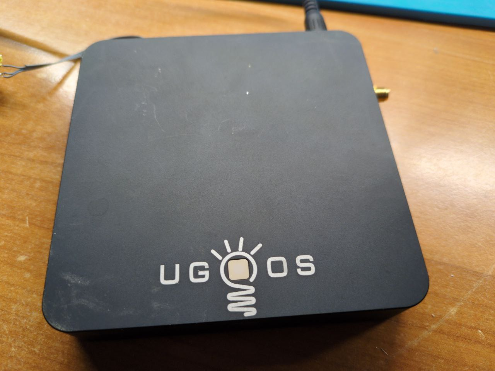

Ugoos AM3 (ugoos-am3)
This device is marked as not booting.
|
 Ugoos AM3 android TV box | |
| Manufacturer | Ugoos |
|---|---|
| Name | AM3 |
| Codename | ugoos-am3 |
| Model | AM3 |
| Released | 2018 |
| Type | set-top box |
| Hardware | |
| Chipset | Amlogic S912 |
| CPU | 4x 1.2/1.5/2 GHz Cortex-A53 |
| GPU | Mali-450 MP3 |
| Display | HDMI |
| Storage | 16 GB |
| Memory | 2 GB |
| Architecture | aarch64 |
| Software | |
| Original software | Android |
| Original version | 7.1 |
| postmarketOS | |
| Category | testing |
| Pre-built images | no |
| postmarketOS kernel | none |
| Unixbench Whet/Dhry score | 0.0 |
{kind=link}
Contributors
- jn
Users owning this device
Booting
- Ethernet doesn't seem to work in vendor U-Boot :(
- Vendor U-Boot can read FAT and EXT4 filesystems from USB storage:
- usb start
- fatls usb 0
- Vendor U-Boot can't boot FIT images produced by the Linux Kernel build system
$ unpack_bootimg --boot_img boot --format mkbootimg --header_version 0 --os_version 7.1.2 --os_patch_level 2017-12 --kernel out/kernel --ramdisk out/ramdisk --pagesize 0x00000800 --base 0x00000000 --kernel_offset 0x01080000 --ramdisk_offset 0x01000000 --second_offset 0x00f00000 --tags_offset 0x00000100 --board '' --cmdline buildvariant=userdebug
UART
- UART @ 3.3V, 115200 baud:
(4) (3) (2) [1]
Vcc RXD TXD GND- U-Boot shell and userspace shell on UART
- su without password
-
Ugoos AM3 (lid removed, board visible)
{kind=link}
boot log:
GXM:BL1:dc8b51:76f1a5;FEAT:ADFC318C:80;POC:3;RCY:0;EMMC:0;READ:0;0.0;CHK:0;
TE: 129868
BL2 Built : 11:04:41, Jan 26 2018.
gxl g034b32c - xingyu.chen@droid12-sz
set vdd cpu_a to 1120 mv
set vdd cpu_b to 1050 mv
set vddee to 1000 mv
Board ID = 3
CPU clk: 1200MHz
DQS-corr enabled
DDR scramble enabled
DDR3 chl: Rank0+1 @ 912MHz
bist_test rank: 0 1f 05 39 30 19 47 17 00 2f 32 1b 49 1e 03 3a 2d 14 46 21 05 3e 2c 11 48 685 rank: 1 1c 05 34 2d 18 43 15 00 2a 33 1c 4b 1d 08 33 2e 15 47 20 09 37 2d 12 48 685 - PASS
Rank0: 1024MB(auto)-2T-13
Rank1: 1024MB(auto)-2T-13
AddrBus test pass!
-s
Load fip header from eMMC, src: 0x0000c200, des: 0x01400000, size: 0x00004000
New fip structure!
Load bl30 from eMMC, src: 0x00010200, des: 0x01100000, size: 0x0000d600
Load bl31 from eMMC, src: 0x00020200, des: 0x05100000, size: 0x0002c600
Load bl33 from eMMC, src: 0x00050200, des: 0x01000000, size: 0x00065a00
NOTICE: BL3-1: v1.0(release):35dd647
NOTICE: BL3-1: Built : 15:20:30, Feb 7 2018
NOTICE: BL31: BL33 decompress pass
mpu_config_enable:ok
[Image: gxl_v1.1.3243-377db0f 2017-09-07 11:28:58 qiufang.dai@droid07]
OPS=0x82
wdt: reset registers!
2e e4 e7 27 a0 c9 42 d0 50 9a 77 ea [0.566996 Inits done]
secure task start!
high task start!
low task start!
ERROR: Error initializing runtime service opteed_fast
U-Boot 2015.01 (May 24 2018 - 17:33:13)
DRAM: 2 GiB
Relocation Offset is: 76eb4000
register usb cfg[0][1] = 0000000077f5b2e8
[CANVAS]canvas init
lyp gpiox_6 is low !
lyp gpiox_17 is low !
boot_device_flag : 1
Nand PHY Ver:1.01.001.0006 (c) 2013 Amlogic Inc.
init bus_cycle=6, bus_timing=7, system=5.0ns
reset failed
get_chip_type and ret:fffffffe
get_chip_type and ret:fffffffe
chip detect failed and ret:fffffffe
nandphy_init failed and ret=0xfffffff1
MMC: aml_priv->desc_buf = 0x0000000073eb46b0
aml_priv->desc_buf = 0x0000000073eb69d0
SDIO Port B: 0, SDIO Port C: 1
emmc/sd response timeout, cmd8, status=0x1ff2800
emmc/sd response timeout, cmd55, status=0x1ff2800
init_part() 293: PART_TYPE_AML
[mmc_init] mmc init success
dtb magic edfe0dd0
Amlogic multi-dtb tool
Single dtb detected
start dts,buffer=0000000073eb9200,dt_addr=0000000073eb9200
Amlogic multi-dtb tool
Single dtb detected
parts: 11
00: logo 0000000002000000 1
01: recovery 0000000002000000 1
02: rsv 0000000000800000 1
03: tee 0000000000800000 1
04: crypt 0000000002000000 1
05: misc 0000000002000000 1
06: instaboot 0000000000000000 1
07: boot 0000000002000000 1
08: system 0000000060000000 1
09: cache 0000000025000000 2
10: data ffffffffffffffff 4
init_part() 293: PART_TYPE_AML
eMMC/TSD partition table have been checked OK!
check pattern success
mmc env offset: 0x2c400000
In: serial
Out: serial
Err: serial
reboot_mode=cold_boot
[store]To run cmd[emmc dtb_read 0x1000000 0x40000]
_verify_dtb_checksum()-917: calc 2bd21f6d, store 2bd21f6d
_verify_dtb_checksum()-917: calc 2bd21f6d, store 2bd21f6d
dtb_read()-1039: total valid 2
dtb_read()-1106: do nothing
Amlogic multi-dtb tool
Single dtb detected
vpu: clk_level in dts: 7
vpu: set clk: 666667000Hz, readback: 666660000Hz(0x300)
vpu: vpu_clk_gate_init_off
vpp: vpp_init
hpd_state=0
cvbs performance type = 6, table = 0
vpp: vpp_pq_load pq val error !!!
Net: dwmac.c9410000amlkey_init() enter!
[EFUSE_MSG]keynum is 4
[BL31]: tee size: 0
MAC string from dtb: 20:18:0e:e7:67:47
Start read misc partition datas!
info->attemp_times = 0
info->active_slot = 0
info->slot_info[0].bootable = 1
info->slot_info[0].online = 1
info->slot_info[1].bootable = 0
info->slot_info[1].online = 0
info->attemp_times = 0
attemp_times = 0
active slot = 0
wipe_data=successful
wipe_cache=successful
upgrade_step=2
[OSD]load fb addr from dts
[OSD]fb_addr for logo: 0x7f851000
[OSD]load fb addr from dts
[OSD]fb_addr for logo: 0x7f851000
[CANVAS]addr=0x7f851000 width=3840, height=2160
amlkey_init() enter!
amlkey_init() 71: already init!
[EFUSE_MSG]keynum is 4
[BL31]: tee size: 0
[KM]Error:f[key_manage_query_size]L507:key[usid] not programed yet
[KM]Error:f[key_manage_query_size]L507:key[deviceid] not programed yet
saradc - saradc sub-system
Usage:
saradc saradc open <channel> - open a SARADC channel
saradc close - close the SARADC
saradc getval - get the value in current channel
saradc test - test the SARADC by channel-7
saradc get_in_range <min> <max> - return 0 if current value in the range of current channel
InUsbBurn
noSof
Hit Enter or space or Ctrl+C key to stop autoboot -- : 1 ��� 0
ee_gate_off ...
## Booting Android Image at 0x01080000 ...
reloc_addr =73f393d0
copy done
Kernel command line: buildvariant=userdebug
load dtb from 0x1000000 ......
Amlogic multi-dtb tool
Single dtb detected
Uncompressing Kernel Image ... OK
kernel loaded at 0x01080000, end = 0x0226ebc8
Loading Ramdisk to 73d32000, end 73ea1e20 ... OK
Loading Device Tree to 000000001fff2000, end 000000001ffffcc1 ... OK
fdt_instaboot: no instaboot image
Starting kernel ...
uboot time: 2409764 us
[ 0.000000@0] Initializing cgroup subsys cpu
[ 0.000000@0] Initializing cgroup subsys cpuacct
[ 0.000000@0] Linux version 3.14.29 (ugoos@ug-u-vm7) (gcc version 4.9.2 20140904 (prerelease) (crosstool-NG linaro-1.13.1-4.9-2014.09 - Linaro GCC 4.9-2014.09) ) #77 SMP PREEMPT Tue Mar 26 10:20:08 MSK 2019
[ 0.000000@0] CPU: AArch64 Processor [410fd034] revision 4
[ 0.000000@0] no prop version_code
[ 0.000000@0] bootconsole [earlycon0] enabled
[ 0.000000@0] fdt Reserved memory table:
[ 0.000000@0] linux,di: 0x000000007e200000 - 0x0000000080000000 (30 MiB)
[ 0.000000@0] DI: DI reserved memory: created CMA memory pool at 0x000000007e200000, size 30 MiB
[ 0.000000@0] linux,chunk-reserve: 0x000000007a200000 - 0x000000007e200000 (64 MiB)
[ 0.000000@0] linux,ion-dev: 0x0000000076200000 - 0x000000007a200000 (64 MiB)
[ 0.000000@0] linux,vdin1_cma: 0x0000000075000000 - 0x0000000076000000 (16 MiB)
[ 0.000000@0] cma: Reserved 16 MiB at 75000000, total cma pages:4096
[ 0.000000@0] linux,ppmgr: 0x0000000076200000 - 0x0000000076200000 (0 MiB)
[ 0.000000@0] linux,codec_mm_cma: 0x000000005ec00000 - 0x0000000073c00000 (336 MiB)
[ 0.000000@0] cma: Reserved 336 MiB at 5ec00000, total cma pages:90112
[ 0.000000@0] linux,picdec: 0x0000000076200000 - 0x0000000076200000 (0 MiB)
[ 0.000000@0] Reserved memory: incorrect alignment of CMA region
[ 0.000000@0] linux,codec_mm_reserved: 0x000000005ab00000 - 0x000000005ec00000 (65 MiB)
[ 0.000000@0] fdt Reserved memory total: 579 MiB
[ 0.000000@0] cma: Reserved 8 MiB at 74800000, total cma pages:92160
[ 0.000000@0] psci: Using PSCI v0.1 Function IDs from DT
[ 0.000000@0] PERCPU: Embedded 12 pages/cpu @ffffffc07616c000 s19968 r8192 d20992 u49152
[ 0.000000@0] Built 1 zonelists in Zone order, mobility grouping on. Total pages: 515843
[ 0.000000@0] Kernel command line: rootfstype=ramfs init=/init console=ttyS0,115200 no_console_suspend earlyprintk=aml-uart,0xc81004c0 ramoops.pstore_en=1 ramoops.record_size=0x8000 ramoops.console_size=0x4000 androidboot.selinux=permissive logo=osd1,loaded,0x3d800000,576cvbs maxcpus=8 vout=576cvbs,enable hdmimode=2160p60hz cvbsmode=576cvbs hdmitx= cvbsdrv=0 pq= androidboot.firstboot=0 jtag=apao androidboot.hardware=amlogic mac=20:18:0e:e7:67:47 androidboot.mac=20:18:0e:e7:67:47 androidboot.slot_suffix=_a buildvariant=userdebug
[ 0.000000@0] logo: osd1
[ 0.000000@0] logo: loaded
[ 0.000000@0] logo: 0x3d800000
[ 0.000000@0] logo: 576cvbs
[ 0.000000@0] vout_serve: 576cvbs
[ 0.000000@0] vout_serve: enable: 1
[ 0.000000@0] logo: get hdmimode: 2160p60hz
[ 0.000000@0] logo: get cvbsmode: 576cvbs
[ 0.000000@0] tv_vout: cvbs performance line = 0
[ 0.000000@0] [amvecm] pq string error !!!
[ 0.000000@0] jtag: jtag select 2
[ 0.000000@0] PID hash table entries: 4096 (order: 3, 32768 bytes)
[ 0.000000@0] Dentry cache hash table entries: 262144 (order: 9, 2097152 bytes)
[ 0.000000@0] Inode-cache hash table entries: 131072 (order: 8, 1048576 bytes)
[ 0.000000@0] Memory: 1438952K/2092032K available (11438K kernel code, 1294K rwdata, 4300K rodata, 1323K init, 3806K bss, 653080K reserved)
[ 0.000000@0] Virtual kernel memory layout:
[ 0.000000@0] vmalloc : 0xffffff8000000000 - 0xffffff807fff0000 ( 2047 MB)
[ 0.000000@0] vmemmap : 0xffffff8080000000 - 0xffffff8081c00000 ( 28 MB)
[ 0.000000@0] modules : 0xffffffbffc000000 - 0xffffffc000000000 ( 64 MB)
[ 0.000000@0] memory : 0xffffffc000000000 - 0xffffffc080000000 ( 2048 MB)
[ 0.000000@0] .init : 0xffffffc001fe0000 - 0xffffffc00212ae00 ( 1324 kB)
[ 0.000000@0] .text : 0xffffffc001080000 - 0xffffffc001fdf874 ( 15743 kB)
[ 0.000000@0] .data : 0xffffffc00212b000 - 0xffffffc00226ebc8 ( 1295 kB)
[ 0.000000@0] PM: Registered nosave memory: [mem 0x01080000-0x01fdefff]
[ 0.000000@0] SLUB: HWalign=64, Order=0-1, MinObjects=0, CPUs=8, Nodes=1
[ 0.000000@0] arch_multi_cluster:1
[ 0.000000@0] Preemptible hierarchical RCU implementation.
[ 0.000000@0] NR_IRQS:64 nr_irqs:64 0
[ 0.000000@0] Architected cp15 timer(s) running at 24.00MHz (phys).
[ 0.000004@0] sched_clock: 56 bits at 24MHz, resolution 41ns, wraps every 2863311519744ns
[ 0.008248@0] meson_bc_timer: mclk->mux_reg =ffffff8000014990,mclk->reg =ffffff8000016994
[ 0.016833@0] Console: colour dummy device 80x25
[ 0.021097@0] Calibrating delay loop (skipped), value calculated using timer frequency.. 48.00 BogoMIPS (lpj=240000)
[ 0.031672@0] pid_max: default: 32768 minimum: 301
[ 0.036581@0] Security Framework initialized
[ 0.040787@0] SELinux: Initializing.
[ 0.044528@0] Mount-cache hash table entries: 4096 (order: 3, 32768 bytes)
[ 0.051368@0] Mountpoint-cache hash table entries: 4096 (order: 3, 32768 bytes)
[ 0.065176@0] Initializing cgroup subsys debug
[ 0.065215@0] Initializing cgroup subsys freezer
[ 0.068727@0] ftrace: allocating 39323 entries in 154 pages
[ 0.125856@0] /cpus/cpu@0: Missing clock-frequency property
[ 0.125897@0] /cpus/cpu@1: Missing clock-frequency property
[ 0.131478@0] /cpus/cpu@2: Missing clock-frequency property
[ 0.137105@0] /cpus/cpu@3: Missing clock-frequency property
[ 0.142679@0] /cpus/cpu@100: Missing clock-frequency property
[ 0.148461@0] /cpus/cpu@101: Missing clock-frequency property
[ 0.154230@0] /cpus/cpu@102: Missing clock-frequency property
[ 0.160012@0] /cpus/cpu@103: Missing clock-frequency property
[ 0.165781@0] hw perfevents: enabled with arm/armv8-pmuv3 PMU driver, 7 counters available
[ 0.216082@0] Meson chip version = RevA (22:A - 82:0)
[ 0.234509@1] CPU1: Booted secondary processor
[ 0.254482@2] CPU2: Booted secondary processor
[ 0.274492@3] CPU3: Booted secondary processor
[ 0.294524@4] CPU4: Booted secondary processor
[ 0.314522@5] CPU5: Booted secondary processor
[ 0.334540@6] CPU6: Booted secondary processor
[ 0.354568@7] CPU7: Booted secondary processor
[ 0.354659@0] Brought up 8 CPUs
[ 0.383477@0] SMP: Total of 8 processors activated.
[ 0.397463@2] sched: registering cpufreq notifiers for scale-invariant loads
[ 0.398991@2] instabooting: 0
[ 0.413773@2] cma: cma_init_reserved_areas, use_cma_first:1
[ 0.413878@2] pinctrl core: initialized pinctrl subsystem
[ 0.419881@2] regulator-dummy: no parameters
[ 0.424386@3] NET: Registered protocol family 16
[ 0.430557@2] ramoops: using module parameters
[ 0.433210@2] console [pstore-1] enabled
[ 0.436544@2] pstore: Registered ramoops as persistent store backend
[ 0.442944@2] ramoops: attached 0x100000@0x7300000, ecc: 0/0
[ 0.449628@2] cpuidle: using governor menu
[ 0.453006@3] aml_vdac_init: module init
[ 0.456865@2] register canvas platform driver
[ 0.461130@3] register rdma platform driver
[ 0.467412@3] vdso: 2 pages (1 code, 1 data) at base ffffffc002134000
[ 0.471806@3] hw-breakpoint: found 6 breakpoint and 4 watchpoint registers.
[ 0.479073@3] DMA: preallocated 256 KiB pool for atomic allocations
[ 0.485981@3] software IO TLB [mem 0x58000000-0x58400000] (4MB) mapped at [ffffffc058000000-ffffffc0583fffff]
[ 0.494995@3] Serial: AMBA PL011 UART driver
[ 0.499982@3] aml_i2c version: 20140813
[ 0.503407@2] i2c-core: driver [pmu4] using legacy resume method
[ 0.509389@2] codec_mm:codec_mm_module_init
[ 0.513466@2] media_configs_system_init
[ 0.517390@2] aml_watch_point_probe, in
[ 0.521562@2] meson_mpll_clk: register mpll_clk_out0 success done
[ 0.527243@2] meson_mpll_clk: register mpll_clk_out1 success done
[ 0.533322@2] meson_mpll_clk: register mpll_clk_out2 success done
[ 0.539663@2] clk_sys: register PLL sys_pll success done
[ 0.544789@2] gxl_clk: [ xtal ] ->clockrate: 24000000Hz
[ 0.550162@2] gxl_clk: [ 32Khz ] ->clockrate: 32000Hz
[ 0.555283@2] gxl_clk: [ clk81 ] ->clockrate: 166666666Hz
[ 0.560801@2] gxl_clk: [ fixed_pll ] ->clockrate: 2000000000Hz
[ 0.566744@2] gxl_clk: [ fclk_div2 ] ->clockrate: 1000000000Hz
[ 0.572710@2] gxl_clk: [ fclk_div3 ] ->clockrate: 666666666Hz
[ 0.578557@2] gxl_clk: [ fclk_div4 ] ->clockrate: 500000000Hz
[ 0.584425@2] gxl_clk: [ fclk_div5 ] ->clockrate: 400000000Hz
[ 0.590281@2] gxl_clk: [ fclk_div7 ] ->clockrate: 285714285Hz
[ 0.596177@2] gxl_clk: clock initialization complete
[ 0.601312@2] clkmsr: Gxl msr_clk_reg0=ffffff800003c75c,msr_clk_reg2=ffffff800003e764
[ 0.611680@2] aml_iomap: amlogic iomap probe done
[ 0.614544@3] pinmux-gxl c1109880.pinmux: Init pinux probe!
[ 0.620658@2] pinmux-gxl c1109880.pinmux: Probed amlogic pinctrl driver
[ 0.626966@2] aml-i2c c11087c0.i2c: add adapter aml_i2c_adap2(ffffffc0585198e0)
[ 0.633692@2] genirq: Setting trigger mode 8 for irq 241 failed (gic_set_type+0x0/0xbc)
[ 0.641396@2] genirq: Setting trigger mode 8 for irq 242 failed (gic_set_type+0x0/0xbc)
[ 0.649650@2] genirq: Setting trigger mode 8 for irq 241 failed (gic_set_type+0x0/0xbc)
[ 0.657492@2] genirq: Setting trigger mode 8 for irq 242 failed (gic_set_type+0x0/0xbc)
domain-0 init dvfs: 4
domain-1 init dvfs: 4
[ 0.677943@2] codec_mm has 2 memory regions
[ 0.678007@2] codec_mm codec_mm.20: assigned reserved memory node linux,codec_mm_cma ok
[ 0.684617@2] codec_mm codec_mm.20: assigned reserved memory node linux,codec_mm_reserved ok
[ 0.693241@2] codec_mm has 2 memory regions
[ 0.697311@2] codec_mm codec_mm.20: assigned reserved memory node linux,codec_mm_cma ok
[ 0.705359@2] codec_mm codec_mm.20: assigned reserved memory node linux,codec_mm_reserved ok
[ 0.716254@2] vpu: driver version: v04
[ 0.717617@2] vpu: load vpu_clk: 666667000Hz(7)
[ 0.722247@3] vpu: vpu_probe OK
[ 0.727022@3] tv_vout: tvout_probe
[ 0.728713@3] tv_vout: chrdev devno 266338304 for disp
[ 0.733937@3] vout_notify: vout_register_server
[ 0.738420@3] tv_vout: register tv module server ok
[ 0.743562@2] tv_vout: create cdev tv
[ 0.747035@2] tv_vout: tvout_probe OK
[ 0.751339@2] canvas_probe reg=00000000c8838000,size=400
[ 0.756035@2] canvas maped reg_base =ffffff800009c000
[ 0.765329@3] rdma_probe
[ 1.150848@3] bio: create slab <bio-0> at 0
[ 1.152019@2] SCSI subsystem initialized
[ 1.154047@3] usbcore: registered new interface driver usbfs
[ 1.159286@2] usbcore: registered new interface driver hub
[ 1.164831@2] usbcore: registered new device driver usb
[ 1.170831@2] i2c-gpio i2c_gpio.41: using pins 172 (SDA) and 173 (SCL)
[ 1.176624@3] Linux video capture interface: v2.00
[ 1.181557@3] pps_core: LinuxPPS API ver. 1 registered
[ 1.186395@3] pps_core: Software ver. 5.3.6 - Copyright 2005-2007 Rodolfo Giometti <giometti@linux.it>
[ 1.196347@2] PTP clock support registered
[ 1.200607@2] hdmitx: system: Ver: 2014May6
[ 1.204268@2] hdmitx: amhdmitx_probe
[ 1.208008@3] hdmitx: hdmi_init_chip_type: 0
[ 1.212019@3] hdmitx hpd irq = 89
[ 1.216110@3] hdmitx20: Mapped PHY: 0xc1100000
[ 1.219742@3] hdmitx20: Mapped PHY: 0xc8834400
[ 1.224200@3] hdmitx20: Mapped PHY: 0xd0100000
[ 1.228752@3] hdmitx20: Mapped PHY: 0xc8100000
[ 1.233121@3] hdmitx20: Mapped PHY: 0xc883c000
[ 1.237582@3] hdmitx20: Mapped PHY: 0xc1104400
[ 1.242051@3] hdmitx20: Mapped PHY: 0xc883a000
[ 1.246506@3] hdmitx20: Mapped PHY: 0xda83a000
[ 1.250970@3] hdmitx20: Mapped PHY: 0xd0044000
[ 1.255744@3] avmute set to 1
[ 1.258410@3] hdmitx: attr default
[ 1.262369@2] tv_vout: tv_set_current_vmode[926]fps_target_mode=8
[ 1.267948@2] tv_vout: mode is 8,sync_duration_den=1,sync_duration_num=50
[ 1.274820@2] tv_vout: already display in uboot
[ 1.279318@2] vout_serve: vinfo mode is: 576cvbs
[ 1.283955@2] vout_serve: init mode 576cvbs
[ 1.288423@3] vout_serve: create_vout_fops OK
[ 1.292532@3] vout_serve: create vout attribute OK
[ 1.297356@3] vout_serve: meson_vout_probe OK
[ 1.301925@2] logo: logo_init
[ 1.305132@2] osd_rdma: osd_rdma_init: rdma_table p=0x74841000,op=0x74841000 , v=0xffffff80000c9000
[ 1.313833@2] rdma_register, rdma_table_addr ffffff80000d9000 rdma_table_addr_phy 74842000 reg_buf ffffffc057df3000
[ 1.324322@2] rdma_register success, handle 1 table_size 4096
[ 1.330068@2] osd_rdma: osd_rdma_init:osd reset rdma handle = 1.
[ 1.336138@2] rdma_register, rdma_table_addr ffffff80000db000 rdma_table_addr_phy 74843000 reg_buf ffffffc057cd4000
[ 1.346625@2] rdma_register success, handle 2 table_size 4096
[ 1.352380@2] osd_rdma: osd_rdma_init:osd rdma handle = 2.
[ 1.358409@3] Advanced Linux Sound Architecture Driver Initialized.
[ 1.364899@3] Bluetooth: Core ver 2.18
[ 1.368111@2] NET: Registered protocol family 31
[ 1.372595@2] Bluetooth: HCI device and connection manager initialized
[ 1.379178@2] Bluetooth: HCI socket layer initialized
[ 1.384234@2] Bluetooth: L2CAP socket layer initialized
[ 1.389532@2] Bluetooth: SCO socket layer initialized
[ 1.394562@2] NetLabel: Initializing
[ 1.398142@2] NetLabel: domain hash size = 128
[ 1.402699@2] NetLabel: protocols = UNLABELED CIPSOv4
[ 1.407901@2] NetLabel: unlabeled traffic allowed by default
[ 1.416141@3] Switched to clocksource arch_sys_counter
[ 1.460084@3] register gxtv_demod demod driver
[ 1.460498@2] [amlatvdemod..]aml_atvdemod_init.
[ 1.463621@2] NET: Registered protocol family 2
[ 1.468654@2] TCP established hash table entries: 16384 (order: 5, 131072 bytes)
[ 1.475641@2] TCP bind hash table entries: 16384 (order: 6, 262144 bytes)
[ 1.482594@2] TCP: Hash tables configured (established 16384 bind 16384)
[ 1.489286@2] TCP: reno registered
[ 1.492484@2] UDP hash table entries: 1024 (order: 3, 32768 bytes)
[ 1.498741@2] UDP-Lite hash table entries: 1024 (order: 3, 32768 bytes)
[ 1.505588@2] NET: Registered protocol family 1
[ 1.510254@2] RPC: Registered named UNIX socket transport module.
[ 1.516016@2] RPC: Registered udp transport module.
[ 1.520924@2] RPC: Registered tcp transport module.
[ 1.525814@2] RPC: Registered tcp NFSv4.1 backchannel transport module.
[ 1.532664@2] pwm: output_co = 16 ; clock_co = 8
[ 1.537137@2] pwm: npwm= 16
[ 1.540133@2] pwm: probe ok
[ 1.543107@3] wifi: power_on_pin_OD = 0;
[ 1.546699@3] aml_wifi wifi.36: [wifi_dev_probe] no power_on_pin2
[ 1.552794@3] aml_wifi wifi.36: [pwm_double_channel_conf_dt] pwm phandle val=3d;pwm-channel1=4;pwm-channel2=12
[ 1.562837@3] aml_wifi wifi.36: [pwm_double_channel_conf_dt] pwm_config1[0] = 30541
[ 1.570535@3] aml_wifi wifi.36: [pwm_double_channel_conf_dt] pwm_config2[0] = 30518
[ 1.578234@3] aml_wifi wifi.36: [pwm_double_channel_conf_dt] pwm_config1[1] = 15270
[ 1.585928@3] aml_wifi wifi.36: [pwm_double_channel_conf_dt] pwm_config2[1] = 15259
[ 1.593634@3] aml_wifi wifi.36: [pwm_double_channel_conf_dt] pwm_config1[2] = 6
[ 1.600984@3] aml_wifi wifi.36: [pwm_double_channel_conf_dt] pwm_config2[2] = 9
[ 1.608334@3] aml_wifi wifi.36: [pwm_double_channel_conf_dt] wifi pwm dt ok
[ 1.615344@3] aml_wifi wifi.36: [pwm_double_channel_conf] wifi pwm conf ok
[ 1.622291@3] aml_wifi wifi.36: [wifi_dev_probe] dhd_static_buf setup
[ 1.628792@3] Wifi: bcmdhd_init_wlan_mem: bcmdhd_init_wlan_mem: WIFI MEM Allocated
[ 1.636337@3] aml_wifi wifi.36: [wifi_dev_probe] interrupt_pin=241
[ 1.642541@3] aml_wifi wifi.36: [wifi_dev_probe] irq_num=100, irq_trigger_type=1
[ 1.649985@3] aml_wifi wifi.36: [wifi_dev_probe] power_on_pin=240
[ 1.656103@3] aml_wifi wifi.36: [wifi_dev_probe] clock_32k_pin=0
[ 1.662448@2] aml_wifi wifi.36: [wifi_setup_dt] wifi_setup_dt
[ 1.667962@2] aml_wifi wifi.36: [wifi_setup_dt] interrupt_pin(241)
[ 1.674136@2] aml_wifi wifi.36: [wifi_setup_dt] power_on_pin(240)
[ 1.680637@3] Unpacking initramfs...
[ 1.742590@3] Freeing initrd memory: 1468K (ffffffc073d32000 - ffffffc073ea1000)
[ 1.749935@2] futex hash table entries: 2048 (order: 5, 131072 bytes)
[ 1.750989@2] Initialise system trusted keyring
[ 1.755512@2] audit: initializing netlink subsys (disabled)
[ 1.761117@2] audit: type=2000 audit(1.690:1): initialized
[ 1.767452@2] HugeTLB registered 2 MB page size, pre-allocated 0 pages
[ 1.780691@3] VFS: Disk quotas dquot_6.5.2
[ 1.780962@3] Dquot-cache hash table entries: 512 (order 0, 4096 bytes)
[ 1.791020@3] NFS: Registering the id_resolver key type
[ 1.791158@3] Key type id_resolver registered
[ 1.795498@3] Key type id_legacy registered
[ 1.800435@2] NTFS driver 2.1.30 [Flags: R/O].
[ 1.804529@3] jffs2: version 2.2. (NAND) (SUMMARY) © 2001-2006 Red Hat, Inc.
[ 1.812322@3] fuse init (API version 7.22)
[ 1.816233@3] msgmni has been set to 3533
[ 1.821243@2] NET: Registered protocol family 38
[ 1.824209@2] Key type asymmetric registered
[ 1.828671@2] Asymmetric key parser 'x509' registered
[ 1.833949@3] Block layer SCSI generic (bsg) driver version 0.4 loaded (major 246)
[ 1.841417@3] io scheduler noop registered
[ 1.845286@3] io scheduler deadline registered
[ 1.850126@2] io scheduler cfq registered (default)
[ 1.904672@3] meson-rng c8834000.rng: hwrng registered
[ 1.908702@2] loop: module loaded
[ 1.909335@2] zram: Created 1 device(s) ...
[ 1.912782@2] mtdoops: mtd device (mtddev=name/number) must be supplied
[ 1.920365@2] tun: Universal TUN/TAP device driver, 1.6
[ 1.923680@2] tun: (C) 1999-2004 Max Krasnyansky <maxk@qualcomm.com>
[ 2.055334@2] libphy: stmmac: probed
[ 2.055367@2] eth0: PHY ID 001cc916 at 0 IRQ POLL (stmmac-0:00) active
[ 2.059911@2] eth0: PHY ID 001cc916 at 7 IRQ POLL (stmmac-0:07)
[ 2.066381@2] PPP generic driver version 2.4.2
[ 2.070523@3] PPP BSD Compression module registered
[ 2.075211@3] PPP Deflate Compression module registered
[ 2.080511@3] PPP MPPE Compression module registered
[ 2.085447@3] NET: Registered protocol family 24
[ 2.090295@3] usbcore: registered new interface driver asix
[ 2.095862@2] usbcore: registered new interface driver ax88179_178a
[ 2.102194@3] usbcore: registered new interface driver cdc_ether
[ 2.108176@3] usbcore: registered new interface driver net1080
[ 2.114005@2] usbcore: registered new interface driver cdc_subset
[ 2.120183@3] usbcore: registered new interface driver zaurus
[ 2.125931@3] usbcore: registered new interface driver cdc_ncm
[ 2.132020@2] ehci_hcd: USB 2.0 'Enhanced' Host Controller (EHCI) Driver
[ 2.138412@2] ehci-h20ahb: H20AHB-EHCI Host Controller driver
[ 2.144462@3] ohci_hcd: USB 1.1 'Open' Host Controller (OHCI) Driver
[ 2.151059@2] usbcore: registered new interface driver cdc_acm
[ 2.156435@2] cdc_acm: USB Abstract Control Model driver for USB modems and ISDN adapters
[ 2.164791@3] usbcore: registered new interface driver usb-storage
[ 2.171147@2] usbcore: registered new interface driver usbserial
[ 2.177718@2] amlogic-new-usb2 d0078000.usb2phy: USB2 phy probe:phy_mem:0xd0078000, iomap phy_base:0xffffff800011a000
[ 2.187876@2] amlogic-new-usb3 d0078080.usb3phy: This phy has no usb port
[ 2.194409@2] amlogic-new-usb3 d0078080.usb3phy: USB3 phy probe:phy_mem:0xd0078080, iomap phy_base:0xffffff800011c080
[ 2.205806@3] mousedev: PS/2 mouse device common for all mice
[ 2.211423@3] usbcore: registered new interface driver xpad
[ 2.216606@3] usbcore: registered new interface driver usbtouchscreen
[ 2.223041@3] tchip_rm_init is here!
[ 2.226869@3] input: tchip_remote_key as /devices/virtual/input/input0
[ 2.233334@2] tchiprm_register_device is here!
[ 2.237763@3] input: tchip_remote_touch as /devices/virtual/input/input1
[ 2.244404@3] tchip_remote_abs_register_device is here!
[ 2.249739@2] input: tchip_remote_gsensor as /devices/virtual/input/input2
[ 2.256597@2] tchip_remote_gsensor_register_device is here!
[ 2.264095@2] rtc-hym8563 2-0051: rtc core: registered hym8563 as rtc0
[ 2.269136@3] i2c /dev entries driver
[ 2.272921@2] IR NEC protocol handler initialized
[ 2.277029@2] IR RC5(x) protocol handler initialized
[ 2.281971@2] IR RC6 protocol handler initialized
[ 2.286703@2] IR JVC protocol handler initialized
[ 2.291421@2] IR Sony protocol handler initialized
[ 2.296252@2] IR RC5 (streamzap) protocol handler initialized
[ 2.302008@2] IR SANYO protocol handler initialized
[ 2.306915@2] IR MCE Keyboard/mouse protocol handler initialized
[ 2.313135@2] usbcore: registered new interface driver uvcvideo
[ 2.318925@2] USB Video Class driver (1.1.1)
[ 2.323326@3] usbcore: registered new interface driver cx231xx
[ 2.329082@3] cx231xx: Cx231xx dvb Extension initialized
[ 2.335341@3] device-mapper: ioctl: 4.27.0-ioctl (2013-10-30) initialised: dm-devel@redhat.com
[ 2.343210@3] Bluetooth: HCI UART driver ver 2.2
[ 2.347697@3] Bluetooth: HCI H4 protocol initialized
[ 2.353049@3] cpu cpu0: bL_cpufreq_init: CPU 0 initialized
[ 2.360429@0] cpu cpu4: bL_cpufreq_init: CPU 4 initialized
[ 2.363861@0] arm_big_little: bL_cpufreq_register: Registered platform driver: scpi
[ 2.371724@0] CPUidle arm64: cpuidle init start!!
[ 2.376660@0] CPUidle arm64: cpuidle init done!
[ 2.381406@2] hidraw: raw HID events driver (C) Jiri Kosina
[ 2.389775@3] @@@@@@@@@@_____2______in dia_init()
[ 2.391000@3] ATVR driver - init called!
[ 2.398426@2] usbcore: registered new interface driver usbhid
[ 2.400709@2] usbhid: USB HID core driver
[ 2.405119@3] ashmem: initialized
[ 2.408485@2] logger: created 256K log 'log_main'
[ 2.412937@2] logger: created 256K log 'log_events'
[ 2.418075@3] logger: created 256K log 'log_radio'
[ 2.422668@3] logger: created 256K log 'log_system'
[ 2.428853@2] meson_uart c81004c0.serial: ==uart0 reg addr = ffffff800011e4c0
[ 2.434595@2] c81004c0.serial: ttyS0 at MMIO 0xc81004c0 (irq = 225, base_baud = 1500000) is a meson_uart
[ 2.449627@2] meson_uart c81004c0.serial: ttyS0 use xtal(8M) 24000000 change 0 to 115200
[ 2.452253@2] console [ttyS0] enabled
[ 2.452253@2] console [ttyS0] enabled
[ 2.459567@2] bootconsole [earlycon0] disabled
[ 2.459567@2] bootconsole [earlycon0] disabled
[ 2.468678@2] meson_uart c11084c0.serial: ==uart1 reg addr = ffffff800012a4c0
[ 2.475296@2] c11084c0.serial: ttyS1 at MMIO 0xc11084c0 (irq = 58, base_baud = 1500000) is a meson_uart
[ 2.485304@2] meson-gpu-clkgen c883c000.gpu_clk: can't request region for resource [mem 0xc883c000-0xc883cfff]
[ 2.494562@2] meson-gpu-clkgen: probe of c883c000.gpu_clk failed with error -16
[ 2.502192@2] hdmitx_hdcp_init
[ 2.505409@0] aml_vrtc rtc.35: rtc core: registered aml_vrtc as rtc1
[ 2.511371@2] BLASTER Driver Init
[ 2.514927@2] secmon has 1 memory regions
[ 2.518386@2] secmon: share in base: 0xffffff800013c000, share out base: 0xffffff800013e000
[ 2.526607@2] secmon secmon.4: assigned reserved memory node linux,secmon ok
[ 2.533580@2] secmon: probe done
[ 2.537127@2] storage: storage in base: 0xffffff8001800000
[ 2.542207@2] storage: storage out base: 0xffffff8001880000
[ 2.547762@2] storage: storage block base: 0xffffff8001900000
[ 2.553416@2] storage: probe done!
[ 2.557363@2] aml_sd_emmc_probe: line 3608
[ 2.560839@2] mmc driver version: 1.07, 2017-4-26: Support new emmc host controller for version 3
[ 2.570152@2] aml_sd_emmc_reg_init 1152
[ 2.573479@2] get property: ocr_avail, value:0x00200080
[ 2.579909@2] get property: f_min, value:300000
[ 2.586020@2] get property: f_max, value:100000000
[ 2.592410@2] get property: max_req_size, value:0x00020000
[ 2.598893@2] get property: pinname, str:emmc
[ 2.604652@2] get property: card_type, value:1
[ 2.610379@2] get property: gpio_dat3, str:
[ 2.615780@2] get property: hw_reset, str:
[ 2.621248@2] emmc:pdata->caps = c0000d47
[ 2.625182@2] emmc:pdata->caps2 = 18060
[ 2.628980@2] emmc:pdata->pm_caps = 0
[ 2.632618@2] storage 1, boot 1
[ 2.635700@2] get_storage_dev return 1
[ 2.676161@3] [aml_sd_emmc_probe] aml_sd_emmc_probe() success!
[ 2.676385@3] aml_sd_emmc_probe: line 3608
[ 2.680962@3] aml_sd_emmc_reg_init 1152
[ 2.684252@3] get property: ocr_avail, value:0x00200080
[ 2.690712@3] get property: f_min, value:400000
[ 2.696800@3] get property: f_max, value:100000000
[ 2.703175@3] get property: max_req_size, value:0x00020000
[ 2.709649@3] get property: irq_in, value:3
[ 2.715335@3] get property: irq_out, value:5
[ 2.721048@3] get property: gpio_cd, str:
[ 2.726496@3] get property: pinname, str:sd
[ 2.732082@3] get property: jtag_pin, str:
[ 2.737529@3] get property: card_type, value:5
[ 2.743207@3] get property: gpio_dat3, str:
[ 2.748675@3] sd:pdata->caps = 7
[ 2.751820@3] sd:pdata->caps2 = 0
[ 2.755096@3] sd:pdata->pm_caps = 0
[ 2.780907@1] emmc: BKOPS_EN bit is not set
[ 2.787387@1] emmc: trying cali 0-th time(s)
[ 2.794899@1] emmc: delay[0]= 1750 padding= 1, bidx=1
[ 2.794920@1] emmc: delay[1]= 1750 padding= 1, bidx=1
[ 2.796570@4] [aml_is_card_insert] card OUT
[ 2.796781@3] [aml_sd_emmc_probe] aml_sd_emmc_probe() success!
[ 2.796814@3] aml_sd_emmc_probe: line 3608
[ 2.796844@4] [aml_is_card_insert] card OUT
[ 2.797388@3] aml_sd_emmc_reg_init 1152
[ 2.797442@3] get property: ocr_avail, value:0x00200080
[ 2.797444@3] get property: f_min, value:400000
[ 2.797447@3] get property: f_max, value:200000000
[ 2.797449@3] get property: max_req_size, value:0x00020000
[ 2.797454@3] get property: pinname, str:sdio
[ 2.797459@3] get property: card_type, value:3
[ 2.797498@3] sdio:pdata->caps = 7810f
[ 2.797500@3] sdio:pdata->caps2 = 0
[ 2.797503@3] sdio:pdata->pm_caps = 1
[ 2.836170@2] [aml_sd_emmc_probe] aml_sd_emmc_probe() success!
[ 2.836960@2] ion_dev has 1 memory regions
[ 2.836997@2] ion_dev ion_dev.23: assigned reserved memory node linux,ion-dev ok
[ 2.864688@2] ion_chunk_heap_create: base 2048917504 size 67108864 align 0
[ 2.877963@2] ion_carveout_heap_create: base 1981808640 size 67108864 align 0
[ 2.878389@3] fb: osd_init_module
[ 2.878520@3] fb: viu vsync irq: 35
[ 2.878525@3] fb: failed to init reserved memory
[ 2.878527@3] fb: osd_set_free_scale_mode_hw
[ 2.878538@3] fb: osd_probe vinfo:ffffffc0021ed2a0
[ 2.878542@3] fb: init fbdev bpp is:32
[ 2.923975@1] emmc: delay[2]= 1750 padding= 1, bidx=1
[ 2.928960@1] emmc: delay[3]= 2000 padding= 4, bidx=2
[ 2.929019@3] fb: set osd0 reverse as NONE
[ 2.938005@1] emmc: delay[4]= 2000 padding= 4, bidx=2
[ 2.938498@0] fb: osd probe OK
[ 2.938737@3] ge2d: ge2d_init_module
[ 2.938746@3] ge2d: ge2d_dev major:240
[ 2.939096@3] ge2d: vpu clock is 666660000 HZ
[ 2.939107@3] ge2d: ge2d clock is 400 MHZ
[ 2.939117@3] ge2d: ge2d: pdev=ffffffc05859b800, irq=182, rstc=0xffffffc0576eb880,eclk=ffffffc05856e300
[ 2.939167@3] ge2d: mapped phy: 0xd0160000
[ 2.939172@3] ge2d: ge2d start monitor
[ 2.939235@0] ge2d: ge2d workqueue monitor start
[ 2.939456@0] sysled: module init
[ 2.939572@0] sysled: init level = 0
[ 2.939573@0] sysled: led_gpio = 164
[ 2.939574@0] sysled: active_low = 0
[ 2.939584@0] c9410000.ethernet is using the pin GPIOZ_9 as pinmux
[ 2.939592@0] pinmux-gxl c1109880.pinmux: request() failed for pin 19
[ 2.939595@0] pinmux-gxl c1109880.pinmux: pin-19 (banks:164) status -22
[ 2.939599@0] ------------[ cut here ]------------
[ 2.939612@0] WARNING: CPU: 0 PID: 1 at /media/ugoos/sdk/amlogic_7.1.1/common/drivers/gpio/gpiolib.c:207 gpio_ensure_requested+0x80/0xfc()
[ 2.939613@0] autorequest GPIO-164
[ 2.939617@0] Modules linked in:
[ 2.939622@0] CPU: 0 PID: 1 Comm: swapper/0 Not tainted 3.14.29 #77
[ 2.939624@0] Call trace:
[ 2.939632@0] [<ffffffc001088f2c>] dump_backtrace+0x0/0x144
[ 2.939635@0] [<ffffffc00108908c>] show_stack+0x1c/0x28
[ 2.939640@0] [<ffffffc001b94aec>] dump_stack+0x74/0xb8
[ 2.939646@0] [<ffffffc00109eb14>] warn_slowpath_common+0x98/0xc0
[ 2.939649@0] [<ffffffc00109ebb0>] warn_slowpath_fmt+0x74/0x88
[ 2.939652@0] [<ffffffc00146a658>] gpio_ensure_requested+0x7c/0xfc
[ 2.939655@0] [<ffffffc00146bfec>] gpiod_direction_output+0x70/0x2f4
[ 2.939662@0] [<ffffffc00178aff4>] aml_sysled_probe+0x130/0x1d0
[ 2.939668@0] [<ffffffc0014b6ec0>] platform_drv_probe+0x28/0x60
[ 2.939672@0] [<ffffffc0014b4e2c>] really_probe+0xd4/0x244
[ 2.939675@0] [<ffffffc0014b50c0>] __driver_attach+0xb0/0xb8
[ 2.939679@0] [<ffffffc0014b2e94>] bus_for_each_dev+0x68/0xac
[ 2.939682@0] [<ffffffc0014b48dc>] driver_attach+0x28/0x34
[ 2.939686@0] [<ffffffc0014b44e4>] bus_add_driver+0x158/0x210
[ 2.939689@0] [<ffffffc0014b587c>] driver_register+0x64/0x124
[ 2.939693@0] [<ffffffc0014b6e88>] __platform_driver_register+0x74/0x84
[ 2.939698@0] [<ffffffc00201e57c>] aml_sysled_init+0x20/0x40
[ 2.939701@0] [<ffffffc0010816a4>] do_one_initcall+0xd4/0x138
[ 2.939705@0] [<ffffffc001fe0918>] kernel_init_freeable+0x13c/0x1dc
[ 2.939710@0] [<ffffffc001b8e2ac>] kernel_init+0x1c/0xdc
[ 2.939726@0] ---[ end trace ae18f8cd377a901c ]---
[ 2.939730@0] c9410000.ethernet is using the pin GPIOZ_9 as pinmux
[ 2.939734@0] pinmux-gxl c1109880.pinmux: request() failed for pin 19
[ 2.939737@0] pinmux-gxl c1109880.pinmux: pin-19 (banks:164) status -22
[ 2.939875@3] sysled: module probed ok
[ 2.940293@3] pwmled: module init
[ 2.940387@3] codec:Amlogic A/V streaming port init
[ 2.942336@3] codec:get gate demux control ok ffffffc05729e300
[ 2.942340@3] codec:get gate parser_top control ok ffffffc05729e380
[ 2.942345@3] codec:get gate vpu_intr control ok ffffffc05729e400
[ 2.942351@3] codec:get gate vdec control ok ffffffc05729e480
[ 2.943218@3] codec:[tsync_pcr_init]init success.
[ 2.943252@3] codec:amvideocap_init_module
[ 2.943399@3] codec:amvideocap_probe,amvideocap
[ 2.943402@3] codec:use cma buf.
[ 2.943404@3] codec:amvideocap_dev_register
[ 2.944044@0] codec:amvdec_mmpeg4 module init
[ 2.945864@0] amvenc_avc_probe -- reserved memory config fail.
[ 2.945867@0] amvenc_avc - cma memory pool size: 40 MB
[ 2.945887@0] encode_wq_init.
[ 2.945892@0] encode start monitor.
[ 2.945946@2] encode workqueue monitor start.
[ 2.946369@3] jpegenc module init
[ 2.946713@0] codec:picdec_driver_probe called.
[ 2.946716@0] picdec has 1 memory regions
[ 2.946742@0] codec:picdec_driver_probe done.
[ 2.947559@3] codec:vdec_request_irq ffffffc0017f2ce4, vsync
[ 2.947764@0] codec:create_ge2d_work_queue video task ok
[ 2.948237@3] rdma_register, rdma_table_addr ffffff8000256000 rdma_table_addr_phy 74850000 reg_buf ffffffc057328000
[ 2.948240@3] rdma_register success, handle 3 table_size 32768
[ 2.948242@3] video_rdma:rdma_init video rdma handle = 3.
[ 2.948247@3] codec:used fix clk for vdec clk source!
[ 2.948251@3] codec:register clk_set_setting cpu[34]
[ 2.948700@3] vpu_init
[ 2.948876@3] vpu_probe
[ 2.948880@3] HevcEnc reserved memory config fail.
[ 2.948884@3] HevcEnc - cma memory pool size: 64 MB
[ 2.948887@3] HevcEnc - wave420l_irq: 219
[ 2.948947@3] vpu base address get from platform driver physical base addr=0xc8810000, virtual base=0xffffff80003d8000
[ 2.949256@3] success to probe vpu device with video memory from cma
[ 2.949535@0] DI: di_module_init ok.
[ 2.949539@0] DI: di_module_init: major 233
[ 2.949744@3] DI: di_probe
[ 2.949851@0] deinterlace has 1 memory regions
[ 2.949889@0] deinterlace deinterlace.27: assigned reserved memory node linux,di ok
[ 2.949893@0] DI-di_probe: get flag_cma error.
[ 2.949912@0] di_irq:78,timerc_irq:38
[ 2.950043@0] rdma_register, rdma_table_addr ffffff8000199000 rdma_table_addr_phy 7484a000 reg_buf ffffffc057386000
[ 2.950045@0] rdma_register success, handle 4 table_size 8192
[ 2.950047@0] DI: di_probe allocate rdma channel 4.
[ 2.950050@0] DI: DI hw version 2.
[ 2.950058@0] 0x000000db:Y=db,U=0,V=0
[ 2.950060@0] 0x000000dc:Y=dc,U=0,V=0
[ 2.950061@0] 0x000000dd:Y=dd,U=0,V=0
[ 2.950063@0] 0x000000de:Y=de,U=0,V=0
[ 2.950065@0] 0x000000df:Y=df,U=0,V=0
[ 2.950066@0] 0x000000e0:Y=e0,U=0,V=0
[ 2.950068@0] 0x000000e1:Y=e1,U=0,V=0
[ 2.950069@0] 0x000000e2:Y=e2,U=0,V=0
[ 2.950071@0] 0x000000e3:Y=e3,U=0,V=0
[ 2.950073@0] 0x000000f0:Y=f0,U=0,V=0
[ 2.950076@0] 0x000000f1:Y=f1,U=0,V=0
[ 2.950078@0] 0x000000f2:Y=f2,U=0,V=0
[ 2.950079@0] 0x000000f3:Y=f3,U=0,V=0
[ 2.950081@0] 0x000000f4:Y=f4,U=0,V=0
[ 2.950082@0] 0x000000f5:Y=f5,U=0,V=0
[ 2.950084@0] 0x000000f6:Y=f6,U=0,V=0
[ 2.950088@0] 0x000000f7:Y=f7,U=0,V=0
[ 2.950089@0] 0x000000f8:Y=f8,U=0,V=0
[ 2.950091@0] 0x000000f9:Y=f9,U=0,V=0
[ 2.950092@0] 0x000000fa:Y=fa,U=0,V=0
[ 2.950094@0] 0x000000fb:Y=fb,U=0,V=0
[ 2.950096@0] 0x000000fc:Y=fc,U=0,V=0
[ 2.950098@0] 0x000000fd:Y=fd,U=0,V=0
[ 2.950100@0] 0x000000fe:Y=fe,U=0,V=0
[ 2.950101@0] 0x000000ff:Y=ff,U=0,V=0
[ 2.950103@0] DI: support multi decoding 253~254~255.
[ 2.950172@0] DI: di_probe:Di use HRTIMER
[ 2.950558@3] efusekeynum: 4
[ 2.950566@3] efusekeyname: mac offset: 0 size: 6
[ 2.950572@3] efusekeyname: mac_bt offset: 6 size: 6
[ 2.950577@3] efusekeyname: mac_wifi offset: 12 size: 6
[ 2.950582@3] efusekeyname: usid offset: 18 size: 16
[ 2.950808@3] efuse efuse.10: probe OK!
[ 2.951147@0] key unify config unifykey-num is 14
[ 2.951190@0] key unify fact unifykey-num is 14
[ 2.951195@0] aml_unifykeys_probe:1280=============unifykey_devno:e700000
[ 2.951420@0] �6unifykey: device unifykeys created ok
[ 2.951531@3] �6aml_unifykeys_init done!
[ 2.951533@3] PPMGRDRV: warn: ppmgr module init func called
[ 2.951649@3] PPMGRDRV: err: ppmgr_driver_probe called
[ 2.951652@3] ppmgr has 1 memory regions
[ 2.951684@3] PPMGRDRV: info: ppmgr_dev major:230
[ 2.951912@3] PPMGRDRV: info: ppmgr_probe done
[ 2.952302@3] amlogic rfkill init
[ 2.952400@3] enter bt_probe of_node
[ 2.952417@3] not get gpio_en
[ 2.952421@3] power on valid level is high
[ 2.952422@3] bt: power_on_pin_OD = 0;
[ 2.952687@3] Bluetooth: BlueSleep Mode Driver Ver 1.2
[ 2.953200@3] ionvideo-000: V4L2 device registered as video13
[ 2.953300@0] ionvideo-001: V4L2 device registered as video14
[ 2.953397@3] ionvideo-002: V4L2 device registered as video15
[ 2.953506@0] ionvideo-003: V4L2 device registered as video16
[ 2.953613@3] ionvideo-004: V4L2 device registered as video17
[ 2.953722@0] ionvideo-005: V4L2 device registered as video18
[ 2.953828@3] ionvideo-006: V4L2 device registered as video19
[ 2.953935@0] ionvideo-007: V4L2 device registered as video20
[ 2.954039@3] ionvideo-008: V4L2 device registered as video21
[ 2.954040@3] ionvid: info: Video Technology Magazine Ion Video
[ 2.954042@3] ionvid: info: Capture Board ver 1.0 successfully loaded
[ 2.954053@3] audio_dsp: [dsp]register dsp to char divece(257)
[ 2.954673@0] amaudio: amaudio: driver amaudio succuess!
[ 2.954978@3] amlvid:info: amlvideo_init called
[ 2.954979@3] amlvid:info: amlvideo_create_instance called
[ 2.954982@3] amlvid:info: v4l2_dev.name=:amlvideo-000
[ 2.955105@0] amlvideo-000: V4L2 device registered as video10
[ 2.955431@0] vdin_drv_init: major 229
[ 2.955721@3] rdma_register, rdma_table_addr ffffff800019c000 rdma_table_addr_phy 7484c000 reg_buf ffffffc0573e4400
[ 2.955724@3] rdma_register success, handle 5 table_size 512
[ 2.955726@3] vdin_drv_probe:vdin.0 rdma hanld 5.
[ 2.955932@0]
[ 2.955932@0] vdin memory resource undefined!!
[ 2.955936@0] vdin0 cma_mem_size = 16 MB
[ 2.955940@0] vdin0 irq: 115 rdma irq: 2
[ 2.955975@0] vdin_drv_probe: fclk_div5 is 400 MHZ
[ 2.955995@0] vdin_drv_probe: vdin[0] clock is 50 MHZ
[ 2.956213@0] vdin_drv_probe: driver initialized ok
[ 2.956337@0] rdma_register, rdma_table_addr ffffff800019e000 rdma_table_addr_phy 7484d000 reg_buf ffffffc057383a00
[ 2.956339@0] rdma_register success, handle 6 table_size 512
[ 2.956341@0] vdin_drv_probe:vdin.1 rdma hanld 6.
[ 2.956517@3] vdin1 has 1 memory regions
[ 2.956551@3] vdin vdin1.29: assigned reserved memory node linux,vdin1_cma ok
[ 2.956553@3]
[ 2.956553@3] vdin memory resource done.
[ 2.956556@3] vdin1 cma_mem_size = 16 MB
[ 2.956561@3] vdin1 irq: 117 rdma irq: 4
[ 2.956587@3] vdin_drv_probe: fclk_div5 is 400 MHZ
[ 2.956593@3] vdin_drv_probe: vdin[1] clock is 50 MHZ
[ 2.956783@0] vdin_drv_probe: driver initialized ok
[ 2.956945@3] vdin_drv_init: vdin driver init done
[ 2.956950@3] tvafe_drv_init: major 228
[ 2.957291@3] tvafe: tvafe_init.
[ 2.957603@3] vbi: vbi_init.
[ 2.958078@0] [RX]-hdmirx: hdmirx_init.
[ 2.958080@0] ESM HLD: Initializing...
[ 2.958082@0] ESM HLD: Registering device range 'esm_rx'...
[ 2.958089@0] ESM HLD: Device range 'esm_rx' has been registered.
[ 2.958091@0] ESM HLD: Creating class /sys/class/elliptic_rx...
[ 2.958165@3] ESM HLD: The class /sys/class/elliptic_rx has been created.
[ 2.958167@3] ESM HLD: Creating device 'esm_rx'...
[ 2.958274@0] ESM HLD: Device 'esm_rx' has been created.
[ 2.958275@0] ESM HLD: Done initializing the HLD driver.
[ 2.958277@0] amvdec_656in module: init.
[ 2.958280@0] amvdec_656in_init_module. 1 hardware detected!.
[ 2.958283@0] amvdec_656in_init_module:major 225
[ 2.958487@3] amvdec_656in_probe:start probe .
[ 2.958493@3] amvdec_656in_probe: bt656 devp->index =0
[ 2.958525@3] amvdec_656in_probe: bt656[0] clock is 333 MHZ
[ 2.958680@3] amvdec_656in_probe:bt656[0]start get ioremap .
[ 2.958694@3] amvdec_656in_probe: bt656[0] maped reg_base =ffffff80001aa000, size=7c
[ 2.958696@3] amvdec_656in_probe: tvin_frontend_init done :0
[ 2.958704@3] amvdec_656in probe ok.
[ 2.958722@3] amvdec_656in_probe:start probe .
[ 2.958726@3] amvdec_656in_probe: bt656 devp->index =1
[ 2.958750@3] amvdec_656in_probe: bt656[1] clock is 333 MHZ
[ 2.958873@0] amvdec_656in_probe:bt656[1]start get ioremap .
[ 2.958882@0] amvdec_656in_probe: bt656[1] maped reg_base =ffffff80001ac000, size=7c
[ 2.958884@0] amvdec_656in_probe: tvin_frontend_init done :1
[ 2.958889@0] amvdec_656in probe ok.
[ 2.959041@3] amvdec_656in_init_module: bt656 driver init done
[ 2.959044@3] [viuin..]viuin_init_module viuin module init
[ 2.959446@3] [viuin..]viuin_probe probe ok.
[ 2.959516@0] aml_vecm_init:module init
[ 2.959651@0]
[ 2.959651@0] VECM probe start
[ 2.959927@0] Can't find wb_sel.
[ 2.959931@0] dolby_vision_init_receiver(dvel)
[ 2.959938@0] dolby_vision_init_receiver: dvel
[ 2.960058@0] aml_vecm_probe: ok
[ 2.960764@0] saradc c1108680.saradc: initialized by BL30
[ 2.960775@0] saradc c1108680.saradc: calibration start:
[ 2.960822@0] saradc c1108680.saradc: nominal=0, value=7
[ 2.960868@0] saradc c1108680.saradc: nominal=256, value=232
[ 2.960914@0] saradc c1108680.saradc: nominal=512, value=462
[ 2.960959@0] saradc c1108680.saradc: nominal=768, value=691
[ 2.961005@0] saradc c1108680.saradc: nominal=1023, value=919
[ 2.961008@0] saradc c1108680.saradc: calibration end: coef=4568
[ 2.961199@3] remote: Driver init
[ 2.961275@3] remote: platform_data g_remote_ao_offset=580
[ 2.961277@3] remote: platform_data irq =228
[ 2.961301@3] remote: set drvdata completed
[ 2.961316@3] remote: device_create_file completed
[ 2.961619@3] input: aml_keypad as /devices/meson-remote.12/input/input3
[ 2.961854@3] remote: input_register_device completed
[ 2.961908@3] remote: set_remote_mode[78]
[ 2.961931@3] remote: remote config major:223
[ 2.962119@3] remote: physical address:0x56c5a000
[ 2.962704@3] gpio-key gpio_keypad.51: gpio_key: 0 name(power) pin()
[ 2.962708@3] gpio-key gpio_keypad.51: amlogic_gpio_name_map_num pin 0!::
[ 2.962725@3] gpio-key gpio_keypad.51: gpio_key: 0 power(147)
[ 2.962756@3] gpio-key gpio_keypad.51: start setup_timer
[ 2.962763@3] gpio-key gpio_keypad.51: power key(116) registed.
[ 2.962957@0] input: gpio_keypad as /devices/gpio_keypad.51/input/input4
[ 2.963074@3] gpio-key gpio_keypad.51: gpio keypad register input device completed.
[ 2.963082@3] input input4: gpio keypad major:222
[ 2.964239@0] Sensor: lsm303d_init
[ 2.964453@3] Sensor: stk8313_init
[ 2.964526@0] Sensor: stk831x_init
[ 2.964597@3] Sensor: mxc622x_acc_init
[ 2.964677@0] Sensor: mxc6255xc_acc_init
[ 2.964836@0] Sensor: l3gd20_gyr_init
[ 2.965784@0] aml dvb init
[ 2.966241@0] Amlogic Demod DVB-T/C DebugIF Init
[ 2.966433@0] Amlogic Demod DVB-T/C DebugIF Init ok----------------
[ 2.968111@0] aml_wdt c11098d0.amlogic-watchdog: creat work queue for watch dog
[ 2.968351@0] aml_wdt c11098d0.amlogic-watchdog: AML Watchdog Timer probed done
[ 2.968578@3] jtag: module init
[ 2.968787@0] jtag: pinctrl setup apao
[ 2.968789@0] jtag: set state 2
[ 3.066160@3] input input4: key 116 up
[ 4.220076@1] emmc: delay[5]= 2000 padding= 4, bidx=2
[ 4.225041@1] emmc: delay[6]= 2000 padding= 4, bidx=2
fuse_pw_en: 0x3
WARNING! efuse bits is disabled
Enable A53 JTAG cluster 0 to AO
[ 4.243114@0] jtag: module probed ok
[ 4.243164@4] emmc: delay[7]= 2000 padding= 4, bidx=2
[ 4.243881@3] defendkey c8834500.defendkey: defendkey_devno:d900000
[ 4.244108@0] defendkey c8834500.defendkey: defendkey: device defendkey created ok
[ 4.244291@3] defendkey: driver init
[ 4.244944@3] input: cec_input as /devices/virtual/input/input5
[ 4.245173@0] cectx aocec: no hdmirx reg resource
[ 4.245177@0] cectx aocec: no hhi reg resource
[ 4.245184@0] cec: wake up flag:0
[ 4.246731@3] aml_aes_dma c883e000.aml_aes: Aml AES_dma
[ 4.247296@3] aml_tdes_dma c883e000.aml_tdes: Aml TDES_dma
[ 4.247948@0] aml_sha_dma c883e000.aml_sha: Aml SHA1/SHA224/SHA256 dma
[ 4.248548@0] usbcore: registered new interface driver snd-usb-audio
[ 4.250051@3] aml_codec_T9015 c8832000.t9015: aml_T9015_audio_codec_probe
[ 4.252237@0] aml-i2s-dai I2S.43: I2S Mic is in platform!
[ 4.252545@3] aml_pcm_dai: pcm mode detection =1
[ 4.252933@0] aml_spdif_dai: enterd aml_spdif_play,set_clock:-1,sample_rate=4
[ 4.252945@0] aml_spdif_dai: set normal 512 fs /4 fs
[ 4.252947@0] aml_spdif_dai: set 958 audio clk div 4
[ 4.252954@0] aml_audio_hw: IEC958 16bit
[ 4.252958@0] hdmitx: audio: aout notify rate 48000
[ 4.252960@0] hdmitx: audio: aout notify size 16
[ 4.252961@0] hdmitx: audio: aout notify format CT_PCM
[ 4.253774@0] aml_snd_card: aml_multi_dev_parse_of ...
[ 4.253777@0] aml_snd_card: no multi dev!
[ 4.365942@2] emmc: calibration result @ 0: max(2000), min(1750)
[ 4.371938@2] emmc: line_delay =0x111, max_cal_result =2000
[ 4.377348@2] emmc: base_index_max 2, base_index_min 1
[ 4.382424@2] emmc: clk 100000000 SDR mode tuning start
[ 4.388047@2] emmc: rx_tuning_result[0] = 10
[ 4.392247@2] emmc: rx_tuning_result[2] = 10
[ 4.396446@2] emmc: rx_tuning_result[3] = 10
[ 4.400667@2] emmc: rx_tuning_result[4] = 10
[ 4.404892@2] emmc: rx_tuning_result[5] = 10
[ 4.409112@2] emmc: rx_tuning_result[6] = 10
[ 4.413328@2] emmc: rx_tuning_result[7] = 10
[ 4.417602@2] emmc: rx_tuning_result[8] = 10
[ 4.421811@2] emmc: rx_tuning_result[9] = 10
[ 4.425629@2] emmc: best_win_start =2, best_win_size =9
[ 4.430812@2] emmc: sd_emmc_regs->gclock=0x100024a,sd_emmc_regs->gadjust=0x62000
[ 4.438143@2] emmc: gclock =0x100024a, gdelay=0x111, gadjust=0x62000
[ 4.444632@2] emmc: support driver strength type 1
[ 4.449317@2] emmc: try set sd/emmc to DDR mode
[ 4.453662@2] emmc: try set sd/emmc to DDR mode
[ 4.456369@0] aml_snd_card: headphone detection disable=1
[ 4.456373@0] aml_snd_card: no spk event delay time set
[ 4.469353@0] aml_snd_m8_card aml_m8_snd.50: T9015-audio-hifi <-> I2S.43 mapping ok
[ 4.469580@2] emmc: new HS400 MMC card at address 0001
[ 4.470360@1] emmc: clock 100000000, 8-bit-bus-width
[ 4.470360@1]
[ 4.470361@1] mmcblk0: emmc:0001 AJTD4R 14.5 GiB
[ 4.470485@1] mmcblk0boot0: emmc:0001 AJTD4R partition 1 4.00 MiB
[ 4.470598@1] mmcblk0boot1: emmc:0001 AJTD4R partition 2 4.00 MiB
[ 4.470712@1] mmcblk0rpmb: emmc:0001 AJTD4R partition 3 4.00 MiB
[ 4.510822@2] mmcblk0: unknown partition table
[ 4.515820@0] aml_snd_m8_card aml_m8_snd.50: dit-hifi <-> SPDIF.44 mapping ok
[ 4.522346@2] [mmc_read_partition_tbl] mmc read partition OK!
[ 4.522431@0] aml_pcm: enter aml_pcm_new dai->name: PCM.45 dai->id: 0
[ 4.522573@0] aml_snd_m8_card aml_m8_snd.50: pcm2bt-pcm <-> PCM.45 mapping ok
[ 4.522593@0] aml_snd_m8_card aml_m8_snd.50: ASoC: no source widget found for LOUTL
[ 4.522597@0] aml_snd_m8_card aml_m8_snd.50: ASoC: Failed to add route LOUTL -> direct -> Ext Spk
[ 4.522601@0] aml_snd_m8_card aml_m8_snd.50: ASoC: no source widget found for LOUTR
[ 4.522604@0] aml_snd_m8_card aml_m8_snd.50: ASoC: Failed to add route LOUTR -> direct -> Ext Spk
[ 4.524436@1] GACT probability NOT on
[ 4.524443@1] Mirror/redirect action on
[ 4.524446@1] u32 classifier
[ 4.524447@1] Actions configured
[ 4.524452@1] Netfilter messages via NETLINK v0.30.
[ 4.524500@1] nf_conntrack version 0.5.0 (16384 buckets, 65536 max)
[ 4.524945@0] ctnetlink v0.93: registering with nfnetlink.
[ 4.525415@1] xt_time: kernel timezone is -0000
[ 4.525423@1] ip_set: protocol 6
[ 4.525510@1] ipip: IPv4 over IPv4 tunneling driver
[ 4.616963@2] add_emmc_partition
[ 4.620299@0] ip_tables: (C) 2000-2006 Netfilter Core Team
[ 4.620358@1] [mmcblk0p01] bootloader offset 0x000000000000, size 0x000000400000
[ 4.620523@2] [mmcblk0p02] reserved offset 0x000002400000, size 0x000004000000
[ 4.620672@2] [mmcblk0p03] cache offset 0x000006c00000, size 0x000025000000
[ 4.620793@2] [mmcblk0p04] env offset 0x00002c400000, size 0x000000800000
[ 4.620914@2] [mmcblk0p05] logo offset 0x00002d400000, size 0x000002000000
[ 4.621027@2] [mmcblk0p06] recovery offset 0x00002fc00000, size 0x000002000000
[ 4.621143@2] [mmcblk0p07] rsv offset 0x000032400000, size 0x000000800000
[ 4.621255@2] [mmcblk0p08] tee offset 0x000033400000, size 0x000000800000
[ 4.621370@2] [mmcblk0p09] crypt offset 0x000034400000, size 0x000002000000
[ 4.621483@2] [mmcblk0p10] misc offset 0x000036c00000, size 0x000002000000
[ 4.621610@2] [mmcblk0p11] instaboot offset 0x000039400000, size 0x000000000000
[ 4.621729@2] [mmcblk0p12] boot offset 0x000039c00000, size 0x000002000000
[ 4.621840@2] [mmcblk0p13] system offset 0x00003c400000, size 0x000060000000
[ 4.621957@2] [mmcblk0p14] data offset 0x00009cc00000, size 0x000307200000
[ 4.621983@2] card key: card_blk_probe.
[ 4.621987@2] emmc_key_init:527 emmc key lba_start:0x12020,lba_end:0x12220
[ 4.621989@2] emmc key: emmc_key_init:552 ok.
[ 4.758189@0] amlmmc_dtb_init: register dtb chardev
[ 4.758189@0] arp_tables: (C) 2002 David S. Miller
[ 4.767557@2] calc 2bd21f6d, store 2bd21f6d
[ 4.771331@0] TCP: cubic registered
[ 4.774776@0] Initializing XFRM netlink socket
[ 4.779532@2] calc 2bd21f6d, store 2bd21f6d
[ 4.780247@1] NET: Registered protocol family 10
[ 4.781340@0] mip6: Mobile IPv6
[ 4.781360@0] ip6_tables: (C) 2000-2006 Netfilter Core Team
[ 4.796616@5] total valid 2
[ 4.799675@5] amlmmc_dtb_init: register dtb chardev OK
[ 4.804284@2] Exit aml_emmc_partition_ops OK.
[ 4.808803@0] sit: IPv6 over IPv4 tunneling driver
[ 4.813741@2] mmcblk0boot1: unknown partition table
[ 4.814799@0] NET: Registered protocol family 17
[ 4.814836@0] NET: Registered protocol family 15
[ 4.828485@2] mmcblk0boot0: unknown partition table
[ 4.832663@2] clear_emmc_wait_flag
[ 4.835768@0] Bridge firewalling registered
[ 4.840110@0] Bluetooth: Can't register RFCOMM TTY driver
[ 4.845294@0] Bluetooth: BNEP (Ethernet Emulation) ver 1.3
[ 4.850685@0] Bluetooth: BNEP filters: protocol multicast
[ 4.856046@0] Bluetooth: BNEP socket layer initialized
[ 4.861237@0] Bluetooth: HIDP (Human Interface Emulation) ver 1.2
[ 4.867164@0] Bluetooth: HIDP socket layer initialized
[ 4.872304@0] l2tp_core: L2TP core driver, V2.0
[ 4.876738@0] l2tp_ppp: PPPoL2TP kernel driver, V2.0
[ 4.881692@0] l2tp_ip: L2TP IP encapsulation support (L2TPv3)
[ 4.887359@0] l2tp_netlink: L2TP netlink interface
[ 4.892105@0] l2tp_eth: L2TP ethernet pseudowire support (L2TPv3)
[ 4.898156@0] l2tp_debugfs: L2TP debugfs support
[ 4.902726@0] l2tp_ip6: L2TP IP encapsulation support for IPv6 (L2TPv3)
[ 4.909291@0] NET: Registered protocol family 35
[ 4.913877@0] Key type dns_resolver registered
[ 4.920206@0] Registering SWP/SWPB emulation handler
[ 4.923877@0] Loading compiled-in X.509 certificates
[ 4.928168@0] regulator-dummy: disabling
[ 4.932864@0] rtc-hym8563 2-0051: setting system clock to 2025-02-21 15:18:56 UTC (1740151136)
[ 4.943114@0] hdmirx_ext: [hdmiin_drv_init] ver: Jul042016.1
[ 4.946655@0] gxbb_pm: enter meson_pm_probe!
[ 4.950337@0] gxbb_pm: meson_pm_probe done
[ 4.955237@0] cpucore_cooling_register, max_cpu_core_num:4
[ 4.960275@0] cpucore_cooling_register, max_cpu_core_num:4
[ 4.980758@0] aml_istbt_dev_ready NULL
[ 4.98098 4.985487@0] meson_uart c81004c0.serial: ttyS0 use xtal(8M) 24000000 change 115200 to 115200
[ 4.988885@0] Freeing unused kernel memory: 1320K (ffffffc001fe0000 - ffffffc00212a000)
[ 5.016374@0] init: init first stage started!
[ 5.181479@6] audit: type=1403 audit(1740151136.740:2): policy loaded auid=4294967295 ses=4294967295
[ 5.185696@6] init: (Initializing SELinux non-enforcing took 0.17s.)
[ 5.195553@6] init: init second stage started!
[ 5.202944@6] init: Running restorecon...
[ 5.296007@3] init: waitpid failed: No child processes
[ 5.296457@3] init: (Loading properties from /default.prop took 0.00s.)
[ 5.302779@3] init: emmc serial: 0x283442f6
[ 5.302779@3] UG283442f6
[ 5.308763@3] init: device serial: UG283442F6
[ 5.314832@3] init: (Parsing /init.environ.rc took 0.00s.)
[ 5.319024@3] init: (Parsing /init.usb.rc took 0.00s.)
[ 5.324288@3] init: /init.amlogic.rc: 238: chmod requires 2 arguments
[ 5.331285@3] init: /init.amlogic.rc: 698: invalid service name 'samba_killallsamba'
[ 5.338246@3] init: (Parsing init.amlogic.usb.rc took 0.00s.)
[ 5.343954@3] init: (Parsing init.amlogic.usb.rc took 0.00s.)
[ 5.349122@3] init: (Parsing init.amlogic.board.rc took 0.01s.)
[ 5.355049@3] init: (Parsing init.amlogic.wifi.rc took 0.00s.)
[ 5.360725@3] init: could not import file 'init.mtk.rc' from '/init.amlogic.rc': No such file or directory
[ 5.370227@3] init: (Parsing /init.amlogic.rc took 0.05s.)
[ 5.376416@3] init: (Parsing /init.usb.configfs.rc took 0.00s.)
[ 5.381667@3] init: (Parsing /init.zygote64_32.rc took 0.00s.)
[ 5.387365@3] init: (Parsing /init.rc took 0.07s.)
[ 5.526891@5] init: Starting service 'ueventd'...
[ 5.527803@5] init: insmod: open("/boot/optee.ko") failed: No such file or directoryinit: insmod: open("/boot/optee_armtz.ko") failed: No such file or directory[ 5.538369@3] ueventd: ueventd started!
[ 5.540564@3] ueventd: coldboot /sys/class
[ 5.543809@3] ueventd: coldboot /sys/block
[ 5.543856@3] ueventd: coldboot /sys/devices/virtual/tty/console
[ 5.546705@3] ueventd: coldboot /sys/devices/virtual/tty/tty
[ 5.547727@3] ueventd: coldboot /sys/devices/virtual/tty/ptmx
[ 5.548604@3] ueventd: coldboot /sys/devices
[ 5.867218@1] ueventd: Coldboot took 0.33s.
[ 5.867259@1] ueventd: coldboot /sys/devices/virtual/tty
[ 5.872047@1] audit: type=1400 audit(1740151137.430:3): avc: denied { relabelfrom } for pid=3182 comm="ueventd" name="tty" dev="tmpfs" ino=8859 scontext=u:r:ueventd:s0 tcontex5.892111@1] audit: type=1400 audit(1740151137.450:4): avc: denied { relabelto } for pid=3182 comm="ueventd" name="tty" dev="tmpfs" ino=8859 scontext=u:r:ueventd:s0 tcontext=u:object_r:owntty_device:s0 tclass=chr_file permissive=1
[ 5.908099@1] audit: type=1400 audit(1740151137.470:5): avc: denied { relabelfrom } for pid=3182 comm="ueventd" name="ptmx" dev="tmpfs" ino=8860 scontext=u:r:ueventd:s0 tcontext=u:object_r:ptmx_device:s0 tclass=chr_file permissive=1
[ 5.927824@1] audit: type=1400 audit(1740151137.490:6): avc: denied { relabelto } for pid=3182 comm="ueventd" name="ptmx" dev="tmpfs" ino=8860 scontext=u:r:ueventd:s0 tcontext=u:object_r:ptmx_device:s0 tclass=chr_file permissive=1
[ 5.953748@0] meson_uart c81004c0.serial: ttyS0 use xtal(8M) 24000000 change 115200 to 115200
[ 5.958516@2] audit: type=1400 audit(1740151137.520:7): avc: denied { relabelfrom } for pid=3182 comm="ueventd" name="console" dev="tmpfs" ino=8858 scontext=u:r:ueventd:s0 tcontext=u:object_r:console_device:s0 tclass=chr_file permissive=1
[ 5.977961@2] audit: type=1400 audit(1740151137.540:8): avc: denied { relabelto } for pid=3182 comm="ueventd" name="console" dev="tmpfs" ino=8858 scontext=u:r:ueventd:s0 tcontext=u:object_r:console_device:s0 tclass=chr_file permissive=1
[ 6.512567@0] ueventd: Coldboot tty took 0.65s.
[ 6.556411@2] fb: afbc: 1
[ 6.557097@2] init: enter do_confirm_formated /dev/block/tee, /tee
[ 6.559546@2] init: blocksize 1024, bytes_per_inode 1024
[ 6.564800@2] init: do_confirm_formated ext4 try mount
[ 6.572578@3] EXT4-fs (mmcblk0p8): recovery complete
[ 6.574809@3] EXT4-fs (mmcblk0p8): mounted filesystem with ordered data mode. Opts: noauto_da_alloc
[ 6.651435@2] EXT4-fs (mmcblk0p13): mounted filesystem with ordered data mode. Opts: (null)
[ 6.654314@2] fs_mgr: __mount(source=/dev/block/system,target=/system,type=ext4)=0
[ 6.662296@2] EXT4-fs (mmcblk0p14): Ignoring removed nomblk_io_submit option
[ 6.932004@2] EXT4-fs (mmcblk0p14): 2 orphan inodes deleted
[ 6.932037@2] EXT4-fs (mmcblk0p14): recovery complete
[ 6.942392@2] EXT4-fs (mmcblk0p14): mounted filesystem with ordered data mode. Opts: errors=remount-ro,nomblk_io_submit
[ 6.947835@2] fs_mgr: check_fs(): mount(/dev/block/data,/data,ext4)=0: Success
[ 7.010124@7] fs_mgr: check_fs(): unmount(/data) succeeded
[ 7.011111@7] fs_mgr: Running /system/bin/e2fsck on /dev/block/data
[ 7.025629@0] random: e2fsck urandom read with 73 bits of entropy available
[ 7.548453@6] e2fsck: e2fsck 1.42.9 (28-Dec-2013)
[ 7.548453@6]
[ 7.549199@6] e2fsck: Pass 1: Checking inodes, blocks, and sizes
[ 7.549199@6]
[ 7.556814@6] e2fsck: Pass 2: Checking directory structure
[ 7.556814@6]
[ 7.563837@6] e2fsck: Pass 3: Checking directory connectivity
[ 7.563837@6]
[ 7.571190@6] e2fsck: Pass 4: Checking reference counts
[ 7.571190@6]
[ 7.577991@6] e2fsck: Pass 5: Checking group summary information
[ 7.577991@6]
[ 7.585572@6] e2fsck: /dev/block/data: 3221/794624 files (13.3% non-contiguous), 423819/3174908 blocks
[ 7.585572@6]
[ 7.597238@2] EXT4-fs (mmcblk0p14): Ignoring removed nomblk_io_submit option
[ 7.604945@2] EXT4-fs (mmcblk0p14): mounted filesystem with ordered data mode. Opts: nodelalloc,nomblk_io_submit,errors=panic
[ 7.614786@2] fs_mgr: __mount(source=/dev/block/data,target=/data,type=ext4)=0
[ 7.624816@2] EXT4-fs (mmcblk0p3): Ignoring removed nomblk_io_submit option
[ 7.633180@2] EXT4-fs (mmcblk0p3): recovery complete
[ 7.634293@2] EXT4-fs (mmcblk0p3): mounted filesystem with ordered data mode. Opts: errors=remount-ro,nomblk_io_submit
[ 7.644393@2] fs_mgr: check_fs(): mount(/dev/block/cache,/cache,ext4)=0: Success
[ 7.687443@2] fs_mgr: check_fs(): unmount(/cache) succeeded
[ 7.687510@2] fs_mgr: Running /system/bin/e2fsck on /dev/block/cache
[ 7.732536@2] e2fsck: e2fsck 1.42.9 (28-Dec-2013)
[ 7.732536@2]
[ 7.733273@2] e2fsck: Pass 1: Checking inodes, blocks, and sizes
[ 7.733273@2]
[ 7.740860@2] e2fsck: Pass 2: Checking directory structure
[ 7.740860@2]
[ 7.747925@2] e2fsck: Pass 3: Checking directory connectivity
[ 7.747925@2]
[ 7.755246@2] e2fsck: Pass 4: Checking reference counts
[ 7.755246@2]
[ 7.762078@2] e2fsck: Pass 5: Checking group summary information
[ 7.762078@2]
[ 7.769659@2] e2fsck: /dev/block/cache: 19/37920 files (0.0% non-contiguous), 4907/151552 blocks
[ 7.769659@2]
[ 7.780751@2] EXT4-fs (mmcblk0p3): Ignoring removed nomblk_io_submit option
[ 7.788241@2] EXT4-fs (mmcblk0p3): mounted filesystem with ordered data mode. Opts: nodelalloc,nomblk_io_submit,errors=panic
[ 7.798170@2] fs_mgr: __mount(source=/dev/block/cache,target=/cache,type=ext4)=0
[ 7.805809@2] EXT4-fs (mmcblk0p8): Ignoring removed nomblk_io_submit option
[ 7.813753@2] EXT4-fs (mmcblk0p8): mounted filesystem with ordered data mode. Opts: errors=remount-ro,nomblk_io_submit
[ 7.823010@2] fs_mgr: check_fs(): mount(/dev/block/tee,/tee,ext4)=0: Success
[ 7.877630@2] fs_mgr: check_fs(): unmount(/tee) succeeded
[ 7.877699@2] fs_mgr: Running /system/bin/e2fsck on /dev/block/tee
[ 7.906344@2] e2fsck: e2fsck 1.42.9 (28-Dec-2013)
[ 7.906344@2]
[ 7.907076@2] e2fsck: Pass 1: Checking inodes, blocks, and sizes
[ 7.907076@2]
[ 7.914645@2] e2fsck: Pass 2: Checking directory structure
[ 7.914645@2]
[ 7.921754@2] e2fsck: Pass 3: Checking directory connectivity
[ 7.921754@2]
[ 7.929058@2] e2fsck: Pass 4: Checking reference counts
[ 7.929058@2]
[ 7.935862@2] e2fsck: Pass 5: Checking group summary information
[ 7.935862@2]
[ 7.943473@2] e2fsck: /dev/block/tee: 11/8192 files (0.0% non-contiguous), 3112/8192 blocks
[ 7.943473@2]
[ 7.954127@2] EXT4-fs (mmcblk0p8): Ignoring removed nomblk_io_submit option
[ 7.961683@2] EXT4-fs (mmcblk0p8): mounted filesystem with ordered data mode. Opts: nodelalloc,nomblk_io_submit,errors=panic
[ 7.971573@2] fs_mgr: __mount(source=/dev/block/tee,target=/tee,type=ext4)=0
[ 7.978866@0] init: here: 1, 1 mount_mode:0
[ 8.028971@7] Adding 511996k swap on /dev/block/zram0. Priority:-1 extents:1 across:511996k SS
[ 8.039956@4] init: cannot find '/system/bin/tee-supplicant' (No such file or directory), disabling 'tee_supplicant'
[ 8.058485@5] init: /recovery not specified in fstab
[ 8.064744@1] logd.auditd: start
[ 8.064918@1] logd.klogd: 7998769502
[ 8.109126@1] type=1400 audit(1740151139.670:9): avc: denied { module_request } for pid=4139 comm="debuggerd" kmod="personality-8" scontext=u:r:debuggerd:s0 tcontext=u:r:kernel:s0 tclass=system permissive=1
[ 8.274679@1] type=1400 audit(1740151139.830:10): avc: denied { read write } for pid=4141 comm="vold" name="ionvideo" dev="tmpfs" ino=1157 scontext=u:r:vold:s0 tcontext=u:object_r:dvb_video_device:s0 tclass=chr_file permissive=1
[ 8.278357@2] dig: dig start!
[ 8.292357@1] type=1400 audit(1740151139.830:11): avc: denied { open } for pid=4141 comm="vold" path="/dev/ionvideo" dev="tmpfs" ino=1157 scontext=u:r:vold:s0 tcontext=u:object_r:dvb_video_device:s0 tclass=chr_file permissive=1
[ 8.312307@1] type=1400 audit(1740151139.830:12): avc: denied { ioctl } for pid=4141 comm="vold" path="/dev/ionvideo" dev="tmpfs" ino=1157 ioctlcmd=7502 scontext=u:r:vold:s0 tcontext=u:object_r:dvb_video_device:s0 tclass=chr_file permissive=1
[ 8.332515@0] init: decode_uid: Unable to find UID for 'pppoe'. Returning UINT_MAX
[ 8.333142@0] init: decode_uid: Unable to find UID for 'pppoe'. Returning UINT_MAX
[ 8.430936@1] mali_kbase: unknown parameter 'mali_debug_level' ignored
[ 8.431826@1] mali_kbase: unknown parameter 'mali_shared_mem_size' ignored
[ 8.441324@2] ftrace: Allocated trace_printk buffers
[ 8.446300@2] mali d00c0000.t82x: Continuing without Mali regulator control
[ 8.450507@2] mali d00c0000.t82x: set min pp to default 1
[ 8.455799@2] mali d00c0000.t82x: set min clk default to 0
[ 8.461306@2] mali d00c0000.t82x: dvfs table is 5
[ 8.465892@2] mali d00c0000.t82x: dvfs table addr ffffffc057c57018, ele size=48
[ 8.473148@2] mali d00c0000.t82x: max clk set 3
[ 8.477633@2] mali d00c0000.t82x: turbo clk set to 4
[ 8.482538@2] mali d00c0000.t82x: default clk set to 1
[ 8.487726@2] mali_plat=ffffffbffc04b238
[ 8.492600@2] gpu cooling register okay with err=0
[ 8.496485@2] gpu core cooling register okay with err=0
[ 8.501639@2] gpu_power_main, 63
[ 8.504873@2] hrtimer: interrupt took 13917 ns
[ 8.509174@1] mali d00c0000.t82x: GPU identified as 0x0820 r1p0 status 0
[ 8.517074@0] mali d00c0000.t82x: Probed as mali0
[ 8.521231@0] init: insmod: open("/system/lib/dovi.ko") failed: No such file or directory
[ 8.570422@0] random: nonblocking pool is initialized
[ 8.579192@3] binder: 4200:4200 transaction failed 29189, size 0-0
[ 8.580212@1] type=1400 audit(1740151140.140:13): avc: denied { getattr } for pid=4201 comm="systemcontrol" path="/vendor" dev="rootfs" ino=8804 scontext=u:r:system_control:s0 tcontext=u:object_r:rootfs:s0 tclass=lnk_file permissive=1
[ 8.592636@2] init: insmod: open("/system/lib/aml_thermal.ko") failed: No such file or directory
[ 8.592637@2] logd.daemon: reinit
[ 8.608433@3] binder: 4202:4202 transaction failed 29189, size 0-0
[ 8.619003@1] type=1400 audit(1740151140.150:14): avc: denied { getattr } for pid=4202 comm="hdmi_cec" path="/vendor" dev="rootfs" ino=8804 scontext=u:r:hdmi_cec:s0 tcontext=u:object_r:rootfs:s0 tclass=lnk_file permissive=1
[ 8.629216@0] ddr_window,module_VER_:2017-03-18-11-13
[ 8.634998@0] amlkey_init() enter!
[ 8.637091@0] emmc_key_read:428, read ok
[ 8.637101@0] amlkey_init() storagekey_info.buffer=ffffff8001900000, storagekey_info.size = 40000!
[ 8.638423@0] vfm_map_store:rm default
[ 8.638450@0] vfm_map_store:add default decoder ppmgr deinterlace amvideo
[ 8.638498@0] init: property_set("ro.radio.noril", "true") failed
[ 8.639165@0] fb: afbc: 1
[ 8.649402@0] Loading modules backported from Linux version v3.14.22-0-gd7892a4
[ 8.649404@0] Backport generated by backports.git v3.14.22-1-0-g7793930
[ 8.692636@1] type=1400 audit(1740151140.200:15): avc: denied { setattr } for pid=1 comm="init" name="boot" dev="tmpfs" ino=9237 scontext=u:r:init:s0 tcontext=u:object_r:boot_block_device:s0 tclass=blk_file permissive=1
[ 8.754563@7] cfg80211: Calling CRDA to update world regulatory domain
[ 8.755648@7] cfg80211: World regulatory domain updated:
[ 8.758720@5] init: cannot find '/system/bin/tee-supplicant' (No such file or directory), disabling 'tee_supplicant'
[ 8.760155@5] android_usb: Cannot enable 'adb' (-22)
[ 8.760504@5] android_usb: Cannot enable 'adb' (-22)init: cannot find '/system/bin/update_verifier' (No such file or directory), disabling 'exec 2 (/system/bin/update_verifier)'
[ 8.760558@5] init: cannot find '/system/bin/install-recovery.sh' (No such file or directory), disabling 'flash_recovery'
[ 8.762819@1] init: Service ddrtest does not have a SELinux domain defined.
[ 8.762863@1] init: cannot find '/system/bin/factoryreset.sh' (No such file or directory), disabling 'factoryreset'
[ 8.763516@1] init: cannot find '/system/xbin/daemonsu' (No such file or directory), disabling 'daemonsu'
[ 8.764570@6] type=1400 audit(1740151140.320:16): avc: denied { execute_no_trans } for pid=4227 comm="init" path="/system/bin/remoted" dev="mmcblk0p13" ino=391 scontext=u:r:init:s0 tcontext=u:object_r:system_file:s0 tclass=file permissive=1
[ 8.767848@0] init: couldn't write 4231 to /dev/cpuset/camera-daemon/tasks: No such file or directory
[ 8.769743@6] type=1400 audit(1740151140.330:17): avc: denied { module_request } for pid=4230 comm="audioserver" kmod="personality-8" scontext=u:r:audioserver:s0 tcontext=u:r:kernel:s0 tclass=system permissive=1
[ 8.770959@5] type=1400 audit(1740151140.330:18): avc: denied { getattr } for pid=4230 comm="audioserver" path="/vendor" dev="rootfs" ino=8804 scontext=u:r:audioserver:s0 tcontext=u:object_r:rootfs:s0 tclass=lnk_file permissive=1
[ 8.773662@5] type=1400 audit(1740151140.330:19): avc: denied { bind } for pid=4227 comm="remoted" scontext=u:r:init:s0 tcontext=u:r:init:s0 tclass=udp_socket permissive=1
[ 8.773826@5] type=1400 audit(1740151140.330:20): avc: denied { name_bind } for pid=4227 comm="remoted" src=8888 scontext=u:r:init:s0 tcontext=u:object_r:port:s0 tclass=udp_socket permissive=1
[ 8.773919@5] type=1400 audit(1740151140.330:21): avc: denied { node_bind } for pid=4227 comm="remoted" src=8888 scontext=u:r:init:s0 tcontext=u:object_r:node:s0 tclass=udp_socket permissive=1
[ 8.774014@5] type=1400 audit(1740151140.330:22): avc: denied { read } for pid=4227 comm="remoted" lport=8888 scontext=u:r:init:s0 tcontext=u:r:init:s0 tclass=udp_socket permissive=1
[ 8.777908@6] type=1400 audit(1740151140.340:23): avc: denied { module_request } for pid=4231 comm="cameraserver" kmod="personality-8" scontext=u:r:cameraserver:s0 tcontext=u:r:kernel:s0 tclass=system permissive=1
[ 8.780064@4] type=1400 audit(1740151140.340:24): avc: denied { getattr } for pid=4231 comm="cameraserver" path="/vendor" dev="rootfs" ino=8804 scontext=u:r:cameraserver:s0 tcontext=u:object_r:rootfs:s0 tclass=lnk_file permissive=1
[ 8.787661@4] type=1400 audit(1740151140.350:25): avc: denied { module_request } for pid=4237 comm="mediacodec" kmod="personality-8" scontext=u:r:mediacodec:s0 tcontext=u:r:kernel:s0 tclass=system permissive=1
[ 8.788706@4] type=1400 audit(1740151140.350:26): avc: denied { getattr } for pid=4237 comm="mediacodec" path="/vendor" dev="rootfs" ino=8804 scontext=u:r:mediacodec:s0 tcontext=u:object_r:rootfs:s0 tclass=lnk_file permissive=1
[ 8.797776@4] type=1400 audit(1740151140.360:27): avc: denied { module_request } for pid=4238 comm="mediadrmserver" kmod="personality-8" scontext=u:r:mediadrmserver:s0 tcontext=u:r:kernel:s0 tclass=system permissive=1
[ 8.799174@5] type=1400 audit(1740151140.360:28): avc: denied { getattr } for pid=4238 comm="mediadrmserver" path="/vendor" dev="rootfs" ino=8804 scontext=u:r:mediadrmserver:s0 tcontext=u:object_r:rootfs:s0 tclass=lnk_file permissive=1
[ 8.807806@6] type=1400 audit(1740151140.370:29): avc: denied { module_request } for pid=4239 comm="mediaextractor" kmod="personality-8" scontext=u:r:mediaextractor:s0 tcontext=u:r:kernel:s0 tclass=system permissive=1
[ 8.817799@6] type=1400 audit(1740151140.380:30): avc: denied { module_request } for pid=4240 comm="mediaserver" kmod="personality-8" scontext=u:r:mediaserver:s0 tcontext=u:r:kernel:s0 tclass=system permissive=1
[ 8.959317@4] type=1400 audit(1740151140.520:31): avc: denied { getattr } for pid=4224 comm="pppoe_wrapper" path="/vendor" dev="rootfs" ino=8804 scontext=u:r:pppoe_wrapper:s0 tcontext=u:object_r:rootfs:s0 tclass=lnk_file permissive=1
[ 8.982124@4] type=1400 audit(1740151140.540:32): avc: denied { module_request } for pid=4225 comm="imageserver" kmod="personality-8" scontext=u:r:imageserver:s0 tcontext=u:r:kernel:s0 tclass=system permissive=1
[ 8.988634@4] type=1400 audit(1740151140.540:33): avc: denied { module_request } for pid=4232 comm="drmserver" kmod="personality-8" scontext=u:r:drmserver:s0 tcontext=u:r:kernel:s0 tclass=system permissive=1
[ 8.989112@4] type=1400 audit(1740151140.550:34): avc: denied { module_request } for pid=4229 comm="app_process32" kmod="personality-8" scontext=u:r:zygote:s0 tcontext=u:r:kernel:s0 tclass=system permissive=1
[ 9.017457@5] remote: cur_mode = 0
[ 9.017466@5] remote: set_remote_mode[78]
[ 9.064661@5] type=1400 audit(1740151140.590:35): avc: denied { getattr } for pid=4225 comm="imageserver" path="/vendor" dev="rootfs" ino=8804 scontext=u:r:imageserver:s0 tcontext=u:object_r:rootfs:s0 tclass=lnk_file permissive=1
[ 9.172170@5] fb: osd_open index=0,open_count=1
[ 9.172174@5] fb: use ion buffer for fb memory
[ 9.172205@5] fb: OSD0 as afbcd mode
[ 9.172461@5] meson-fb meson-fb.17: create ion_client ffffffc055a6ad80, handle=ffffffc055a6d4c0
[ 9.172467@5] meson-fb meson-fb.17: ion memory(0): created fb at 0x0000000076200000, size 8 MiB
[ 9.172471@5] fb: 0, phy: 0x0000000076200000, vir:0xffffff8007dff000, size=8300K
[ 9.172471@5]
[ 9.172666@5] meson-fb meson-fb.17: create ion_client ffffffc055a6ad80, handle=ffffffc055a6d5c0
[ 9.172671@5] meson-fb meson-fb.17: ion memory(0): created fb at 0x0000000076a1b000, size 8 MiB
[ 9.172675@5] fb: 0, phy: 0x0000000076a1b000, vir:0xffffff800861b000, size=8300K
[ 9.172675@5]
[ 9.173077@5] meson-fb meson-fb.17: create ion_client ffffffc055a6ad80, handle=ffffffc055a6d6c0
[ 9.173083@5] meson-fb meson-fb.17: ion memory(0): created fb at 0x0000000077236000, size 8 MiB
[ 9.173088@5] fb: 0, phy: 0x0000000077236000, vir:0xffffff8008e37000, size=8300K
[ 9.173088@5]
[ 9.173093@5] fb: Frame buffer memory assigned at
[ 9.173093@5] fb: 0, phy: 0x0000000076200000, vir:0xffffff8007dff000, size=8300K
[ 9.173093@5]
[ 9.173097@5] fb: 0, phy: 0x0000000076200000, vir:0xffffff8007dff000, size=8300K
[ 9.173097@5]
[ 9.173100@5] fb: 0, phy: 0x0000000076a1b000, vir:0xffffff800861b000, size=8300K
[ 9.173100@5]
[ 9.173103@5] fb: 0, phy: 0x0000000077236000, vir:0xffffff8008e37000, size=8300K
[ 9.173103@5]
[ 9.173106@5] fb: ---------------clear fb0 memory ffffff8007dff000
[ 9.175622@5] fb: ---------------clear fb0 memory ffffff800861b000
[ 9.178662@5] fb: ---------------clear fb0 memory ffffff8008e37000
[ 9.181130@5] fb: osd[0] canvas.idx =0x40
[ 9.181133@5] fb: osd[0] canvas.addr=0x76200000
[ 9.181136@5] fb: osd[0] canvas.width=7680
[ 9.181138@5] fb: osd[0] canvas.height=3240
[ 9.181140@5] fb: osd[0] framg[ 9.397809@7] cfg80211: DFS Master region: unset
[ 9.397810@7] cfg80211: (start_freq - end_freq @ bandwidth), (max_antenna_gain, max_eirp)
[ 9.397814@7] cfg80211: (2402000 KHz - 2472000 KHz @ 40000 KHz), (300 mBi, 2000 mBm)
[ 9.397817@7] cfg80211: (2457000 KHz - 2482000 KHz @ 40000 KHz), (300 mBi, 2000 mBm)
[ 9.397821@7] cfg80211: (2474000 KHz - 2494000 KHz @ 20000 KHz), (300 mBi, 2000 mBm)
[ 9.397824@7] cfg80211: (5170000 KHz - 5250000 KHz @ 80000 KHz), (300 mBi, 2000 mBm)
[ 9.397827@7] cfg80211: (5735000 KHz - 5835000 KHz @ 80000 KHz), (300 mBi, 2000 mBm)
[ 9.397830@7] cfg80211: (57240000 KHz - 63720000 KHz @ 2160000 KHz), (N/A, 0 mBm)
[ 9.397957@1] meson_uart c81004c0.serial: ttyS0 use xtal(8M) 24000000 change 115200 to 115200
[ 9.399553@0] type=1400 audit(1740151140.960:36): avc: denied { open } for pid=4201 comm="systemcontrol" path="/dev/__properties__/u:object_r:logpersistd_logging_prop:s0" dev="tmpfs" ino=10260 scontext=u:r:system_control:s0 tcontext=u:object_r:logpersistd_logging_prop:s0 tclass=file permissive=1
[ 9.399681@0] type=1400 audit(1740151140.960:37): avc: denied { getattr } for pid=4201 comm="systemcontrol" path="/dev/__properties__/u:object_r:logpersistd_logging_prop:s0" dev="tmpfs" ino=10260 scontext=u:r:system_control:s0 tcontext=u:object_r:logpersistd_logging_prop:s0 tclass=file permissive=1
[ 9.438477@3] set hdcp_pwr 1
[ 9.478960@3] restore hdcp_pwr 0
[ 9.523672@2] fb: osd_open index=1,open_count=1
[ 9.523939@2] fb: use ion buffer for fb memory
[ 9.528468@2] meson-fb meson-fb.17: create ion_client ffffffc055a6ad80, handle=ffffffc0552fe7c0
[ 9.536980@2] meson-fb meson-fb.17: ion memory(1): created fb at 0x0000000077a51000, size 1 MiB
[ 9.545586@2] fb: Frame buffer memory assigned at
[ 9.550086@2] fb: 1, phy: 0x0000000077a51000, vir:0xffffff8009c7f000, size=1024K
[ 9.550086@2]
[ 9.559314@2] fb: fb1 open, logo index:1
[ 9.581160@5] healthd: No battery devices found
AM3:/ $ [ 9.839520@6] type=1400 audit(1740151141.400:38): avc: denied { getattr } for pid=4320 comm="bootanimation" path="/vendor" dev="rootfs" ino=8804 scontext=u:r:bootanim:s0 tcontext=u:object_r:rootfs:s0 tclass=lnk_file permissive=1
[ 10.920162@4] fb: osd[1] enable: 0 scale:0x0 (systemcontrol)
[ 10.920202@4] fb: osd[0] enable: 1 scale:0x10001 (systemcontrol)
[ 10.938569@4] fb: free_scale_switch to fb0, mode: 0x10001
[ 10.938943@4] vout_serve: osd0=> x:0,y:0,w:1920,h:1080
[ 10.938943@4] osd1=> x:0,y:0,w:18,h:18
[ 10.947189@4] fb: current vmode=576cvbs, cmd: 0x30000
[ 10.958799@4] fb: osd[1] set scale, h_scale: ENABLE, v_scale: ENABLE
[ 10.959522@4] fb: osd[1].scaledata: 1920 720 1080 288
[ 10.964524@4] fb: osd[1].pandata: 0 0 0 0
[ 11.222522@5] fb: osd[0] enable: 1 (surfaceflinger)
[ 13.177439@0] warning: `main' uses 32-bit capabilities (legacy support in use)
[ 15.023795@3] request_suspend_state: wakeup (3->0) at 14957653714 (2025-02-21 15:19:06.591015046 UTC)
[ 15.027359@3] request_suspend_state,199,old_sleep=0,new_state=0
[ 19.360089@4] init: avc: denied { set } for property=ug_remotecfg.config pid=4551 uid=1000 gid=1000 scontext=u:r:system_server:s0 tcontext=u:object_r:default_prop:s0 tclass=property_service permissive=1
[ 19.377402@4] remote: cur_mode = 0
[ 19.377437@4] remote: set_remote_mode[78]
[ 19.906682@6] type=1400 audit(1740151151.470:39): avc: denied { execute } for pid=4611 comm="init" name="samba-rc" dev="mmcblk0p14" ino=679979 scontext=u:r:init:s0 tcontext=u:object_r:system_data_file:s0 tclass=file permissive=1
[ 19.922373@6] type=1400 audit(1740151151.470:40): avc: denied { execute_no_trans } for pid=4611 comm="init" path="/data/system/samba_________________ug/samba-rc" dev="mmcblk0p14" ino=679979 scontext=u:r:init:s0 tcontext=u:object_r:system_data_file:s0 tclass=file permissive=1
[ 19.948560@6] type=1400 audit(1740151151.510:41): avc: denied { setattr } for pid=4614 comm="chmod" name="samba_________________ug" dev="mmcblk0p14" ino=679970 scontext=u:r:toolbox:s0 tcontext=u:object_r:system_data_file:s0 tclass=dir permissive=1
[ 19.967597@6] type=1400 audit(1740151151.510:42): avc: denied { fowner } for pid=4614 comm="chmod" capability=3 scontext=u:r:toolbox:s0 tcontext=u:r:toolbox:s0 tclass=capability permissive=1
[ 19.984303@0] type=1400 audit(1740151151.510:43): avc: denied { fsetid } for pid=4614 comm="chmod" capability=4 scontext=u:r:toolbox:s0 tcontext=u:r:toolbox:s0 tclass=capability permissive=1
[ 20.001282@0] type=1400 audit(1740151151.520:44): avc: denied { setattr } for pid=4617 comm="chmod" name="samba-rc" dev="mmcblk0p14" ino=679979 scontext=u:r:toolbox:s0 tcontext=u:object_r:system_data_file:s0 tclass=file permissive=1
[ 20.178134@0] android_usb: Cannot enable 'adb' (-22)
[ 20.178478@5] android_usb: Cannot enable 'adb' (-22)android_usb: Cannot enable 'adb' (-22)
[ 23.284428@0] aml_wifi wifi.36: [extern_wifi_set_enable] WIFI Disable! 240
[ 23.417693@2] avc open
[ 23.417726@2] amvenc_avc check CMA pool sucess, max instance: 2.
[ 23.420535@2] allocating phys 0x5ab00000, size 20480k, wq:ffffffc049595400.
[ 23.427518@2] amvenc_avc memory config sucess, buff start:0x5ab00000, size is 0x1400000, wq:ffffffc049595400.
[ 23.437487@2] avc release, wq:ffffffc049595400
[ 23.441722@2] remove encode_work_queue ffffffc049595400 sucess, _destroy_encode_work_queue line 3450.
[ 23.456524@1] codec:vdec_create instance ffffff800bca5000, total 1
[ 23.457122@1] codec:vdec_release instance ffffff800bca5000, total 0
[ 23.463498@1] codec:vdec_create instance ffffff800bcb8000, total 1
[ 23.469548@1] codec:vdec_release instance ffffff800bcb8000, total 0
[ 23.475791@1] ionvid: info: ionvideo open
[ 23.485841@0] aml_wifi wifi.36: [extern_wifi_set_enable] WIFI Enable! 240
[ 23.676184@3] ionvid: info: ionvideo_stop_generating!!!!
[ 23.676241@3] ionvid: info: ionvideo release
[ 23.688273@0] [aml_sd_emmc_irq] sdio: resp_timeout,vstat:0xa3ff2800,virqc:3fff
[ 23.689852@0] [aml_host_bus_fsm_show] sdio: err: wait for irq service, bus_fsm:0x8[ 23.696067@5] codec:vdec_create instance ffffff800be13000, total 1
[ 23.696102@5] codec:vdec_release instance ffffff800be13000, total 0
[ 23.696317@5] codec:vdec_create instance ffffff800be26000, total 1
[ 23.696351@5] codec:vdec_release instance ffffff800be26000, total 0
[ 23.696482@5] ionvid: info: ionvideo open
[ 23.725835@4] aml_sd_emmc_data_thread 2642 sdio: cmd:52
[ 23.732320@0] [aml_sd_emmc_irq] sdio: resp_timeout,vstat:0xa3ff2800,virqc:3fff
[ 23.738330@0] [aml_host_bus_fsm_show] sdio: err: wait for irq service, bus_fsm:0x8
[ 23.745687@5] aml_sd_emmc_data_thread 2642 sdio: cmd:52
[ 23.755668@0] [aml_sd_emmc_irq] sdio: resp_timeout,vstat:0xa3ff2800,virqc:3fff
[ 23.758166@0] [aml_host_bus_fsm_show] sdio: err: wait for irq service, bus_fsm:0x8
[ 23.765516@4] aml_sd_emmc_data_thread 2642 sdio: cmd:8
[ 23.803022@5] sdio: queuing unknown CIS tuple 0x01 (3 bytes)
[ 23.815435@5] sdio: queuing unknown CIS tuple 0x1a (5 bytes)
[ 23.820861@6] sdio: queuing unknown CIS tuple 0x1b (8 bytes)
[ 23.822149@5] sdio: queuing unknown CIS tuple 0x14 (0 bytes)
[ 23.829567@5] sdio: clk 200000000 SDR mode tuning start
[ 23.832126@5] sdio: rx_tuning_result[0] = 10
[ 23.836383@5] sdio: rx_tuning_result[1] = 10
[ 23.840585@5] sdio: rx_tuning_result[2] = 10
[ 23.844833@5] sdio: rx_tuning_result[3] = 10
[ 23.848877@1] sdio: best_win_start =0, best_win_size =4
[ 23.853944@1] sdio: sd_emmc_regs->gclock=0x1000245,sd_emmc_regs->gadjust=0x22000
[ 23.861354@1] sdio: gclock =0x1000245, gdelay=0x0, gadjust=0x22000
[ 23.869070@1] sdio: queuing unknown CIS tuple 0x80 (1 bytes)
[ 23.876286@2] sdio: queuing unknown CIS tuple 0x81 (1 bytes)
[ 23.878706@2] sdio: queuing unknown CIS tuple 0x82 (1 bytes)
[ 23.884296@2] sdio: new ultra high speed SDR104 SDIO card at address 0001
[ 23.890999@2] sdio: clock 200000000, 4-bit-bus-width
[ 23.896206@5] ionvid: info: ionvideo_stop_generating!!!!
[ 23.897320@1] [sdio_reinit] finish
[ 23.897327@1] wlan: loading driver v4.5.20.037.001
[ 23.897725@7] hifDeviceInserted: Dumping clocks (50000000,200000000)
[ 23.897730@7] Decrease host clock from 50000000 to 200000000(50000000,200000000)
[ 23.898312@7] HIFDumpCCCR 0(43) 1(3) 2(0) 3(0) 4(0) 5(0) 6(0) 7(6) 8(17) 9(0) A(10) B(0) C(0) D(0) E(0) F(0) 10(0) 11(0) 12(1) 13(7) 14(7) 15(37) 16(1)
[ 23.898316@7] host caps:0x0007810F, card_sd3_bus_mode:0x0000001C
[ 23.898318@7] hifDeviceInserted: Set MMC bus mode to SDR104.
[ 23.898473@7] AR6000: Set async interrupt delay clock as 2.
[ 23.927273@7] ath_hif_sdio: HIF (Atheros/multi-bss)
[ 23.928804@0] wlan: [4797:E :HDD] hdd_apply_cfg_ini: MAX_CFG_INI_ITEMS too small, must be at least 514
[ 23.929586@0] wlan: [4797:E :HDD] hdd_apply_cfg_ini: Reg Parameter gBadPeerTxCtlPctLevelIeeeB < allowed Minimum [1 < 8]. Enforcing Default= 1
[ 23.929793@0] wlan: [4797:E :HDD] hdd_apply_cfg_ini: Reg Parameter gtsf_gpio_pin > allowed Maximum [255 > 254]. Enforcing Default= 255
[ 23.929852@0] wlan: [4797:E :HDD] wlan_hdd_cfg80211_init: wiphy->bands[i] is NULL, i = 2
[ 24.000665@4] ionvid: info: ionvideo release
[ 24.026376@0] codec:vdec_create instance ffffff800c72b000, total 1
[ 24.026967@0] codec:vdec_release instance ffffff800c72b000, total 0
[ 24.033374@0] codec:vdec_create instance ffffff800c73e000, total 1
[ 24.039580@0] codec:vdec_release instance ffffff800c73e000, total 0
[ 24.045613@4] AR6000: configuration opcode 3 is not used for Linux SDIO stack
[ 24.045760@0] ionvid: info: ionvideo open
[ 24.057549@6] NUM_DEV=1 FWMODE=0x2 FWSUBMODE=0x0 FWBR_BUF 0
[ 24.069884@5] Board extended Data download address: 0x0
[ 24.086095@5] wlan: [4797:E :VOS] ol_transfer_bin_file: transferring file: bdwlan30.bin size 8124 bytes done!
[ 24.090560@5] ol_download_firmware: Using 0x1234 for the remainder of init
[ 24.139342@4] wlan: [4797:E :VOS] ol_transfer_bin_file: transferring file: otp30.bin size 24037 bytes done!
[ 24.143967@6] ol_transfer_bin_file: Loading setup file qsetup30.bin
[ 24.149763@6] android_readwrite_file: file /system/etc/wifi/qca9377/qsetup30.bin filp_open error
[ 24.158485@6] ol_transfer_bin_file: Failed to get qsetup30.bin
[ 24.236173@0] ionvid: info: ionvideo_stop_generating!!!!
[ 24.236233@0] ionvid: info: ionvideo release
[ 24.255947@6] codec:vdec_create instance ffffff800c992000, total 1
[ 24.256622@6] codec:vdec_release instance ffffff800c992000, total 0
[ 24.263000@6] codec:vdec_create instance ffffff800c9a5000, total 1
[ 24.268966@6] codec:vdec_release instance ffffff800c9a5000, total 0
[ 24.276294@6] ionvid: info: ionvideo open
[ 24.476180@2] ionvid: info: ionvideo_stop_generating!!!!
[ 24.476234@2] ionvid: info: ionvideo release
[ 24.501819@4] codec:vdec_create instance ffffff800caff000, total 1
[ 24.502475@4] codec:vdec_release instance ffffff800caff000, total 0
[ 24.509390@4] codec:vdec_create instance ffffff800cb12000, total 1
[ 24.514807@4] codec:vdec_release instance ffffff800cb12000, total 0
[ 24.521307@4] ionvid: info: ionvideo open
[ 24.716200@4] ionvid: info: ionvideo_stop_generating!!!!
[ 24.716265@4] ionvid: info: ionvideo release
[ 24.743708@7] codec:vdec_create instance ffffff800cb2a000, total 1
[ 24.744328@7] codec:vdec_release instance ffffff800cb2a000, total 0
[ 24.750801@7] codec:vdec_create instance ffffff800cb3d000, total 1
[ 24.756684@7] codec:vdec_release instance ffffff800cb3d000, total 0
[ 24.763026@7] ionvid: info: ionvideo open
[ 24.966207@3] ionvid: info: ionvideo_stop_generating!!!!
[ 24.966257@3] ionvid: info: ionvideo release
[ 25.022107@5] codec:vdec_create instance ffffff8000942000, total 1
[ 25.022707@5] codec:vdec_release instance ffffff8000942000, total 0
[ 25.029309@5] codec:vdec_create instance ffffff80015c2000, total 1
[ 25.035211@5] codec:vdec_release instance ffffff80015c2000, total 0
[ 25.041522@5] ionvid: info: ionvideo open
[ 25.164475@0] .gms.persistent[4811]: syscall 278
[ 25.164509@0] Code: aa0403e3 aa0503e4 aa0603e5 d4000001 (b140041f)
[ 25.169768@0] CPU: 0 PID: 4811 Comm: .gms.persistent Tainted: G W O 3.14.29 #77
[ 25.178095@0] task: ffffffc035b69000 ti: ffffffc05724c000 task.ti: ffffffc05724c000
[ 25.185305@0] PC is at 0x72a55dbcf0
[ 25.188691@0] LR is at 0x729c5da568
[ 25.192118@0] pc : [<00000072a55dbcf0>] lr : [<000000729c5da568>] pstate: 20000000
[ 25.199666@0] sp : 0000007fdc5e1430
[ 25.203064@0] x29: 0000007fdc5e14b0 x28: 0000000000000001
[ 25.208480@0] x27: 07ba1fbbce05106b x26: 00000072a4095a98
[ 25.213914@0] x25: 07ba1fbbce05106b x24: 0000007fdc5e169c
[ 25.219348@0] x23: 00000072a7f63b30 x22: 0000000000000000
[ 25.224781@0] x21: 0000007fdc5e146c x20: 0000000000000001
[ 25.230222@0] x19: 0000000000000001 x18: 00000000ffffffff
[ 25.235655@0] x17: 00000072a55dbcd0 [ 25.236165@2] ionvid: info: ionvideo_stop_generating!!!!
[ 25.236189@2] ionvid: info: ionvideo release
[ 25.245059@7] codec:vdec_create instance ffffff80015d5000, total 1
[ 25.245095@7] codec:vdec_release instance ffffff80015d5000, total 0
[ 25.245241@7] codec:vdec_create instance ffffff80015e8000, total 1
[ 25.245265@7] codec:vdec_release instance ffffff80015e8000, total 0
[ 25.245381@7] ionvid: info: ionvideo open
[ 25.277263@0] x16: 000000729c5fa7e0
[ 25.280844@0] x15: 2e8ba2e8ba2e8ba3 x14: 000000000000000c
[ 25.286292@0] x13: 0000000000000700 x12: 0000000000000005
[ 25.291711@0] x11: 0000000000000000 x10: 0000000000000001
[ 25.297152@0] x9 : 0000000000000000 x8 : 0000000000000116
[ 25.302579@0] x7 : 0000000000000000 x6 : 0000000000000000
[ 25.308013@0] x5 : 0000000000000000 x4 : 0000000000000000
[ 25.313446@0] x3 : 0000000000000000 x2 : 0000000000000001
[ 25.318881@0] x1 : 0000000000000001 x0 : 0000007fdc5e146c
[ 25.324328@0]
[ 25.436427@7] ionvid: info: ionvideo_stop_generating!!!!
[ 25.436535@7] ionvid: info: ionvideo release
[ 25.468373@7] codec:vdec_create instance ffffff8001641000, total 1
[ 25.468975@7] codec:vdec_release instance ffffff8001641000, total 0
[ 25.475368@7] codec:vdec_create instance ffffff8001654000, total 1
[ 25.481391@7] codec:vdec_release instance ffffff8001654000, total 0
[ 25.481648@5] wlan: [4797:E :VOS] ol_transfer_bin_file: transferring file: qwlan30.bin size 593696 bytes done!
[ 25.482799@6] +HTCCreate .. HIF :ffffffc054b1a000
[ 25.482843@6] HIF Interrupt processing is SYNC ONLY
[ 25.482847@6] AR6000: configuration opcode 7 is only used for RTOS systems, not Linux systems
[ 25.482849@6] AR6000: configuration opcode 5 is not used for Linux SDIO stack
[ 25.482953@5] -HTCCreate (0xffffffc0558c8000)
[ 25.483070@6] WDA_open-4672: WMA --> wmi_unified_attach - success
[ 25.483099@6] ol_if_dfs_attach: called; ptr=ffffffc02cdd1b54, radar_info=ffffffc058e97b58
[ 25.483491@6] wlan: [4797:E :SAP] dfs_init_radar_filters[201]: Unknown dfs domain 0
[ 25.483589@6] +HWT
[ 25.488054@6] Target Ready! : transmit resources : 3 size:1792, MaxMsgsPerHTCBundle = 32
[ 25.488059@6] HTC Service Index : 1 TX : 0x100 : alloc:3
[ 25.488067@6] HTC Service:0x0001, ULpipe:1 DLpipe:0 id:0 Ready
[ 25.488068@6] -HWT
[ 25.488172@6] MAILBOX SWAP Service is enabled!
[ 25.488174@6] Reduced Tx Complete service is enabled!
[ 25.489399@5] is_full_reorder_offloaded? 0
[ 25.489405@5] HTC Service TX : 0x300 : allocation is zero!
[ 25.491055@5] HTC Service:0x0300, ULpipe:1 DLpipe:0 id:1 Ready
[ 25.491059@5] HTC Service:0x0300 ep:1 TX flow control disabled
[ 25.491117@5] htt_tx_attach:htt_desc_start:0xffffffc038000000 htt_desc_end:0xffffffc03801c200
[ 25.492635@5] HTC Service:0x0100, ULpipe:3 DLpipe:2 id:2 Ready
[ 25.492642@5] wma_pre_start-5040: WMA --> wmi_unified_connect_htc_service - success
[ 25.492694@0] wma_mc_process_msg-21940: McThread: WNI_CFG_DNLD_REQ
[ 25.494137@6] HTC using TX credit flow control
[ 25.494588@4] __wmi_control_rx: WMI UNIFIED SERVICE READY event
[ 25.494594@4] wma_rx_service_ready_event-24775: WMA <-- WMI_SERVICE_READY_EVENTID
[ 25.494603@4] wlan: [3098:E :WDA] wma_rx_service_ready_event: Firmware build version : 0000003d
[ 25.494612@4] wlan: [3098:E :WDA] wma_rx_service_ready_event: Board version: 0.22014009
[ 25.494625@4] wma_rx_service_ready_event-24890: WMA --> WMI_INIT_CMDID
[ 25.501498@5] __wmi_control_rx: WMI UNIFIED READY event
[ 25.501507@5] wma_rx_ready_event-24919: WMA <-- WMI_READY_EVENTID
[ 25.501579@6] ------------[ cut here ]------------
[ 25.501612@6] WARNING: CPU: 6 PID: 4797 at /media/ugoos/sdk/amlogic_7.1.1/hardware/wifi/qualcomm/drivers/qca9377/AIO/drivers/backports/net/wireless/reg.c:1388 wiphy_apply_custom_regulatory+0x1c4/0x1f8 [cfg80211]()
[ 25.501613@6] wiphy should have REGULATORY_CUSTOM_REG
[ 25.501626@6] Modules linked in: wlan(O+) cfg80211(O) compat(O) ddr_window mali_kbase(O)
[ 25.501633@6] CPU: 6 PID: 4797 Comm: AR6K startup Tainted: G W O 3.14.29 #77
[ 25.501651@6] Call trace:
[ 25.501662@6] [<ffffffc001088f2c>] dump_backtrace+0x0/0x144
[ 25.501668@6] [<ffffffc00108908c>] show_stack+0x1c/0x28
[ 25.501674@6] [<ffffffc001b94aec>] dump_stack+0x74/0xb8
[ 25.501681@6] [<ffffffc00109eb14>] warn_slowpath_common+0x98/0xc0
[ 25.501686@6] [<ffffffc00109ebb0>] warn_slowpath_fmt+0x74/0x88
[ 25.501702@6] [<ffffffbffc07a528>] wiphy_apply_custom_regulatory+0x1c0/0x1f8 [cfg80211]
[ 25.501807@6] [<ffffffbffc28d748>] vos_init_wiphy_from_eeprom+0xc4/0x2c4 [wlan]
[ 25.501910@6] [<ffffffbffc141de0>] hdd_wlan_startup+0x778/0x126c [wlan]
[ 25.502012@6] [<ffffffbffc2ee300>] hif_register_tbl_attach+0x44c/0x554 [wlan]
[ 25.502102@6] [<ffffffbffc2eeb64>] hif_pm_runtime_put+0x280/0xb14 [wlan]
[ 25.502112@6] [<ffffffc0010c2d10>] kthread+0xd8/0xf0
[ 25.502167@6] ---[ end trace ae18f8cd377a901e ]---
[ 25.503543@6] wlan: [4797:E :VOS] error: wiphy->bands is NULL, i = 2
[ 25.503556@6] wlan: [4797:F :HDD] pAdapter is null !!
[ 25.504819@6] wlan: [4797:E :PMC] PMC: Cannot enable BMPS timer. BMPS is disabled
[ 25.504916@6] wlan: [4797:E :SME] csr_init_chan_list: 326: init time country code 00
[ 25.505247@6] wlan: [4797:E :WDA] MCC TX Pause Event Handler register
[ 25.505253@6] wlan: [4797:E :WDA] Target does not support batch scan feature
[ 25.505835@6] session id - 0, AddSta session - 0
[ 25.505875@4] wlan: [4800:E :WDA] wma_unified_vdev_create_send: ID = 0 VAP Addr = 94:e0:d6:0c:3e:5a
[ 25.505881@5] target uses HTT version 3.32; host uses 3.23
[ 25.505883@5] *** Warning: host/target HTT versions are different, though compatible!
[ 25.505894@4] wma_vdev_attach-5889: vdev_id 0, txrx_vdev_handle = ffffffc03c692a00
[ 25.506002@4] wlan: [4800:E :SME] No Pending command waiting
[ 25.506004@6] wlan: [4797:E :HDD] wlan_hdd_tdls_init TDLS Implicit trigger not enabled!
[ 25.533419@6] session id - 1, AddSta session - 0
[ 25.534124@4] wlan: [4800:E :WDA] Invalid wda_cli_set pdev command/Not yet implemented 0x34
[ 25.534165@4] wlan: [4800:E :WDA] wma_unified_vdev_create_send: ID = 1 VAP Addr = 96:e0:d6:8d:3e:5a
[ 25.534183@4] wma_vdev_attach-5889: vdev_id 1, txrx_vdev_handle = ffffffc03c692c00
[ 25.534190@4] wma_vdev_attach-5955: P2P Device: creating self peer 96:e0:d6:8d:3e:5a, vdev_id 1
[ 25.534212@4] wlan: [4800:E :WDA] wma_create_peer: Created peer with peer_addr 96:e0:d6:8d:3e:5a vdev_id 1, peer_count - 1
[ 25.534292@4] wlan: [4800:E :SME] No Pending command waiting
[ 25.535454@5] TXRX: ol_txrx_peer_find_add_id: Delete Peer ffffffc056a5c000
[ 25.549842@5] wlan: [4800:E :WDA] Invalid wda_cli_set pdev command/Not yet implemented 0x34
[ 25.551062@3] Host SW:4.5.20.037.001, FW:0.0.0.61, HW:QCA9377_REV1_1
[ 25.551200@3] wlan_logging_sock_activate_svc: Initalizing FEConsoleLog = 0 NumBuff = 32
[ 25.551502@2] wlan_logging_sock_activate_svc: Activated wlan_logging svc
[ 25.551582@6] wlan: [4800:E :WDA] TM sending the following to firmware: min 0 max 110 enable 1
[ 25.551609@6] wlan: [4800:E :WDA] TM Sending thermal mgmt cmd: low temp 0, upper temp 110, enabled 1
[ 25.551665@6] wlan: [4800:E :WDA] wma_process_init_bad_peer_tx_ctl_info enable 1 period 50 txq limit 100
[ 25.551665@6]
[ 25.551676@6] wlan: [4800:E :WDA] wma_set_peer_rate_report_condition enable 1 backoff_time 20 period 500
[ 25.551676@6]
[ 26.019929@7] wlan: driver loaded
[ 26.024786@7] ionvid: info: ionvideo open
[ 26.226308@3] ionvid: info: ionvideo_stop_generating!!!!
[ 26.226457@3] ionvid: info: ionvideo release
[ 26.242864@5] codec:vdec_create instance ffffff8001667000, total 1
[ 26.243444@5] codec:vdec_release instance ffffff8001667000, total 0
[ 26.249920@5] codec:vdec_create instance ffffff80017a3000, total 1
[ 26.255780@5] codec:vdec_release instance ffffff80017a3000, total 0
[ 26.262334@5] ionvid: info: ionvideo open
[ 26.282048@6] wma_vdev_detach-5254: P2P Device: removing self peer 96:e0:d6:8d:3e:5a
[ 26.284155@6] TXRX: ol_txrx_peer_detach:peer ffffffc056a5c000 (96:e0:d6:8d:3e:5a)
[ 26.291627@6] wlan: [4800:E :WDA] wma_remove_peer: Removed peer with peer_addr 96:e0:d6:8d:3e:5a vdevid 1 peer_count 0
[ 26.302312@6] wma_vdev_detach-5303: vdev_id:1 vdev_hdl:ffffffc03c692c00
[ 26.308759@6] wlan: [0:E :WDA] Call txrx detach with callback for vdev 1
[ 26.315500@6] wlan: [4800:E :SME] No Pending command waiting
[ 26.321072@1] session id - 1, AddSta session - 0
[ 26.321349@4] TXRX: ol_rx_peer_unmap_handler: Remove the ID 8 reference to peer ffffffc056a5c000
[ 26.321435@4] TXRX: ol_rx_peer_unmap_handler: Remove the ID 56 reference to peer ffffffc056a5c000
[ 26.321440@4] TXRX: Deleting peer ffffffc056a5c000 (96:e0:d6:8d:3e:5a)
[ 26.349660@0] wlan: [4800:E :WDA] wma_unified_vdev_create_send: ID = 1 VAP Addr = 96:e0:d6:8d:3e:5a
[ 26.358633@0] wma_vdev_attach-5889: vdev_id 1, txrx_vdev_handle = ffffffc055a59200
[ 26.366018@0] wma_vdev_attach-5955: P2P Device: creating self peer 96:e0:d6:8d:3e:5a, vdev_id 1
[ 26.374661@0] wlan: [4800:E :WDA] wma_create_peer: Created peer with peer_addr 96:e0:d6:8d:3e:5a vdev_id 1, peer_count - 1
[ 26.385977@4] TXRX: ol_txrx_peer_find_add_id: Delete Peer ffffffc053471000
[ 26.386017@0] wlan: [4800:E :SME] No Pending command waiting
[ 26.387100@1] IPv6: ADDRCONF(NETDEV_UP): p2p0: link is not ready
[ 26.456173@5] ionvid: info: ionvideo_stop_generating!!!!
[ 26.456244@5] ionvid: info: ionvideo release
[ 26.466302@5] codec:vdec_create instance ffffff80017e6000, total 1
[ 26.466895@5] codec:vdec_release instance ffffff80017e6000, total 0
[ 26.473269@5] codec:vdec_create instance ffffff8001841000, total 1
[ 26.479248@5] codec:vdec_release instance ffffff8001841000, total 0
[ 26.485563@5] ionvid: info: ionvideo open
[ 26.488496@3] IPv6: ADDRCONF(NETDEV_UP): wlan0: link is not ready
[ 26.686187@3] ionvid: info: ionvideo_stop_generating!!!!
[ 26.686291@3] ionvid: info: ionvideo release
[ 26.696873@4] codec:vdec_create instance ffffff8001854000, total 1
[ 26.697472@4] codec:vdec_release instance ffffff8001854000, total 0
[ 26.703805@4] codec:vdec_create instance ffffff8001867000, total 1
[ 26.709880@4] codec:vdec_release instance ffffff8001867000, total 0
[ 26.716180@4] ionvid: info: ionvideo open
[ 26.916441@4] ionvid: info: ionvideo_stop_generating!!!!
[ 26.916771@4] ionvid: info: ionvideo release
[ 26.951123@4] codec:vdec_create instance ffffff80018c1000, total 1
[ 26.951804@4] codec:vdec_release instance ffffff80018c1000, total 0
[ 26.958673@4] codec:vdec_create instance ffffff80018d4000, total 1
[ 26.964114@4] codec:vdec_release instance ffffff80018d4000, total 0
[ 26.970683@4] ionvid: info: ionvideo open
[ 27.166311@4] ionvid: info: ionvideo_stop_generating!!!!
[ 27.166621@4] ionvid: info: ionvideo release
[ 27.212433@7] codec:vdec_create instance ffffff80018e7000, total 1
[ 27.213114@7] codec:vdec_release instance ffffff80018e7000, total 0
[ 27.220121@7] codec:vdec_create instance ffffff8001bc7000, total 1
[ 27.225423@7] codec:vdec_release instance ffffff8001bc7000, total 0
[ 27.232002@7] ionvid: info: ionvideo open
[ 27.426379@7] ionvid: info: ionvideo_stop_generating!!!!
[ 27.426709@7] ionvid: info: ionvideo release
[ 32.894491@0] type=1400 audit(1740151164.450:45): avc: denied { getattr } for pid=5113 comm="bootstat" path="/vendor" dev="rootfs" ino=8804 scontext=u:r:bootstat:s0 tcontext=u:object_r:rootfs:s0 tclass=lnk_file permissive=1
[ 33.120274@4] wlan: [4955:E :HDD] received scan request
[ 33.120392@4] wlan: [4955:E :SME] No Pending command waiting
[ 33.128243@4] wlan: [4800:E :WDA] scan_id a001, vdev_id 0, scan type 0, msg_type 1103
[ 33.307360@4] dig: isBootCompleted:1!
[ 33.308316@4] dig: setDataRoCount count:0!
[ 33.690591@0] xhci-hcd xhci-hcd.0.auto: xHCI Host Controller
[ 33.690645@0] xhci-hcd xhci-hcd.0.auto: new USB bus registered, assigned bus number 1
[ 33.700705@0] xhci-hcd xhci-hcd.0.auto: irq 62, io mem 0xc9000000
[ 33.705618@0] hub 1-0:1.0: USB hub found
[ 33.708446@0] hub 1-0:1.0: 3 ports detected
[ 33.712783@0] xhci-hcd xhci-hcd.0.auto: xHCI Host Controller
[ 33.718138@0] xhci-hcd xhci-hcd.0.auto: new USB bus registered, assigned bus number 2
[ 33.727060@0] hub 2-0:1.0: USB hub found
[ 33.729767@0] hub 2-0:1.0: config failed, hub doesn't have any ports! (err -19)
[ 33.739339@0] init: finit_module for "/system/lib/dwc3.ko" failed: File exists
[ 33.744642@0] android_usb: Cannot enable 'adb' (-22)android_usb: Cannot enable 'adb' (-22)
[ 34.179600@7] type=1400 audit(1740151165.740:46): avc: denied { write } for pid=5383 comm="Thread-4" name="tchip_rm" dev="tmpfs" ino=357 scontext=u:r:system_app:s0 tcontext=u:object_r:device:s0 tclass=chr_file permissive=1
[ 34.195503@7] type=1400 audit(1740151165.740:47): avc: denied { open } for pid=5383 comm="Thread-4" path="/dev/tchip_rm" dev="tmpfs" ino=357 scontext=u:r:system_app:s0 tcontext=u:object_r:device:s0 tclass=chr_file permissive=1
[ 34.214838@1] type=1400 audit(1740151165.740:48): avc: denied { getattr } for pid=5383 comm="Thread-4" path="/dev/tchip_rm" dev="tmpfs" ino=357 scontext=u:r:system_app:s0 tcontext=u:object_r:device:s0 tclass=chr_file permissive=1
[ 34.440222@2] gle.android.gms[5130]: syscall 278
[ 34.440264@2] Code: aa0403e3 aa0503e4 aa0603e5 d4000001 (b140041f)
[ 34.445421@2] CPU: 2 PID: 5130 Comm: gle.android.gms Tainted: G W O 3.14.29 #77
[ 34.453425@2] task: ffffffc054ad1000 ti: ffffffc058db4000 task.ti: ffffffc058db4000
[ 34.461008@2] PC is at 0x72a55dbcf0
[ 34.464410@2] LR is at 0x729c5da568
[ 34.467925@2] pc : [<00000072a55dbcf0>] lr : [<000000729c5da568>] pstate: 20000000
[ 34.475349@2] sp : 0000007fdc5e1430
[ 34.478850@2] x29: 0000007fdc5e14b0 x28: 0000000000000001
[ 34.484229@2] x27: 07ba1fbbce05106b x26: 00000072a4095a98
[ 34.489663@2] x25: 07ba1fbbce05106b x24: 0000007fdc5e169c
[ 34.495096@2] x23: 00000072a7f63b30 x22: 0000000000000000
[ 34.500539@2] x21: 0000007fdc5e146c x20: 0000000000000001
[ 34.505963@2] x19: 0000000000000001 x18: 00000000ffffffff
[ 34.511398@2] x17: 00000072a55dbcd0 x16: 000000729c5fa7e0
[ 34.516835@2] x15: 2e8ba2e8ba2e8ba3 x14: 000000000000000c
[ 34.522265@2] x13: 0000000000000700 x12: 0000000000000005
[ 34.527701@2] x11: 0000000000000000 x10: 0000000000000001
[ 34.533142@2] x9 : 0000000000000000 x8 : 0000000000000116
[ 34.538569@2] x7 : 0000000000000000 x6 : 0000000000000000
[ 34.543999@2] x5 : 0000000000000000 x4 : 0000000000000000
[ 34.549434@2] x3 : 0000000000000000 x2 : 0000000000000001
[ 34.554870@2] x1 : 0000000000000001 x0 : 0000007fdc5e146c
[ 34.560301@2]
[ 35.783868@5] wlan: [3178:E :WDA] scan complete - scan_id a001, vdev_id 0
[ 35.785601@7] wlan: [4800:E :SME] Found 4 BSS
[ 35.789893@7] wlan: [4800:E :SME] No Pending command waiting
[ 35.795088@7] wlan: [4800:E :SME] No Pending command waiting
[ 35.804704@7] wlan: [4800:E :PMC] PMC: Cannot enable BMPS timer. BMPS is disabled
[ 35.808238@7] wlan: [4800:E :SME] No Pending command waiting
[ 37.227733@7] audio_dsp: drc high cut scale set to 100%
[ 37.228440@7] audio_dsp: drc low boost scale set to 100%
[ 37.240098@5] audio_dsp: drc mode set to LINE
[ 38.107001@3] id.gms.unstable[5729]: syscall 278
[ 38.107038@3] Code: aa0403e3 aa0503e4 aa0603e5 d4000001 (b140041f)
[ 38.112213@3] CPU: 3 PID: 5729 Comm: id.gms.unstable Tainted: G W O 3.14.29 #77
[ 38.120272@3] task: ffffffc005c60000 ti: ffffffc03b8a0000 task.ti: ffffffc03b8a0000
[ 38.127897@3] PC is at 0x72a55dbcf0
[ 38.131190@3] LR is at 0x729c5da568
[ 38.134634@3] pc : [<00000072a55dbcf0>] lr : [<000000729c5da568>] pstate: 20000000
[ 38.142199@3] sp : 0000007fdc5e1430
[ 38.145579@3] x29: 0000007fdc5e14b0 x28: 0000000000000001
[ 38.151016@3] x27: 07ba1fbbce05106b x26: 00000072a4095a98
[ 38.156453@3] x25: 07ba1fbbce05106b x24: 0000007fdc5e169c
[ 38.161883@3] x23: 00000072a7f63b30 x22: 0000000000000000
[ 38.167320@3] x21: 0000007fdc5e146c x20: 0000000000000001
[ 38.172751@3] x19: 0000000000000001 x18: 00000000ffffffff
[ 38.178188@3] x17: 00000072a55dbcd0 x16: 000000729c5fa7e0
[ 38.183643@3] x15: 2e8ba2e8ba2e8ba3 x14: 000000000000000c
[ 38.189053@3] x13: 0000000000000700 x12: 0000000000000005
[ 38.194487@3] x11: 0000000000000000 x10: 0000000000000001
[ 38.199914@3] x9 : 0000000000000000 x8 : 0000000000000116
[ 38.205353@3] x7 : 0000000000000000 x6 : 0000000000000000
[ 38.210785@3] x5 : 0000000000000000 x4 : 0000000000000000
[ 38.216263@3] x3 : 0000000000000000 x2 : 0000000000000001
[ 38.221648@3] x1 : 0000000000000001 x0 : 0000007fdc5e146c
[ 38.227089@3]
[ 40.519901@2] type=1400 audit(1740151172.080:49): avc: denied { module_request } for pid=5974 comm="dex2oat" kmod="personality-8" scontext=u:r:priv_app:s0:c512,c768 tcontext=u:r:kernel:s0 tclass=system permissive=1
[ 49.726429@2] binder: 4811: binder_alloc_buf size 1056768 failed, no address space
[ 49.728358@2] binder: 5130:6148 transaction failed 29201, size 1056768-0
[ 52.633301@4] binder: 5130:5140 refcount change on invalid ref 47
[ 52.633856@7] binder: 5130:5704 refcount change on invalid ref 47
[ 52.639893@7] binder: 5130:5704 refcount change on invalid ref 47
[ 52.645842@7] binder: transaction release 45797 bad handle 47
[ 53.117498@5] wlan: [4955:E :HDD] received scan request
[ 53.117632@5] wlan: [4955:E :SME] No Pending command waiting
[ 53.122938@6] wlan: [4800:E :WDA] scan_id a002, vdev_id 0, scan type 0, msg_type 1103
[ 55.780978@5] wlan: [3178:E :WDA] scan complete - scan_id a002, vdev_id 0
[ 55.782487@6] wlan: [4800:E :SME] Found 4 BSS
[ 55.787181@6] wlan: [4800:E :SME] No Pending command waiting
[ 55.792199@6] wlan: [4800:E :SME] No Pending command waiting
[ 55.798205@6] wlan: [4800:E :PMC] PMC: Cannot enable BMPS timer. BMPS is disabled
[ 55.805249@6] wlan: [4800:E :SME] No Pending command waiting
[ 93.143311@7] wlan: [4955:E :HDD] received scan request
[ 93.143710@7] wlan: [4955:E :SME] No Pending command waiting
[ 93.149370@4] wlan: [4800:E :WDA] scan_id a003, vdev_id 0, scan type 0, msg_type 1103
[ 95.806496@4] wlan: [6313:E :WDA] scan complete - scan_id a003, vdev_id 0
[ 95.808916@6] wlan: [4800:E :SME] Found 4 BSS
[ 95.814404@6] wlan: [4800:E :SME] No Pending command waiting
[ 95.818359@6] wlan: [4800:E :SME] No Pending command waiting
[ 95.824421@6] wlan: [4800:E :PMC] PMC: Cannot enable BMPS timer. BMPS is disabled
[ 95.831367@6] wlan: [4800:E :SME] No Pending command waiting
U-Boot environment:
1080p60hz_deepcolor=444,10bit
EnableSelinux=permissive
active_slot=_a
baudrate=115200
bcb_cmd=get_valid_slot;
boot_part=boot
bootargs=rootfstype=ramfs init=/init console=ttyS0,115200 no_console_suspend earlyprintk=aml-uart,0xc81004c0 ramoops.pstore_en=1 ramoops.record_size=0x8000 ramoops.console_size=0x4000 androidboot.selinux=permissive logo=osd1,loaded,0x3d800000,576cvbs maxcpus=8 vout=576cvbs,enable hdmimode=1080p60hz cvbsmode=576cvbs hdmitx= cvbsdrv=0 pq= androidboot.firstboot=0 jtag=apao androidboot.hardware=amlogic mac=20:18:0e:e7:67:47 androidboot.mac=20:18:0e:e7:67:47 androidboot.slot_suffix=_a
bootcmd=run storeboot
bootdelay=1
bootup_offset=0x10d8120
bootup_size=0x3f4c8
cmdline_keys=if keyman init 0x1234; then if keyman read usid ${loadaddr} str; then setenv bootargs ${bootargs} androidboot.serialno=${usid};setenv serial ${usid};fi;if keyman read mac ${loadaddr} str; then setenv bootargs ${bootargs} mac=${mac} androidboot.mac=${mac};fi;if keyman read deviceid ${loadaddr} str; then setenv bootargs ${bootargs} androidboot.deviceid=${deviceid};fi;fi;
cvbs_drv=0
cvbsmode=576cvbs
display_bpp=16
display_color_bg=0
display_color_fg=0xffff
display_color_index=16
display_height=576
display_layer=osd1
display_width=720
dtb_mem_addr=0x1000000
ethact=dwmac.c9410000
ethaddr=20:18:0e:e7:67:47
factory_reset_poweroff_protect=echo wipe_data=${wipe_data}; echo wipe_cache=${wipe_cache};if test ${wipe_data} = failed; then run init_display; run storeargs;if mmcinfo; then run recovery_from_sdcard;fi;if usb start 0; then run recovery_from_udisk;fi;run recovery_from_flash;fi; if test ${wipe_cache} = failed; then run init_display; run storeargs;if mmcinfo; then run recovery_from_sdcard;fi;if usb start 0; then run recovery_from_udisk;fi;run recovery_from_flash;fi;
fb_addr=0x3d800000
fb_height=1080
fb_width=1920
fdt_high=0x20000000
firstboot=0
gatewayip=10.18.9.1
hdmimode=1080p60hz
hostname=arm_gxbb
init_display=osd open;osd clear;imgread pic logo bootup $loadaddr;bmp display $bootup_offset;bmp scale
initargs=rootfstype=ramfs init=/init console=ttyS0,115200 no_console_suspend earlyprintk=aml-uart,0xc81004c0 ramoops.pstore_en=1 ramoops.record_size=0x8000 ramoops.console_size=0x4000
ipaddr=10.18.9.97
jtag=apao
loadaddr=1080000
mac=20:18:0e:e7:67:47
maxcpus=8
netmask=255.255.255.0
outputmode=576cvbs
preboot=run bcb_cmd; run factory_reset_poweroff_protect;run upgrade_check;run init_display;run storeargs;run upgrade_key;forceupdate;run switch_bootmode;
reboot_mode=normal
recovery_from_flash=setenv bootargs ${bootargs} aml_dt=${aml_dt} recovery_part={recovery_part} recovery_offset={recovery_offset};if itest ${upgrade_step} == 3; then if ext4load mmc 1:2 ${dtb_mem_addr} /recovery/dtb.img; then echo cache dtb.img loaded; fi;if ext4load mmc 1:2 ${loadaddr} /recovery/recovery.img; then echo cache recovery.img loaded; wipeisb; bootm ${loadaddr}; fi;else fi;if imgread kernel ${recovery_part} ${loadaddr} ${recovery_offset}; then wipeisb; bootm ${loadaddr}; fi;
recovery_from_sdcard=setenv bootargs ${bootargs} aml_dt=${aml_dt} recovery_part={recovery_part} recovery_offset={recovery_offset};if fatload mmc 0 ${loadaddr} aml_autoscript; then autoscr ${loadaddr}; fi;if fatload mmc 0 ${loadaddr} recovery.img; then if fatload mmc 0 ${dtb_mem_addr} dtb.img; then echo sd dtb.img loaded; fi;wipeisb; bootm ${loadaddr};fi;
recovery_from_udisk=setenv bootargs ${bootargs} aml_dt=${aml_dt} recovery_part={recovery_part} recovery_offset={recovery_offset};if fatload usb 0 ${loadaddr} aml_autoscript; then autoscr ${loadaddr}; fi;if fatload usb 0 ${loadaddr} recovery.img; then if fatload usb 0 ${dtb_mem_addr} dtb.img; then echo udisk dtb.img loaded; fi;wipeisb; bootm ${loadaddr};fi;
recovery_offset=0
recovery_part=recovery
sdc_burning=sdc_burn ${sdcburncfg}
sdcburncfg=aml_sdc_burn.ini
serverip=10.18.9.113
stderr=serial
stdin=serial
stdout=serial
storeargs=setenv bootargs ${initargs} androidboot.selinux=${EnableSelinux} logo=${display_layer},loaded,${fb_addr},${outputmode} maxcpus=${maxcpus} vout=${outputmode},enable hdmimode=${hdmimode} cvbsmode=${cvbsmode} hdmitx=${cecconfig} cvbsdrv=${cvbs_drv} pq=${pq} androidboot.firstboot=${firstboot} jtag=${jtag}; setenv bootargs ${bootargs} androidboot.hardware=amlogic;run cmdline_keys;setenv bootargs ${bootargs} androidboot.slot_suffix=${active_slot};
storeboot=if imgread kernel ${boot_part} ${loadaddr}; then bootm ${loadaddr}; fi;run update;
switch_bootmode=get_rebootmode;if test ${reboot_mode} = factory_reset; then run recovery_from_flash;else if test ${reboot_mode} = update; then run update;else if test ${reboot_mode} = cold_boot; then run try_auto_burn;else if test ${reboot_mode} = fastboot; then fastboot;fi;fi;fi;fi;
try_auto_burn=update 700 750;
update=run usb_burning; run sdc_burning; if mmcinfo; then run recovery_from_sdcard;fi;if usb start 0; then run recovery_from_udisk;fi;run recovery_from_flash;
upgrade_check=echo upgrade_step=${upgrade_step}; if itest ${upgrade_step} == 3; then run init_display; run storeargs; run update;else fi;
upgrade_key=saradc open 0; if saradc get_in_range 0 0x50; then msleep 50; if saradc get_in_range 0 0x50; then echo update by key...; run update; fi;fi
upgrade_step=2
usb_burning=update 1000
wipe_cache=successful
wipe_data=successful
Environment size: 5395/65532 bytes
Downstream device tree (decompiled, lightly edited)
/dts-v1/;
/ {
interrupt-parent = <0x01>;
#size-cells = <0x02>;
amlogic-dt-id = "gxm_AM3_2g";
#address-cells = <0x02>;
compatible = "amlogic, Gxm";
model = "Amlogic";
aliases {
serial0 = "/serial@c81004c0"; // uart_AO
serial1 = "/serial@c11084c0"; // uart_A
serial2 = "/serial@c11084dc"; // uart_B
serial3 = "/serial@c1108700"; // uart_C
serial4 = "/serial@c81004e0"; // uart_AO_B
};
chosen {
linux,initrd-start = <0x00 0x73d32000>;
linux,initrd-end = <0x00 0x73ea1e20>;
bootargs = "rootfstype=ramfs init=/init console=ttyS0,115200 no_console_suspend earlyprintk=aml-uart,0xc81004c0 ramoops.pstore_en=1 ramoops.record_size=0x8000 ramoops.console_size=0x4000 androidboot.selinux=permissive logo=osd1,loaded,0x3d800000,576cvbs maxcpus=8 vout=576cvbs,enable hdmimode=2160p60hz cvbsmode=576cvbs hdmitx= cvbsdrv=0 pq= androidboot.firstboot=0 jtag=apao androidboot.hardware=amlogic mac=20:18:0e:e7:67:47 androidboot.mac=20:18:0e:e7:67:47 androidboot.slot_suffix=_a buildvariant=userdebug";
};
memory@00000000 {
device_type = "memory";
reg = <0x00 0x00 0x00 0x78000000>;
linux,usable-memory = <0x00 0x100000 0x00 0x7ff00000>;
};
crypto: aml_aes {
reg = <0x00 0xc883e000 0x00 0x28>;
interrupts = <0x00 0xbc 0x01 0x00 0xbd 0x01>;
dev_name = "aml_aes_dma";
compatible = "amlogic,aes_dma";
};
acodec: t9015 {
linux,phandle = <0x78>;
reg = <0x00 0xc8832000 0x00 0x14>;
status = "okay";
phandle = <0x78>;
compatible = "amlogic, aml_codec_T9015";
#sound-dai-cells = <0x00>;
};
watchdog: amlogic-watchdog {
clocks = <&clk 0x02>;
reg = <0x00 0xc11098d0 0x00 0x10>;
default_timeout = <0x0a>;
reset_watchdog_time = <0x02>;
compatible = "amlogic, gx-wdt";
shutdown_timeout = <0x0a>;
firmware_timeout = <0x06>;
suspend_timeout = <0x06>;
reset_watchdog_method = <0x01>;
};
psci {
// function IDs missing upstream
cpu_off = <0x84000002>;
migrate = <0xc4000005>;
cpu_on = <0xc4000003>;
method = "smc";
compatible = "arm,psci";
cpu_suspend = <0xc4000001>;
};
// unknown purpose, missing upstream
defendkey {
reg = <0x00 0xc8834500 0x00 0x04>;
status = "okay";
mem_size = <0x00 0x100000>;
compatible = "amlogic, defendkey";
};
// Mali GPU
mali: t82x {
linux,phandle = <0x82>;
#cooling-cells = <0x02>;
interrupt-names = "GPU", "MMU", "JOB";
clocks = <&clk 0x08 &clk 0x09 &clk 0x11 &clk 0x12 &clk 0x1e &clk 0x15 &clk 0x13 &clk 0x14>;
reg = <0x00 0xd00c0000 0x00 0x100000 0x00 0xc1104440 0x00 0x1000 0x00 0xc8100000 0x00 0x1000 0x00 0xc883c000 0x00 0x1000 0x00 0xc1104440 0x00 0x1000>;
interrupt-parent = <0x01>;
clock-names = "fclk_div3", "fclk_div4", "fclk_div5", "fclk_div7", "gp0_pll", "clk_gpu", "clk_gpu_0", "clk_gpu_1";
num_of_pp = <0x03>;
interrupts = <0x00 0xa0 0x04 0x00 0xa1 0x04 0x00 0xa2 0x04>;
phandle = <0x82>;
operating-points = <0xa2c2a 0xf4240 0x7a120 0xf4240 0x61a80 0xf4240 0x45c12 0xf4240 0x3d090 0xf4240 0x1e848 0xf4240>;
tbl = <0x02 0x03 0x04 0x05 0x05>;
compatible = "arm,malit602", "arm,malit60x", "arm,malit6xx", "arm,mali-midgard";
sc_mpp = <0x01>;
clk125_cfg {
voltage = <0x47e>;
clkp_freq = <0x1dcd6500>;
clk_parent = "fclk_div4";
clk_freq = <0x7735940>;
keep_count = <0x05>;
threshold = <0x1e 0x78>;
};
dvfs250_cfg {
voltage = <0x47e>;
clkp_freq = <0x1dcd6500>;
clk_parent = "fclk_div4";
clk_freq = <0xee6b280>;
keep_count = <0x05>;
threshold = <0x50 0xaa>;
};
dvfs800_cfg {
voltage = <0x47e>;
clkp_freq = <0x2f34f600>;
clk_parent = "gp0_pll";
clk_freq = <0x2f34f600>;
keep_count = <0x05>;
threshold = <0xe6 0xff>;
};
dvfs400_cfg {
linux,phandle = <0x03>;
voltage = <0x47e>;
clkp_freq = <0x17d78400>;
clk_parent = "fclk_div5";
phandle = <0x03>;
clk_freq = <0x17d78400>;
keep_count = <0x05>;
threshold = <0x98 0xcf>;
};
dvfs285_cfg {
linux,phandle = <0x02>;
voltage = <0x47e>;
clkp_freq = <0x1107a650>;
clk_parent = "fclk_div7";
phandle = <0x02>;
clk_freq = <0x1107a650>;
keep_count = <0x05>;
threshold = <0x64 0xbe>;
};
dvfs500_cfg {
linux,phandle = <0x04>;
voltage = <0x47e>;
clkp_freq = <0x1dcd6500>;
clk_parent = "fclk_div4";
phandle = <0x04>;
clk_freq = <0x1dcd6500>;
keep_count = <0x05>;
threshold = <0xb4 0xdc>;
};
dvfs666_cfg {
linux,phandle = <0x05>;
voltage = <0x47e>;
clkp_freq = <0x27b25a80>;
clk_parent = "fclk_div3";
phandle = <0x05>;
clk_freq = <0x27b25a80>;
keep_count = <0x05>;
threshold = <0xd2 0xec>;
};
};
// possibly per-device, copy-paste
thermal-zones {
soc_thermal {
sustainable-power = <0x992>; // 2450
polling-delay = <0x3e8>; // 1000
polling-delay-passive = <0x64>; // 100
thermal-sensors = <0x7c 0x03>;
cooling-maps {
cpufreq_cooling_map0 {
cooling-device = <0x7e 0x00 0x04>;
contribution = <0x400>;
trip = <0x7d>;
};
gpufreq_cooling_map {
cooling-device = <0x82 0x00 0x04>;
contribution = <0x400>;
trip = <0x7d>;
};
cpufreq_cooling_map1 {
cooling-device = <0x7f 0x00 0x04>;
contribution = <0x400>;
trip = <0x7d>;
};
cpucore_cooling_map0 {
cooling-device = <0x80 0x00 0x03>;
contribution = <0x400>;
trip = <0x7d>;
};
gpucore_cooling_map {
cooling-device = <0x83 0x00 0x02>;
contribution = <0x400>;
trip = <0x7d>;
};
cpucore_cooling_map1 {
cooling-device = <0x81 0x00 0x03>;
contribution = <0x400>;
trip = <0x7d>;
};
};
trips {
trip-point@3 {
temperature = <0x3f7a0>;
hysteresis = <0x3e8>;
type = "critical";
};
trip-point@0 {
temperature = <0x11170>;
hysteresis = <0x3e8>;
type = "passive";
};
trip-point@2 {
temperature = <0x14c08>;
hysteresis = <0x1388>;
type = "hot";
};
trip-point@1 {
temperature = <0x13880>;
linux,phandle = <0x7d>;
phandle = <0x7d>;
hysteresis = <0x3e8>;
type = "passive";
};
};
};
};
// wrapper unknown, contained buses known
codec_io {
#size-cells = <0x02>;
#address-cells = <0x02>;
ranges;
compatible = "amlogic, codec_io";
vpu: io_vcbus_base {
reg = <0x00 0xd0100000 0x00 0x40000>;
};
dmcbus: io_dmc_base {
reg = <0x00 0xc8838000 0x00 0x400>;
};
vdec: io_dos_base {
reg = <0x00 0xc8820000 0x00 0x10000>;
};
aobus: io_aobus_base {
reg = <0x00 0xc8100000 0x00 0x100000>;
};
cbus: io_cbus_base {
reg = <0x00 0xc1100000 0x00 0x100000>;
};
hiubus: io_hiubus_base {
reg = <0x00 0xc883c000 0x00 0x2000>;
};
};
// unk
tvout {
status = "okay";
dev_name = "tvout";
compatible = "amlogic, tvout";
};
// normal
timer {
interrupts = <0x01 0x0d 0xff01>,
<0x01 0x0e 0xff01>,
<0x01 0x0b 0xff01>,
<0x01 0x0a 0xff01>;
compatible = "arm,armv8-timer";
};
// details should be declared per-device
efuse: efusekey {
linux,phandle = <0x20>;
key2 = <0x23>;
key0 = <0x21>;
phandle = <0x20>;
key3 = <0x24>;
key1 = <0x22>;
keynum = <0x04>;
key_1 {
offset = <0x06>;
linux,phandle = <0x22>;
size = <0x06>;
keyname = "mac_bt";
phandle = <0x22>;
};
key_2 {
offset = <0x0c>;
linux,phandle = <0x23>;
size = <0x06>;
keyname = "mac_wifi";
phandle = <0x23>;
};
key_3 {
offset = <0x12>;
linux,phandle = <0x24>;
size = <0x10>;
keyname = "usid";
phandle = <0x24>;
};
key_0 {
offset = <0x00>;
linux,phandle = <0x21>;
size = <0x06>;
keyname = "mac";
phandle = <0x21>;
};
};
// AO = always-on; debug UART
uart_AO: serial@c81004c0 {
compatible = "amlogic, meson-uart";
reg = <0x00 0xc81004c0 0x00 0x18>;
clocks = <&clk 0x02>;
fifosize = <0x40>;
clock-names = "clk_uart";
support-sysrq = <0x00>;
interrupts = <0x00 0xc1 0x01>;
xtal_tick_en = <0x01>;
pinctrl-names = "default";
status = "okay";
};
dwc2: dwc2_a {
compatible = "amlogic,dwc2";
reg = <0x00 0xc9100000 0x00 0x40000>;
cpu-type = "gxl";
usb-fifo = <0x2d8>;
pl-periph-id = <0x00>;
device_name = "dwc2_a";
phy-reg = <0xd0078000>;
port-id = <0x00>;
interrupts = <0x00 0x1f 0x04>;
reset-names = "usb_general", "usb1", "usb1_to_ddr";
port-speed = <0x00>;
controller-type = <0x02>;
port-id-mode = <0x00>;
port-type = <0x02>;
port-config = <0x00>;
port-dma = <0x00>;
clock-src = "usb0";
resets = <&clk 0x3a &clk 0x48 &clk 0x36>;
phy-reg-size = <0xa0>;
status = "okay";
};
i2c_B: i2c@c11087c0 {
clocks = <&clk 0x0a>;
reg = <0x00 0xc11087c0 0x00 0x20>;
clock-names = "clk_i2c";
device_id = <0x02>;
#size-cells = <0x00>;
#address-cells = <0x01>;
dev_name = "i2c-B";
compatible = "amlogic, meson-i2c";
resets = <&clk 0x09>;
use_pio = <0x00>;
master_i2c_speed = <0x493e0>;
pinctrl-names = "default";
pinctrl-0 = <&b_i2c>;
status = "okay";
hym {
compatible = "hym,hym8563";
reg = <0x51>;
#clock-cells = <0x00>;
status = "okay";
dev_name = "hym";
};
};
// unknown
picdec {
status = "okay";
memory-region = <0x38>;
dev_name = "picdec";
compatible = "amlogic, picdec";
};
// unknown
cpufreq {
compatible = "arm, scpi-cpufreq";
};
// per-device
gpio_keypad {
compatible = "amlogic, gpio_keypad";
scan_period = <0x14>;
irq_keydown = <0x07>;
irq_keyup = <0x06>;
key_num = <0x01>;
key_code = <KEY_KPMINUS>;
key_pin = <&gpio_ao 0x02 0x00>;
key_name = "power";
status = "okay";
};
// pinctrl nodes need to be copied
sd_emmc_b: sd {
compatible = "amlogic, aml_sd_emmc";
reg = <0x00 0xd0072000 0x00 0x2000>;
interrupts = <0x00 0xd9 0x01 0x00 0x43 0x01 0x00 0x45 0x01>;
dev_name = "aml_newsd.0";
pinctrl-names = "sd_clk_cmd_pins",
"sd_all_pins",
"sd_1bit_pins",
"sd_clk_cmd_uart_pins",
"sd_1bit_uart_pins",
"sd_to_ao_uart_pins",
"ao_to_sd_uart_pins",
"ao_to_sd_jtag_pins",
"sd_to_ao_jtag_pins";
pinctrl-0 = <0x42>;
pinctrl-1 = <0x43>;
pinctrl-2 = <0x44>;
pinctrl-3 = <0x45>;
pinctrl-4 = <0x46>;
pinctrl-5 = <0x47>;
pinctrl-6 = <0x48>;
pinctrl-7 = <0x49>;
pinctrl-8 = <0x4a>;
status = "okay";
// GPIOs need to be copied
sd {
pinname = "sd";
f_min = <0x61a80>; // 400000
gpio_cd = <&gpio 0x30 0x00>;
gpio_dat3 = <&gpio 0x2e 0x00>;
jtag_pin = <&gpio 0x2a 0x00>; // ??
irq_in = <0x03>;
irq_out = <0x05>;
max_req_size = <0x20000>;
caps = "MMC_CAP_4_BIT_DATA", "MMC_CAP_MMC_HIGHSPEED", "MMC_CAP_SD_HIGHSPEED";
ocr_avail = <0x200080>;
f_max = <100000000>; // 100 MHz
card_type = <0x05>;
status = "okay";
};
};
// unknown
aml_restart {
compatible = "aml, restart";
sys_poweroff = <0x84000008>;
sys_reset = <0x84000009>;
};
i2c_A: i2c@c1108500 {
clocks = <&clk 0x0a>;
reg = <0x00 0xc1108500 0x00 0x20>;
clock-names = "clk_i2c";
device_id = <0x01>;
pinctrl-0 = <0x1c>;
#size-cells = <0x00>;
#address-cells = <0x01>;
dev_name = "i2c-A";
pinctrl-names = "default";
compatible = "amlogic, meson-i2c";
resets = <&clk 0x09>;
use_pio = <0x00>;
master_i2c_speed = <0x493e0>;
status = "disabled";
};
cpu_iomap {
#size-cells = <0x02>;
#address-cells = <0x02>;
ranges;
compatible = "amlogic, iomap";
io_aobus_base {
reg = <0x00 0xc8100000 0x00 0x100000>;
};
io_apb_base {
reg = <0x00 0xd0000000 0x00 0x200000>;
};
io_cbus_base {
reg = <0x00 0xc1100000 0x00 0x100000>;
};
};
cpus {
#size-cells = <0x00>;
#address-cells = <0x02>;
cpu@2 {
linux,phandle = <0x0f>;
enable-method = "psci";
device_type = "cpu";
clocks = <0x15 0x00>;
reg = <0x00 0x02>;
clock-names = "cpu-cluster.0";
phandle = <0x0f>;
compatible = "arm,cortex-a53", "arm,armv8";
cpu-idle-states = <0x16 0x17>;
};
cpu@102 {
linux,phandle = <0x13>;
enable-method = "psci";
device_type = "cpu";
clocks = <0x15 0x01>;
reg = <0x00 0x102>;
clock-names = "cpu-cluster.1";
phandle = <0x13>;
compatible = "arm,cortex-a53", "arm,armv8";
cpu-idle-states = <0x16 0x17>;
};
idle-states {
entry-method = "arm,psci";
cluster-sleep-0 {
local-timer-stop;
linux,phandle = <0x17>;
entry-latency-us = <0x3a98>;
phandle = <0x17>;
arm,psci-suspend-param = <0x1010000>;
compatible = "arm, idle-state";
exit-latency-us = <0x2710>;
min-residency-us = <0x88b8>;
};
cpu-sleep-0 {
local-timer-stop;
linux,phandle = <0x16>;
entry-latency-us = <0x2710>;
phandle = <0x16>;
arm,psci-suspend-param = <0x10000>;
compatible = "arm, idle-state";
exit-latency-us = <0x2710>;
min-residency-us = <0x7530>;
};
};
cpu@1 {
linux,phandle = <0x0e>;
enable-method = "psci";
device_type = "cpu";
clocks = <0x15 0x00>;
reg = <0x00 0x01>;
clock-names = "cpu-cluster.0";
phandle = <0x0e>;
compatible = "arm,cortex-a53", "arm,armv8";
cpu-idle-states = <0x16 0x17>;
};
cpu@100 {
linux,phandle = <0x11>;
enable-method = "psci";
device_type = "cpu";
clocks = <0x15 0x01>;
reg = <0x00 0x100>;
clock-names = "cpu-cluster.1";
phandle = <0x11>;
compatible = "arm,cortex-a53", "arm,armv8";
cpu-idle-states = <0x16 0x17>;
};
cpu@101 {
linux,phandle = <0x12>;
enable-method = "psci";
device_type = "cpu";
clocks = <0x15 0x01>;
reg = <0x00 0x101>;
clock-names = "cpu-cluster.1";
phandle = <0x12>;
compatible = "arm,cortex-a53", "arm,armv8";
cpu-idle-states = <0x16 0x17>;
};
cpu-map {
cluster1 {
linux,phandle = <0x7f>;
#cooling-cells = <0x02>;
phandle = <0x7f>;
core3 {
cpu = <0x14>;
};
core2 {
cpu = <0x13>;
};
core0 {
cpu = <0x11>;
};
core1 {
cpu = <0x12>;
};
};
cluster0 {
linux,phandle = <0x7e>;
#cooling-cells = <0x02>;
phandle = <0x7e>;
core3 {
cpu = <0x10>;
};
core2 {
cpu = <0x0f>;
};
core0 {
cpu = <0x0d>;
};
core1 {
cpu = <0x0e>;
};
};
};
cpu@3 {
linux,phandle = <0x10>;
enable-method = "psci";
device_type = "cpu";
clocks = <0x15 0x00>;
reg = <0x00 0x03>;
clock-names = "cpu-cluster.0";
phandle = <0x10>;
compatible = "arm,cortex-a53", "arm,armv8";
cpu-idle-states = <0x16 0x17>;
};
cpu@103 {
linux,phandle = <0x14>;
enable-method = "psci";
device_type = "cpu";
clocks = <0x15 0x01>;
reg = <0x00 0x103>;
clock-names = "cpu-cluster.1";
phandle = <0x14>;
compatible = "arm,cortex-a53", "arm,armv8";
cpu-idle-states = <0x16 0x17>;
};
cpu@0 {
linux,phandle = <0x0d>;
enable-method = "psci";
device_type = "cpu";
clocks = <0x15 0x00>;
reg = <0x00 0x00>;
clock-names = "cpu-cluster.0";
phandle = <0x0d>;
compatible = "arm,cortex-a53", "arm,armv8";
cpu-idle-states = <0x16 0x17>;
};
};
// related to clock-measure@8758
meson_clk_msr {
reg = <0x00 0xc110875c 0x00 0x04>,
<0x00 0xc1108764 0x00 0x04>;
compatible = "amlogic, gxl_measure";
};
dummy {
status = "disable";
compatible = "amlogic, aml_dummy_codec";
#sound-dai-cells = <0x00>;
};
dmcbus: canvas {
reg = <0x00 0xc8838000 0x00 0x400>;
status = "ok";
dev_name = "amlogic-canvas";
compatible = "amlogic, meson, canvas";
};
// unknown
i2s_platform {
linux,phandle = <0x73>;
interrupts = <0x00 0x1d 0x01>;
phandle = <0x73>;
compatible = "amlogic, aml-i2s";
};
spicc: spicc {
clocks = <&clk 0x0a>;
reg = <0x00 0xc1108d80 0x00 0x28>;
clock-names = "clk81";
device_id = <0x00>;
interrupts = <0x00 0x51 0x01>;
reset-names = "spicc_clk";
compatible = "amlogic, spicc";
resets = <&clk 0x08>;
status = "disabled";
};
// pinctrl parameters need to be converted
gpio_intc: pinmux {
reg = <0x00 0xc1109880 0x00 0x10>;
#pinmux-cells = <0x02>;
#size-cells = <0x02>;
#address-cells = <0x02>;
dev_name = "pinmux";
ranges;
compatible = "amlogic, pinmux-gxl";
c_i2c_pin1 {
amlogic,pins = "GPIODV_18", "GPIODV_19";
amlogic,clrmask = <0x01 0x2000000 0x03 0x20>;
amlogic,setmask = <0x01 0x30000>;
};
hdmitx_eecec {
amlogic,pins = "GPIOAO_8";
amlogic,clrmask = <0x10 0x28000 0x11 0x01>;
amlogic,setmask = <0x10 0x4000>;
};
conf_nand_pulldown {
amlogic,pins = "BOOT_0", "BOOT_1", "BOOT_2", "BOOT_3", "BOOT_4", "BOOT_5", "BOOT_6", "BOOT_7", "BOOT_15";
linux,phandle = <0x4d>;
phandle = <0x4d>;
amlogic,pullupen = <0x01>;
amlogic,pullup = <0x00>;
};
a_uart {
amlogic,pins = "GPIOX_12", "GPIOX_13", "GPIOX_14", "GPIOX_15";
linux,phandle = <0x64>;
amlogic,clrmask = <0x05 0x3c0>;
phandle = <0x64>;
amlogic,setmask = <0x05 0xf0000>;
};
emmc_conf_pull_up: emmc_conf_pull_up {
amlogic,pins = "BOOT_0", "BOOT_1", "BOOT_2", "BOOT_3", "BOOT_4", "BOOT_5", "BOOT_6", "BOOT_7", "BOOT_8", "BOOT_10";
linux,phandle = <0x3f>;
phandle = <0x3f>;
amlogic,pullupen = <0x01>;
amlogic,pullup = <0x01>;
};
audio_pin1 {
amlogic,pins = "GPIOH_4";
linux,phandle = <0x6b>;
amlogic,clrmask = <0x06 0x8000000>;
phandle = <0x6b>;
amlogic,setmask = <0x06 0x10000000>;
};
external_eth_pins {
amlogic,pins = "GPIOZ_0", "GPIOZ_1", "GPIOZ_2", "GPIOZ_3", "GPIOZ_4", "GPIOZ_5", "GPIOZ_6", "GPIOZ_7", "GPIOZ_8", "GPIOZ_9", "GPIOZ_10", "GPIOZ_11", "GPIOZ_12", "GPIOZ_13";
linux,phandle = <0x36>;
amlogic,clrmask = <0x04 0x3fc 0x03 0xffcff800>;
phandle = <0x36>;
amlogic,setmask = <0x04 0xfffc00>;
};
sd_1bit_pins {
amlogic,pins = "CARD_1", "CARD_2", "CARD_3";
linux,phandle = <0x44>;
amlogic,clrmask = <0x06 0xcc3>;
phandle = <0x44>;
amlogic,enable-output = <0x01>;
amlogic,setmask = <0x06 0x1c 0x10 0x1800>;
amlogic,pullupen = <0x01>;
amlogic,pullup = <0x01>;
};
conf_nand_pullup {
amlogic,pins = "BOOT_8", "BOOT_10";
linux,phandle = <0x4e>;
phandle = <0x4e>;
amlogic,pullupen = <0x01>;
amlogic,pullup = <0x01>;
};
emmc_all_pins: emmc_all_pins {
amlogic,pins = "BOOT_0", "BOOT_1", "BOOT_2", "BOOT_3", "BOOT_4", "BOOT_5", "BOOT_6", "BOOT_7", "BOOT_8", "BOOT_10", "BOOT_15";
linux,phandle = <0x41>;
amlogic,clrmask = <0x07 0xe0>;
phandle = <0x41>;
amlogic,enable-output = <0x01>;
amlogic,setmask = <0x07 0xf0000000>;
};
sd_to_ao_uart_pins {
amlogic,pins = "GPIOAO_0", "GPIOAO_1";
linux,phandle = <0x47>;
amlogic,clrmask = <0x06 0x300>;
phandle = <0x47>;
amlogic,enable-output = <0x01>;
amlogic,setmask = <0x10 0x1800>;
amlogic,pullupen = <0x01>;
amlogic,pullup = <0x01>;
};
b_i2c: b_i2c {
amlogic,pins = "GPIODV_26", "GPIODV_27";
linux,phandle = <0x1d>;
amlogic,clrmask = <0x02 0x6000 0x01 0x1c0000>;
phandle = <0x1d>;
amlogic,setmask = <0x01 0x3000>;
};
hdmitx_hpd: hdmitx_hpd {
amlogic,pins = "GPIOH_0";
linux,phandle = <0x61>;
phandle = <0x61>;
amlogic,setmask = <0x06 0x80000000>;
};
wifi_32k_pins: wifi_32k_pins {
amlogic,pins = "GPIOX_16";
linux,phandle = <0x3c>;
phandle = <0x3c>;
amlogic,setmask = <0x05 0x8000>;
};
gpio: banks@c11080b0 {
linux,phandle = <0x32>;
reg = <0x00 0xc88344b0 0x00 0x28>,
<0x00 0xc88344e8 0x00 0x14>,
<0x00 0xc8834520 0x00 0x14>,
<0x00 0xc8834430 0x00 0x40>;
gpio-controller;
reg-names = "mux", "pull", "pull-enable", "gpio";
phandle = <0x32>;
#gpio-cells = <0x02>;
};
a_i2c {
amlogic,pins = "GPIODV_24", "GPIODV_25";
linux,phandle = <0x1c>;
amlogic,clrmask = <0x03 0x18 0x02 0x18000 0x02 0xc0 0x01 0x600000>;
phandle = <0x1c>;
amlogic,setmask = <0x01 0xc000>;
};
all_nand_pins {
amlogic,pins = "BOOT_0", "BOOT_1", "BOOT_2", "BOOT_3", "BOOT_4", "BOOT_5", "BOOT_6", "BOOT_7", "BOOT_8", "BOOT_9", "BOOT_10", "BOOT_11", "BOOT_12", "BOOT_13", "BOOT_14", "BOOT_15";
linux,phandle = <0x4f>;
amlogic,clrmask = <0x07 0x70ffbc00>;
phandle = <0x4f>;
amlogic,enable-output = <0x01>;
amlogic,setmask = <0x07 0x800000ff>;
};
c_uart {
amlogic,pins = "GPIOX_8", "GPIOX_9";
linux,phandle = <0x66>;
phandle = <0x66>;
amlogic,setmask = <0x05 0x3000>;
};
c_i2c {
amlogic,pins = "GPIODV_28", "GPIODV_29";
linux,phandle = <0x1e>;
amlogic,clrmask = <0x02 0x1800 0x01 0x200 0x02 0x20>;
phandle = <0x1e>;
amlogic,setmask = <0x01 0xc00>;
};
jtag_apee_pin: jtag_apee_pin {
amlogic,pins = "CARD_0", "CARD_1", "CARD_2", "CARD_3";
linux,phandle = <0x1a>;
amlogic,clrmask = <0x06 0x3c>;
phandle = <0x1a>;
};
remote_pin: remote_pin {
amlogic,pins = "GPIOAO_7";
linux,phandle = <0x26>;
phandle = <0x26>;
amlogic,setmask = <0x10 0x01>;
};
internal_eth_pins {
amlogic,pins = "GPIOZ_14", "GPIOZ_15";
amlogic,clrmask = <0x03 0x300000>;
amlogic,setmask = <0x04 0x3000000>;
};
jtag_apao_pin: jtag_apao_pin {
amlogic,pins = "GPIOH_6", "GPIOH_7", "GPIOH_8", "GPIOH_9";
linux,phandle = <0x19>;
amlogic,clrmask = <0x06 0x7fe0000>;
phandle = <0x19>;
};
nand_cs {
amlogic,pins = "BOOT_8", "BOOT_9";
linux,phandle = <0x50>;
amlogic,clrmask = <0x07 0x40040000>;
phandle = <0x50>;
amlogic,setmask = <0x07 0xc0>;
};
d_i2c {
amlogic,pins = "GPIOX_10", "GPIOX_11";
linux,phandle = <0x1f>;
amlogic,clrmask = <0x05 0x300c03 0x06 0x03>;
phandle = <0x1f>;
amlogic,setmask = <0x05 0x30>;
};
ao_uart {
amlogic,pins = "GPIOAO_0", "GPIOAO_1";
amlogic,setmask = <0x10 0x1800>;
};
sd_clk_cmd_uart_pins {
amlogic,pins = "CARD_2", "CARD_3";
linux,phandle = <0x45>;
amlogic,clrmask = <0x06 0xcc3 0x10 0x1800>;
phandle = <0x45>;
amlogic,enable-output = <0x01>;
amlogic,setmask = <0x06 0x30c>;
amlogic,pullupen = <0x01>;
amlogic,pullup = <0x01>;
};
sd_1bit_uart_pins {
amlogic,pins = "CARD_1", "CARD_2", "CARD_3";
linux,phandle = <0x46>;
amlogic,clrmask = <0x06 0xcc3 0x10 0x1800>;
phandle = <0x46>;
amlogic,enable-output = <0x01>;
amlogic,setmask = <0x06 0x31c>;
amlogic,pullupen = <0x01>;
amlogic,pullup = <0x01>;
};
spicc_pulldown_x8x9x11 {
amlogic,pins = "GPIOX_8", "GPIOX_9", "GPIOX_11";
amlogic,pullupen = <0x01>;
amlogic,pullup = <0x00>;
};
audio_btpcm_pins {
amlogic,pins = "GPIOX_8", "GPIOX_9", "GPIOX_10", "GPIOX_11";
linux,phandle = <0x6a>;
amlogic,clrmask = <0x05 0x3c33>;
phandle = <0x6a>;
amlogic,setmask = <0x05 0xf00000>;
};
spicc_pins_z11z12z13 {
amlogic,pins = "GPIOZ_11", "GPIOZ_12", "GPIOZ_13";
amlogic,clrmask = <0x03 0x800 0x04 0x1c00>;
amlogic,setmask = <0x04 0x1c>;
};
hdmitx_ddc: hdmitx_ddc {
amlogic,pins = "GPIOH_1", "GPIOH_2";
amlogic,setmask = <0x06 0x30000000>;
linux,phandle = <0x62>;
phandle = <0x62>;
};
ao_b_uart {
amlogic,pins = "GPIOAO_4", "GPIOAO_5";
linux,phandle = <0x67>;
phandle = <0x67>;
amlogic,setmask = <0x10 0x1800000>;
};
ao_to_sd_uart_pins {
amlogic,pins = "CARD_4", "CARD_5";
linux,phandle = <0x48>;
amlogic,clrmask = <0x10 0x1800 0x06 0xcc3>;
phandle = <0x48>;
amlogic,enable-output = <0x01>;
amlogic,setmask = <0x06 0x300>;
amlogic,pullupen = <0x01>;
amlogic,pullup = <0x01>;
};
hdmitx_aocec {
amlogic,pins = "GPIOAO_8";
linux,phandle = <0x63>;
amlogic,clrmask = <0x10 0x24000 0x11 0x01>;
phandle = <0x63>;
amlogic,setmask = <0x10 0x8000>;
};
sd_to_ao_jtag_pins {
amlogic,pins = "GPIOAO_0", "GPIOAO_1";
linux,phandle = <0x4a>;
amlogic,clrmask = <0x06 0xfc0>;
phandle = <0x4a>;
amlogic,enable-output = <0x01>;
amlogic,setmask = <0x10 0x1800>;
amlogic,pullupen = <0x01>;
amlogic,pullup = <0x01>;
};
sd_clk_cmd_pins {
amlogic,pins = "CARD_2", "CARD_3";
linux,phandle = <0x42>;
phandle = <0x42>;
amlogic,enable-output = <0x01>;
amlogic,setmask = <0x06 0x0c 0x10 0x1800>;
amlogic,pullupen = <0x01>;
amlogic,pullup = <0x01>;
};
spicc_pins_x8x9x11 {
amlogic,pins = "GPIOX_8", "GPIOX_9", "GPIOX_11";
amlogic,clrmask = <0x05 0xd03430 0x06 0x0d>;
amlogic,setmask = <0x05 0x0d>;
};
spicc_pullup_x8x9x11 {
amlogic,pins = "GPIOX_8", "GPIOX_9", "GPIOX_11";
amlogic,pullupen = <0x01>;
amlogic,pullup = <0x01>;
};
sdio_clk_cmd_pins {
amlogic,pins = "GPIOX_4", "GPIOX_5";
linux,phandle = <0x4b>;
phandle = <0x4b>;
amlogic,enable-output = <0x01>;
amlogic,setmask = <0x05 0xc000000>;
amlogic,pullupen = <0x01>;
amlogic,pullup = <0x01>;
};
ao_to_sd_jtag_pins {
amlogic,pins = "CARD_4", "CARD_5";
linux,phandle = <0x49>;
amlogic,clrmask = <0x06 0xcff 0x10 0x1800>;
phandle = <0x49>;
amlogic,enable-output = <0x01>;
amlogic,setmask = <0x06 0x300>;
amlogic,pullupen = <0x01>;
amlogic,pullup = <0x01>;
};
gpio_ao: ao-bank@c1108030 {
linux,phandle = <0x7b>;
reg = <0x00 0xc8100014 0x00 0x08>,
<0x00 0xc810002c 0x00 0x04>,
<0x00 0xc8100024 0x00 0x08>;
gpio-controller;
reg-names = "mux", "pull", "gpio";
phandle = <0x7b>;
#gpio-cells = <0x02>;
};
emmc_clk_cmd_pins: emmc_clk_cmd_pins {
amlogic,pins = "BOOT_8", "BOOT_10";
linux,phandle = <0x3e>;
amlogic,clrmask = <0x07 0xe0>;
phandle = <0x3e>;
amlogic,enable-output = <0x01>;
amlogic,setmask = <0x07 0x60000000>;
amlogic,pullupen = <0x01>;
amlogic,pullup = <0x01>;
};
spicc_pullup_z11z12z13 {
amlogic,pins = "GPIOZ_11", "GPIOZ_12", "GPIOZ_13";
amlogic,pullupen = <0x01>;
amlogic,pullup = <0x01>;
};
ao_i2c {
amlogic,pins = "GPIOAO_4", "GPIOAO_5";
linux,phandle = <0x1b>;
amlogic,clrmask = <0x10 0x1800006>;
phandle = <0x1b>;
amlogic,setmask = <0x10 0x60>;
};
b_uart {
amlogic,pins = "GPIODV_24", "GPIODV_25";
linux,phandle = <0x65>;
phandle = <0x65>;
amlogic,setmask = <0x02 0x18000>;
};
sd_all_pins {
amlogic,pins = "CARD_0", "CARD_1", "CARD_2", "CARD_3", "CARD_4", "CARD_5";
linux,phandle = <0x43>;
amlogic,clrmask = <0x06 0xfc0>;
phandle = <0x43>;
amlogic,enable-output = <0x01>;
amlogic,setmask = <0x06 0x3f 0x10 0x1800>;
amlogic,pullupen = <0x01>;
amlogic,pullup = <0x01>;
};
emmc_conf_pull_done: emmc_conf_pull_done {
amlogic,pins = "BOOT_15";
linux,phandle = <0x40>;
phandle = <0x40>;
amlogic,pullupen = <0x01>;
amlogic,pullup = <0x00>;
};
audio_pin {
amlogic,pins = "GPIOH_6", "GPIOH_7", "GPIOH_8", "GPIOH_9";
linux,phandle = <0x6c>;
amlogic,clrmask = <0x06 0x7e0000>;
phandle = <0x6c>;
amlogic,setmask = <0x06 0x7800000>;
};
sdio_all_pins {
amlogic,pins = "GPIOX_0", "GPIOX_1", "GPIOX_2", "GPIOX_3", "GPIOX_4", "GPIOX_5";
linux,phandle = <0x4c>;
phandle = <0x4c>;
amlogic,enable-output = <0x01>;
amlogic,setmask = <0x05 0xfc000000>;
amlogic,pullupen = <0x01>;
amlogic,pullup = <0x01>;
};
spicc_pulldown_z11z12z13 {
amlogic,pins = "GPIOZ_11", "GPIOZ_12", "GPIOZ_13";
amlogic,pullupen = <0x01>;
amlogic,pullup = <0x00>;
};
};
// maybe copy some values?
cec_AO: aocec {
compatible = "amlogic, amlogic-aocec";
reg = <0x00 0xc810023c 0x00 0x04>,
<0x00 0xc8100000 0x00 0x200>;
interrupt-names = "hdmi_aocec";
device_name = "aocec";
port_num = <0x01>;
cec_osd_string = "MBox";
pinctrl-0 = <0x63>;
product_desc = "GXBB Mbox";
interrupts = <0x00 0xc7 0x01>;
vendor_name = "Amlogic";
pinctrl-names = "hdmitx_aocec";
arc_port_mask = <0x00>;
vendor_id = <0x00>;
status = "okay";
};
// unknown
vdin0 {
tv_bit_mode = <0x01>;
clocks = <&clk 0x11>, <&clk 0x29>;
clock-names = "fclk_div5", "cts_vdin_meas_clk";
cma_size = <0x10>;
status = "ok";
interrupts = <0x00 0x53 0x01>;
dev_name = "vdin0";
vdin_id = <0x00>;
compatible = "amlogic, vdin";
reserve-iomap = "true";
flag_cma = <0x01>;
rdma-irq = <0x02>;
};
// unknown
ge2d {
compatible = "amlogic, ge2d";
interrupt-names = "ge2d";
clocks = <&clk 0x17 &clk 0x19>;
clock-names = "clk_vapb_0", "clk_ge2d";
status = "okay";
interrupts = <0x00 0x96 0x01>;
reset-names = "ge2d";
dev_name = "ge2d";
resets = <&clk 0x34>;
};
// unknown
chunk-reserve {
status = "okay";
memory-region = <0x33>;
compatible = "amlogic, chunk-reserve";
};
usb2_phy0: usb2phy@d0078000 {
linux,phandle = <0x68>;
reg = <0x00 0xd0078000 0x00 0x80>;
portnum = <0x03>;
phandle = <0x68>;
compatible = "amlogic, amlogic-new-usb2";
};
// unknown
meson-fb {
compatible = "amlogic, meson-fb";
logo_addr = "0x7f851000";
interrupt-names = "viu-vsync", "rdma";
display_size_default = <1920 1080 1920 (1080 * 3) 32>;
mem_size = <0x1851000 0x100000>;
scale_mode = <0x01>;
interrupts = <0x00 0x03 0x01 0x00 0x59 0x01>;
display_mode_default = "1080p60hz";
dev_name = "meson-fb";
status = "okay";
};
// unknown
meson-vout {
status = "okay";
dev_name = "meson-vout";
compatible = "amlogic, meson-vout";
};
// per-device
i2c_gpio {
status = "okay";
gpios = <&gpio 0x11 0x00>,
<&gpio 0x12 0x00>;
#size-cells = <0x02>;
#address-cells = <0x02>;
dev_name = "i2c-gpio";
compatible = "i2c-gpio";
i2c-gpio,delay-us = <10>;
i2c-gpio,timeout-ms = <10>;
i2c_gpio_edid {
reg = <0x50 0x00 0x00 0x00>;
compatible = "i2c-gpio-edid";
};
};
// unknown
amlvecm {
compatible = "amlogic, vecm";
wb_en = <0x00>;
dev_name = "aml_vecm";
cm_en = <0x00>;
gamma_en = <0x00>;
status = "okay";
};
// unknown
amvdec_656in1 {
clocks = <&clk 0x07 &clk 0x27>;
reg = <0x00 0xd0050000 0x00 0x7c>;
clock-names = "fclk_div2", "cts_bt656_clk1";
status = "ok";
bt656_id = <0x01>;
dev_name = "amvdec_656in1";
compatible = "amlogic, amvdec_656in";
};
// unknown, not supported
hevc_enc {
compatible = "cnm, HevcEnc";
dev_name = "HevcEnc";
interrupt-names = "wave420l_irq";
interrupts = <0x00 0xbb 0x01>;
#address-cells = <0x02>;
#size-cells = <0x02>;
ranges;
status = "okay";
io_reg_base {
reg = <0x00 0xc8810000 0x00 0x4000>;
};
};
// PSCI?
cpu_info {
cpuinfo_cmd = <0x82000044>;
compatible = "amlogic, cpuinfo";
};
saradc: saradc {
interrupt-names = "saradc_int";
clocks = <&clk 0x02>;
reg = <0x00 0xc1108680 0x00 0x30 0x00 0xc883c3d8 0x00 0x08>;
clock-names = "saradc_clk";
status = "okay";
interrupts = <0x00 0x09 0x01>;
compatible = "amlogic, saradc";
resets = <&clk 0x56>;
};
// just a GPIO LED
sysled {
compatible = "amlogic, sysled";
dev_name = "sysled";
led_gpio = <&gpio 0x09 0x00>;
led_active_low = <0x01>;
status = "okay";
};
uart_B: serial@c11084dc {
clocks = <&clk 0x02>;
reg = <0x00 0xc11084dc 0x00 0x18>;
fifosize = <0x40>;
clock-names = "clk_uart";
pinctrl-0 = <0x65>;
interrupts = <0x00 0x4b 0x01>;
pinctrl-names = "default";
compatible = "amlogic, meson-uart";
resets = <&clk 0x30>;
status = "disable";
};
// not supported
timer_bc {
reg = <0x00 0xc1109990 0x00 0x04>,
<0x00 0xc1109994 0x00 0x04>;
bit_enable = <0x10>;
clockevent-features = <0x23>;
interrupts = <0x00 0x3c 0x01>;
bit_mode = <0x0c>;
compatible = "arm, meson-bc-timer";
clockevent-rating = <0x12c>;
bit_resolution = <0x00>;
timer_name = "Meson TimerF";
clockevent-shift = <0x14>;
};
clk: meson_clock {
#clock-cells = <0x01>;
linux,phandle = <0x06>;
reg = <0x00 0xc883c000 0x00 0x1000>, // pwrc
<0x00 0xc8100000 0x00 0x1000>; // clkc_AO
sys_max = <0x5b8d8000>; // 1'536'000'000
phandle = <0x06>;
compatible = "amlogic, gxl-clock";
#reset-cells = <0x01>;
};
crypto: aml_tdes {
reg = <0x00 0xc883e000 0x00 0x28>;
interrupts = <0x00 0xbc 0x01 0x00 0xbd 0x01>;
dev_name = "aml_tdes_dma";
compatible = "amlogic,des_dma,tdes_dma";
};
// not sure how this maps
i2s: I2S {
compatible = "amlogic, aml-i2s-dai";
clocks = <&clk 0x21 &clk 0x22>;
clock-names = "mpll2", "mclk";
reset-names = "top_glue", "aud_buf", "i2s_out", "amclk_measure",
"aififo2", "aud_mixer", "mixer_reg", "adc",
"top_level", "aoclk", "aud_in";
phandle = <0x75>;
resets = <&clk 0x26>, <&clk 0x12>, <&clk 0x28>, <&clk 0x29>,
<&clk 0x2a>, <&clk 0x2b>, <&clk 0x2c>, <&clk 0x2d>,
<&clk 0x2f>, <&clk 0x8e>, <&clk 0x22>;
#sound-dai-cells = <0x00>;
linux,phandle = <0x75>;
};
uart_C: serial@c1108700 {
compatible = "amlogic, meson-uart";
reg = <0x00 0xc1108700 0x00 0x18>;
clocks = <&clk 0x02>;
fifosize = <0x40>;
clock-names = "clk_uart";
pinctrl-0 = <0x66>;
interrupts = <0x00 0x5d 0x01>;
pinctrl-names = "default";
resets = <&clk 0x4f>;
status = "disable";
};
// unknown
wifi_pwm_conf {
pwm_channel1 = <0x04>;
pwm_channel1_conf = <0x774d 0x3ba6 0x06>;
pwm_channel2 = <0x0c>;
pwm_channel2_conf = <0x7736 0x3b9b 0x09>;
linux,phandle = <0x3d>;
phandle = <0x3d>;
};
// unknown
bt-dev {
status = "okay";
dev_name = "bt-dev";
compatible = "amlogic, bt-dev";
gpio_reset = <&gpio 0x60 0x00>;
};
// unsupported
rtc {
status = "okay";
compatible = "amlogic, aml_vrtc";
timer_e_addr = <0xc1109988>;
init_date = "2015/01/01";
alarm_reg_addr = <0xc81000a8>;
};
i2c_C: i2c@c11087e0 {
clocks = <&clk 0x0a>;
reg = <0x00 0xc11087e0 0x00 0x20>;
clock-names = "clk_i2c";
device_id = <0x03>;
pinctrl-0 = <0x1e>;
#size-cells = <0x00>;
#address-cells = <0x01>;
dev_name = "i2c-C";
pinctrl-names = "default";
compatible = "amlogic, meson-i2c";
resets = <&clk 0x09>;
use_pio = <0x00>;
master_i2c_speed = <0x493e0>;
status = "disabled";
};
// unknown
amvenc_avc {
interrupt-names = "mailbox_2";
status = "okay";
interrupts = <0x00 0x2d 0x01>;
dev_name = "amvenc_avc";
compatible = "amlogic, amvenc_avc";
};
// unknown
pm {
gxbaby-suspend;
reg = <0x00 0xc81000a8 0x00 0x04>,
<0x00 0xc810023c 0x00 0x04>;
device_name = "aml_pm";
compatible = "amlogic, pm";
};
// unknown, probably in part board-specific
hdmi_tx: amhdmitx {
compatible = "amlogic, amhdmitx";
gpio_i2c_en = <0x01>;
interrupt-names = "hdmitx_hpd";
clocks = <&clk 0x0b &clk 0x0c &clk 0x0d &clk 0x0e &clk 0x0f &clk 0x16>;
clock-names = "hdmitx_clk_sys", "hdmitx_clk_encp", "hdmitx_clk_enci", "hdmitx_clk_pixel", "hdmitx_clk_phy", "hdmitx_clk_vid";
#size-cells = <0x02>;
interrupts = <0x00 0x39 0x01>;
#address-cells = <0x02>;
dev_name = "amhdmitx";
hdmi5v_pwr_ctrl = <&gpio 0x13 0x01>;
vend-data = <0x60>;
pinctrl-names = "hdmitx_hpd", "hdmitx_ddc";
pinctrl-0 = <&hdmitx_hpd>;
pinctrl-1 = <&hdmitx_ddc>;
ranges;
status = "okay";
vend_data {
product_desc = "MBox Meson Ref";
vendor_name = "Amlogic";
vendor_id = <0x00>;
phandle = <0x60>;
linux,phandle = <0x60>;
};
};
vdin1 {
tv_bit_mode = <0x01>;
clocks = <&clk 0x11 &clk 0x29>;
clock-names = "fclk_div5", "cts_vdin_meas_clk";
status = "ok";
interrupts = <0x00 0x55 0x01>;
memory-region = <0x3b>;
dev_name = "vdin1";
vdin_id = <0x01>;
compatible = "amlogic, vdin";
reserve-iomap = "true";
flag_cma = <0x00>;
rdma-irq = <0x04>;
};
// not sure how this is modelled
gpu_clk@c883c00 {
#clock-cells = <0x00>;
clocks = <&clk 0x08>, <&clk 0x09>, <&clk 0x11>, <&clk 0x12>,
<&clk 0x1e>, <&clk 0x15>, <&clk 0x13>, <&clk 0x14>;
reg = <0x00 0xc883c000 0x00 0x1000>;
clock-names = "fclk_div3", "fclk_div4", "fclk_div5", "fclk_div7",
"gp0_pll", "clk_gpu", "clk_gpu_0", "clk_gpu_1";
clock-output-names = "clk_mali";
tbl = <0x07 0x08 0x09 0x0a 0x0b 0x0c>;
compatible = "meson, gpu-clkgen-1.00.a";
clk720_cfg {
voltage = <0x47e>;
clkp_freq = <0x2aea5400>;
clk_parent = "gp0_pll";
clk_freq = <0x2aea5400>;
keep_count = <0x05>;
threshold = <0xe6 0xff>;
};
clk125_cfg {
linux,phandle = <0x07>;
voltage = <0x47e>;
clkp_freq = <0x1dcd6500>;
clk_parent = "fclk_div4";
phandle = <0x07>;
clk_freq = <0x7735940>;
keep_count = <0x05>;
threshold = <0x1e 0x78>;
};
clk500_cfg {
linux,phandle = <0x0b>;
voltage = <0x47e>;
clkp_freq = <0x1dcd6500>;
clk_parent = "fclk_div4";
phandle = <0x0b>;
clk_freq = <0x1dcd6500>;
keep_count = <0x05>;
threshold = <0xb4 0xdc>;
};
clk285_cfg {
linux,phandle = <0x09>;
voltage = <0x47e>;
clkp_freq = <0x1107a650>;
clk_parent = "fclk_div7";
phandle = <0x09>;
clk_freq = <0x1107a650>;
keep_count = <0x05>;
threshold = <0x64 0xbe>;
};
clk250_cfg {
linux,phandle = <0x08>;
voltage = <0x47e>;
clkp_freq = <0x1dcd6500>;
clk_parent = "fclk_div4";
phandle = <0x08>;
clk_freq = <0xee6b280>;
keep_count = <0x05>;
threshold = <0x50 0xaa>;
};
clk666_cfg {
linux,phandle = <0x0c>;
voltage = <0x47e>;
clkp_freq = <0x27bc8410>;
clk_parent = "fclk_div3";
phandle = <0x0c>;
clk_freq = <0x27bc8410>;
keep_count = <0x05>;
threshold = <0xd2 0xec>;
};
clk400_cfg {
linux,phandle = <0x0a>;
voltage = <0x47e>;
clkp_freq = <0x17d78400>;
clk_parent = "fclk_div5";
phandle = <0x0a>;
clk_freq = <0x17d78400>;
keep_count = <0x05>;
threshold = <0x98 0xcf>;
};
};
// OTP? EEPROM?
unifykey {
compatible = "amlogic, unifykey";
unifykey-num = <0x0e>;
unifykey-index-0 = <0x52>;
unifykey-index-1 = <0x53>;
unifykey-index-2 = <0x54>;
unifykey-index-3 = <0x55>;
unifykey-index-4 = <0x56>;
unifykey-index-5 = <0x57>;
unifykey-index-6 = <0x58>;
unifykey-index-7 = <0x59>;
unifykey-index-8 = <0x5a>;
unifykey-index-9 = <0x5b>;
unifykey-index-10 = <0x5c>;
unifykey-index-11 = <0x5d>;
unifykey-index-12 = <0x5e>;
unifykey-index-13 = <0x5f>;
status = "ok";
key_4 {
linux,phandle = <0x56>;
key-name = "mac_bt";
key-permit = "read", "write", "del";
key-device = "normal";
key-type = "mac";
phandle = <0x56>;
};
key_8 {
linux,phandle = <0x5a>;
key-name = "widevinekeybox";
key-permit = "read", "write", "del";
key-device = "secure";
phandle = <0x5a>;
};
key_7 {
linux,phandle = <0x59>;
key-name = "hdcp2_rx";
key-permit = "read", "write", "del";
key-device = "normal";
phandle = <0x59>;
};
key_13 {
linux,phandle = <0x5f>;
key-name = "prprivkeybox";
key-permit = "read", "write", "del";
key-device = "secure";
phandle = <0x5f>;
};
key_10 {
linux,phandle = <0x5c>;
key-name = "hdcp22_fw_private";
key-permit = "read", "write", "del";
key-device = "secure";
phandle = <0x5c>;
};
key_1 {
linux,phandle = <0x53>;
key-name = "mac";
key-permit = "read", "write", "del";
key-device = "normal";
phandle = <0x53>;
};
key_2 {
linux,phandle = <0x54>;
key-name = "hdcp";
key-permit = "read", "write", "del";
key-device = "secure";
key-type = "sha1";
phandle = <0x54>;
};
key_12 {
linux,phandle = <0x5e>;
key-name = "prpubkeybox";
key-permit = "read", "write", "del";
key-device = "secure";
phandle = <0x5e>;
};
key_5 {
linux,phandle = <0x57>;
key-name = "mac_wifi";
key-permit = "read", "write", "del";
key-device = "normal";
key-type = "mac";
phandle = <0x57>;
};
key_3 {
linux,phandle = <0x55>;
key-name = "secure_boot_set";
key-permit = "write";
key-device = "efuse";
phandle = <0x55>;
};
key_9 {
linux,phandle = <0x5b>;
key-name = "deviceid";
key-permit = "read", "write", "del";
key-device = "normal";
phandle = <0x5b>;
};
key_6 {
linux,phandle = <0x58>;
key-name = "hdcp2_tx";
key-permit = "read", "write", "del";
key-device = "normal";
phandle = <0x58>;
};
key_11 {
linux,phandle = <0x5d>;
key-name = "PlayReadykeybox25";
key-permit = "read", "write", "del";
key-device = "secure";
phandle = <0x5d>;
};
key_0 {
linux,phandle = <0x52>;
key-name = "usid";
key-permit = "read", "write", "del";
key-device = "normal";
phandle = <0x52>;
};
};
pcm_platform {
linux,phandle = <0x74>;
phandle = <0x74>;
compatible = "amlogic, aml-pcm";
};
vdec {
interrupt-names = "vsync", "demux", "parser", "mailbox_0", "mailbox_1", "mailbox_2";
status = "okay";
interrupts = <0x00 0x03 0x01 0x00 0x17 0x01 0x00 0x20 0x01 0x00 0x2b 0x01 0x00 0x2c 0x01 0x00 0x2d 0x01>;
dev_name = "vdec.0";
compatible = "amlogic, vdec";
};
codec_mm {
status = "okay";
memory-region = <0x34 0x35>;
dev_name = "codec_mm";
compatible = "amlogic, codec, mm";
};
spdif: SPDIF {
linux,phandle = <0x76>;
clocks = <&clk 0x20 &clk 0x24 &clk 0x22 &clk 0x25 &clk 0x0a>;
clock-names = "mpll1", "i958", "mclk", "spdif", "clk_81";
reset-names = "iec958", "iec958_amclk";
phandle = <0x76>;
compatible = "amlogic, aml-spdif-dai";
resets = <&clk 0x27 &clk 0x90>;
#sound-dai-cells = <0x00>;
};
uart_AO_B: serial@c81004e0 {
compatible = "amlogic, meson-uart";
reg = <0x00 0xc81004e0 0x00 0x18>;
clock-names = "clk_uart";
clocks = <&clk 0x02>;
fifosize = <0x40>;
pinctrl-0 = <0x67>;
interrupts = <0x00 0xc5 0x01>;
pinctrl-names = "default";
status = "disable";
};
nand {
compatible = "amlogic, aml_nand";
reg = <0x00 0xd0074800 0x00 0x200>;
plat-names = "nandnormal";
device_id = <0x00>;
plat-num = <0x01>;
interrupts = <0x00 0x22 0x01>;
plat-part-0 = <0x51>;
dev_name = "nand";
pinctrl-names = "nand_rb_mod", "nand_norb_mod", "nand_cs_pins_only";
pinctrl-0 = <0x4d 0x4e 0x4f>;
pinctrl-1 = <0x4d 0x4e 0x4f>;
pinctrl-2 = <0x50>;
status = "disabled";
normal {
linux,phandle = <0x51>;
phandle = <0x51>;
enable_pad = "ce0", "ce1", "ce2", "ce3";
busy_pad = "rb0";
};
};
dwc3: dwc3@c9000000 {
compatible = "synopsys, dwc3";
reg = <0x00 0xc9000000 0x00 0x100000>;
cpu-type = "gxl";
usb-phy = <&usb2_phy0 &usb>;
interrupts = <0x00 0x1e 0x04>;
clock-src = "usb3.0";
};
spdif: spdif_codec {
compatible = "amlogic, aml-spdif-codec";
pinctrl-0 = <0x6b>;
pinctrl-names = "aml_audio_spdif";
#sound-dai-cells = <0x00>;
phandle = <0x79>;
linux,phandle = <0x79>;
};
// audio routing...
aml_m8_snd {
compatible = "aml, aml_snd_m8";
plat_list = <0x73 0x73 0x74>;
aml_sound_card,name = "AML-M8AUDIO";
hp_paraments = <0x320 0x12c 0x00 0x05 0x01>;
mute_inv;
mute_gpio-gpios = <&gpio 0x15 0x00>;
pinctrl-0 = <0x6c>;
codec_list = <&codec0 &codec1 &codec2>
pinctrl-names = "aml_snd_m8";
hp_disable;
aml,audio-routing = "Ext Spk", "LOUTL", "Ext Spk", "LOUTR";
cpu_list = <&cpudai0 &cpudai1 &cpudai2>;
aml-sound-card,format = "i2s";
status = "okay";
cpudai0: cpudai0 {
linux,phandle = <0x6d>;
phandle = <0x6d>;
sound-dai = <&i2s>;
};
cpudai1: cpudai1 {
linux,phandle = <0x6e>;
phandle = <0x6e>;
sound-dai = <&spdif>;
};
cpudai2: cpudai2 {
linux,phandle = <0x6f>;
phandle = <0x6f>;
sound-dai = <&pcm>;
};
codec0: codec0 {
linux,phandle = <0x70>;
phandle = <0x70>;
sound-dai = <&acodec>;
};
codec1: codec1 {
linux,phandle = <0x71>;
phandle = <0x71>;
sound-dai = <&spdif>;
};
codec2: codec2 {
linux,phandle = <0x72>;
phandle = <0x72>;
sound-dai = <&pcm_codec>;
};
};
i2c_AO: i2c@c8100500 {
compatible = "amlogic, meson-i2c";
reg = <0x00 0xc8100500 0x00 0x1d>;
clocks = <&clk 0x0a>;
clock-names = "clk_i2c";
device_id = <0x00>;
pinctrl-0 = <0x1b>;
#size-cells = <0x00>;
#address-cells = <0x01>;
dev_name = "i2c-AO";
pinctrl-names = "default";
resets = <&clk 0x09>;
use_pio = <0x00>;
master_i2c_speed = <0x493e0>;
status = "disabled";
};
// unknown
secmon {
memory-region = <0x18>;
compatible = "amlogic, secmon";
in_base_func = <0x82000020>;
out_base_func = <0x82000021>;
};
// unknown
amvideocap {
max_size = <0x08>;
status = "okay";
dev_name = "amvideocap.0";
compatible = "amlogic, amvideocap";
};
partitions {
parts = <0x0b>;
part-0 = <0x27>;
part-1 = <0x28>;
part-2 = <0x29>;
part-3 = <0x2a>;
part-4 = <0x2b>;
part-5 = <0x2c>;
part-6 = <0x2d>;
part-7 = <0x2e>;
part-8 = <0x2f>;
part-9 = <0x30>;
part-10 = <0x31>;
system {
linux,phandle = <0x2f>;
mask = <0x01>;
size = <0x00 0x60000000>;
phandle = <0x2f>;
pname = "system";
};
crypt {
linux,phandle = <0x2b>;
mask = <0x01>;
size = <0x00 0x2000000>;
phandle = <0x2b>;
pname = "crypt";
};
boot {
linux,phandle = <0x2e>;
mask = <0x01>;
size = <0x00 0x2000000>;
phandle = <0x2e>;
pname = "boot";
};
partition_recovery: recovery {
linux,phandle = <0x28>;
mask = <0x01>;
size = <0x00 0x2000000>;
phandle = <0x28>;
pname = "recovery";
};
partition_tee: tee {
linux,phandle = <0x2a>;
mask = <0x01>;
size = <0x00 0x800000>;
phandle = <0x2a>;
pname = "tee";
};
partition_misc: misc {
linux,phandle = <0x2c>;
mask = <0x01>;
size = <0x00 0x2000000>;
phandle = <0x2c>;
pname = "misc";
};
partition_rsv: rsv {
linux,phandle = <0x29>;
mask = <0x01>;
size = <0x00 0x800000>;
phandle = <0x29>;
pname = "rsv";
};
partition_cache: cache {
linux,phandle = <0x30>;
mask = <0x02>;
size = <0x00 0x25000000>;
phandle = <0x30>;
pname = "cache";
};
partition_logo: logo {
linux,phandle = <0x27>;
mask = <0x01>;
size = <0x00 0x2000000>;
phandle = <0x27>;
pname = "logo";
};
instaboot {
linux,phandle = <0x2d>;
mask = <0x01>;
size = <0x00 0x00>;
phandle = <0x2d>;
pname = "instaboot";
};
data {
linux,phandle = <0x31>;
mask = <0x04>;
size = <0xffffffff 0xffffffff>;
phandle = <0x31>;
pname = "data";
};
};
// unknown
i2c@c1108d20 {
clocks = <&clk 0x0a>;
reg = <0x00 0xc1108d20 0x00 0x20>;
clock-names = "clk_i2c";
device_id = <0x04>;
pinctrl-0 = <0x1f>;
#size-cells = <0x00>;
#address-cells = <0x01>;
dev_name = "i2c-D";
pinctrl-names = "default";
compatible = "amlogic, meson-i2c";
resets = <&clk 0x09>;
use_pio = <0x00>;
master_i2c_speed = <0x493e0>;
status = "disabled";
};
// unknown
deinterlace {
compatible = "amlogic, deinterlace";
interrupt-names = "de_irq", "timerc";
interrupts = <0x00 0x2e 0x01 0x00 0x06 0x01>;
memory-region = <0x3a>;
hw-version = <0x02>;
buffer-size = <0x2fd000>;
status = "okay";
};
// unknown
aml_nftl {
compatible = "amlogic, nftl";
};
// unknown
amvdec_656in0 {
clocks = <&clk 0x07 &clk 0x26>;
reg = <0x00 0xd0048000 0x00 0x7c>;
clock-names = "fclk_div2", "cts_bt656_clk0";
status = "ok";
bt656_id = <0x00>;
dev_name = "amvdec_656in0";
compatible = "amlogic, amvdec_656in";
};
// unknown
amlogic-jtag {
compatible = "amlogic, jtag";
pinctrl-names = "jtag_apao_pins", "jtag_apee_pins";
pinctrl-0 = <&jtag_apao_pin>;
pinctrl-1 = <&jtag_apee_pin>;
status = "okay";
};
// unknown
pcm_codec: pcm_codec {
linux,phandle = <0x7a>;
phandle = <0x7a>;
compatible = "amlogic, pcm2BT-codec";
#sound-dai-cells = <0x00>;
};
// ok
efuse {
compatible = "amlogic, efuse";
reset-names = "efuse_clk";
key = <0x20>;
resets = <&clk 0x3e>;
get_max_cmd = <0x82000033>;
write_cmd = <0x82000031>;
read_cmd = <0x82000030>;
status = "ok";
};
// unknown
audio_data {
status = "okay";
query_licence_cmd = <0x82000050>;
compatible = "amlogic, audio_data";
};
crypto_sha: aml_sha {
reg = <0x00 0xc883e000 0x00 0x28>;
interrupts = <0x00 0xbc 0x01 0x00 0xbd 0x01>;
dev_name = "aml_sha_dma";
compatible = "amlogic,sha_dma";
};
// unknown
rdma {
compatible = "amlogic, meson, rdma";
interrupt-names = "rdma";
interrupts = <0x00 0x59 0x01>;
dev_name = "amlogic-rdma";
status = "ok";
};
// unknown
securitykey {
storage_tell = <0x82000063>;
storage_remove = <0x82000068>;
storage_in_func = <0x82000023>;
storage_write = <0x82000062>;
storage_get_enctype = <0x8200006b>;
storage_status = <0x82000065>;
storage_version = <0x8200006c>;
storage_read = <0x82000061>;
storage_out_func = <0x82000024>;
compatible = "aml, securitykey";
storage_list = <0x82000067>;
storage_set_enctype = <0x8200006a>;
storage_query = <0x82000060>;
storage_verify = <0x82000064>;
storage_block_func = <0x82000025>;
storage_size_func = <0x82000027>;
};
mailbox: mhu@c883c400 {
compatible = "amlogic, meson_mhu";
reg = <0x00 0xc883c400 0x00 0x4c>,
<0x00 0xc8013000 0x00 0x800>;
mboxes = <0x25 0x00 0x25 0x01>;
interrupts = <0x00 0xd1 0x08>,
<0x00 0xd2 0x08>;
#mbox-cells = <0x01>;
mbox-names = "cpu_to_scp_low", "cpu_to_scp_high";
phandle = <0x25>;
linux,phandle = <0x25>;
};
gic: interrupt-controller@2c001000 {
linux,phandle = <0x01>;
reg = <0x00 0xc4301000 0x00 0x1000>,
<0x00 0xc4302000 0x00 0x100>;
interrupts = <0x01 0x09 0xf04>;
phandle = <0x01>;
#address-cells = <0x00>;
compatible = "arm,cortex-a15-gic", "arm,cortex-a9-gic";
interrupt-controller;
#interrupt-cells = <0x03>;
};
// unknown
mesonstream {
status = "okay";
reset-names = "parser_top", "vpu_intr", "demux", "vdec";
dev_name = "mesonstream";
compatible = "amlogic, codec, streambuf";
resets = <&clk 0x39 &clk 0x59 &clk 0x24 &clk 0x01>;
};
sensor: aml-sensor@0 {
linux,phandle = <0x7c>;
device_name = "thermal";
#thermal-sensor-cells = <0x01>;
phandle = <0x7c>;
compatible = "amlogic, aml-thermal";
cpu_core_cluster0 {
linux,phandle = <0x80>;
#cooling-cells = <0x02>;
phandle = <0x80>;
};
cpu_core_cluster1 {
linux,phandle = <0x81>;
#cooling-cells = <0x02>;
phandle = <0x81>;
};
cooling_devices {
gpucore_cool {
cluster_id = <0x00>;
device_type = "gpucore";
min_state = <0x01>;
dyn_coeff = <0x00>;
node_name = "thermal_gpu_cores";
};
cpufreq_cool_cluster0 {
cluster_id = <0x00>;
device_type = "cpufreq";
min_state = <0xf4240>;
dyn_coeff = <0x8c>;
node_name = "cluster0";
};
gpufreq_cool {
cluster_id = <0x00>;
device_type = "gpufreq";
min_state = <0x190>;
dyn_coeff = <0x1b5>;
node_name = "t82x";
};
cpufreq_cool_cluster1 {
cluster_id = <0x01>;
device_type = "cpufreq";
min_state = <0x7a120>;
dyn_coeff = <0x8c>;
node_name = "cluster1";
};
cpucore_cool_cluster1 {
cluster_id = <0x01>;
device_type = "cpucore";
min_state = <0x01>;
dyn_coeff = <0x00>;
node_name = "cpu_core_cluster1";
};
cpucore_cool_cluster0 {
cluster_id = <0x00>;
device_type = "cpucore";
min_state = <0x01>;
dyn_coeff = <0x00>;
node_name = "cpu_core_cluster0";
};
};
thermal_gpu_cores {
linux,phandle = <0x83>;
#cooling-cells = <0x02>;
phandle = <0x83>;
};
};
pwm: meson-pwm {
compatible = "amlogic, meson-pwm";
reg = <0x00 0xc1108550 0x00 0x1c>, // pwm_ab
<0x00 0xc1108640 0x00 0x1c>, // unknown
<0x00 0xc11086c0 0x00 0x1c>, // pwm_ef
<0x00 0xc8100550 0x00 0x1c>; // pwm_AO_ab
clocks = <&clk 0x02 &clk 0x05 &clk 0x09 &clk 0x08>;
clock-names = "xtal", "vid_pll_clk", "fclk_div4", "fclk_div3";
pwm-outputs = <0x00 0x01 0x02 0x03 0x04 0x05 0x06 0x07 0x08 0x09 0x0a 0x0b 0x0c 0x0d 0x0e 0x0f>;
clock-select = <0x00 0x00 0x00 0x00 0x00 0x00 0x00 0x00>;
#pwm-cells = <0x02>;
status = "okay";
};
// unknown
scpi_clocks {
compatible = "arm,scpi-clks";
scpi_clocks@0 {
#clock-cells = <0x01>;
linux,phandle = <0x15>;
clock-output-names = "vbig", "vlittle";
phandle = <0x15>;
compatible = "arm,scpi-clk-indexed";
clock-indices = <0x00 0x01>;
};
};
usb: usb3phy@d0078080 {
linux,phandle = <0x69>;
reg = <0x00 0xd0078080 0x00 0x20>;
portnum = <0x00>;
phandle = <0x69>;
compatible = "amlogic, amlogic-new-usb3";
};
hwrng: rng {
reg = <0x00 0xc8834000 0x00 0x04>;
compatible = "amlogic,meson-rng";
};
pcm: PCM {
compatible = "amlogic, aml-pcm-dai";
pinctrl-names = "aml_audio_btpcm";
pinctrl-0 = <0x6a>;
clocks = <&clk 0x1f &clk 0x2a &clk 0x2b>;
clock-names = "mpll0", "pcm_mclk", "pcm_sclk";
pcm_mode = <0x01>;
#sound-dai-cells = <0x00>;
phandle = <0x77>;
linux,phandle = <0x77>;
};
sd_emmc_c: emmc {
compatible = "amlogic, aml_sd_emmc";
reg = <0x00 0xd0074000 0x00 0x2000>;
interrupts = <0x00 0xda 0x01>;
dev_name = "aml_newsd.0";
pinctrl-names = "emmc_clk_cmd_pins", "emmc_all_pins";
pinctrl-0 = <&emmc_clk_cmd_pins>;
pinctrl-1 = <&emmc_conf_pull_up>,
<&emmc_conf_pull_done>,
<&emmc_all_pins>;
status = "okay";
emmc {
pinname = "emmc";
hw_reset = <&gpio 0x23 0x00>;
f_min = <0x493e0>;
status = "disabled";
gpio_dat3 = <&gpio 0x1d 0x00>;
caps2 = "MMC_CAP2_HS200", "MMC_CAP2_HS400";
max_req_size = <0x20000>;
caps = "MMC_CAP_8_BIT_DATA", "MMC_CAP_MMC_HIGHSPEED", "MMC_CAP_SD_HIGHSPEED", "MMC_CAP_NONREMOVABLE", "MMC_CAP_1_8V_DDR", "MMC_CAP_HW_RESET", "MMC_CAP_ERASE", "MMC_CAP_CMD23";
ocr_avail = <0x200080>;
f_max = <0x5f5e100>;
card_type = <0x01>;
};
};
// unknown
vpu {
status = "ok";
clk_level = <0x07>;
dev_name = "vpu";
compatible = "amlogic, vpu";
};
// a bit sus
wifi: wifi {
compatible = "amlogic, aml_wifi";
irq_trigger_type = "GPIO_IRQ_LOW";
interrupt_pin = <&gpio 0x56 0x00>;
interrupts = <0x00 0x44 0x04>;
dev_name = "aml_wifi";
dhd_static_buf;
pwm_config = <0x3d>;
power_on_pin = <&gpio 0x55 0x00>;
pinctrl-names = "wifi_32k_pins";
pinctrl-0 = <&wifi_32k_pins>;
status = "okay";
};
reserved-memory {
#size-cells = <0x02>;
#address-cells = <0x02>;
ranges;
linux,picdec {
linux,phandle = <0x38>;
reusable;
size = <0x00 0x00>;
phandle = <0x38>;
compatible = "shared-dma-pool";
linux,contiguous-region;
alignment = <0x00 0x00>;
};
linux,ion-dev {
linux,phandle = <0x37>;
size = <0x00 0x4000000>;
phandle = <0x37>;
compatible = "amlogic, idev-mem";
};
linux,vdin1_cma {
linux,phandle = <0x3b>;
reusable;
size = <0x00 0x1000000>;
phandle = <0x3b>;
compatible = "shared-dma-pool";
alignment = <0x00 0x400000>;
};
secmon_reserved_alt: linux,secmon {
linux,phandle = <0x18>;
reg = <0x00 0x5000000 0x00 0x300000>;
phandle = <0x18>;
no-map;
compatible = "amlogic, aml_secmon_memory";
};
// perhaps worth copying?
aml_pstore {
reg = <0x00 0x7300000 0x00 0x100000>;
no-map;
compatible = "amlogic, pstore";
};
linux,codec_mm_cma {
linux,phandle = <0x34>;
reusable;
size = <0x00 0x15000000>;
phandle = <0x34>;
compatible = "shared-dma-pool";
linux,contiguous-region;
alignment = <0x00 0x400000>;
};
linux,chunk-reserve {
linux,phandle = <0x33>;
size = <0x00 0x4000000>;
phandle = <0x33>;
compatible = "amlogic, chunk-reserve";
};
linux,di {
linux,phandle = <0x3a>;
size = <0x00 0x1e00000>;
phandle = <0x3a>;
compatible = "amlogic, di-mem";
};
ecmon_reserved_bl32: inux,secos {
reg = <0x00 0x5300000 0x00 0x2000000>;
status = "disable";
no-map;
compatible = "amlogic, aml_secos_memory";
};
linux,codec_mm_reserved {
linux,phandle = <0x35>;
size = <0x00 0x4100000>;
phandle = <0x35>;
compatible = "amlogic, codec-mm-reserved";
alignment = <0x00 0x100000>;
};
linux,ppmgr {
linux,phandle = <0x39>;
size = <0x00 0x00>;
phandle = <0x39>;
compatible = "shared-dma-pool";
};
};
sd_emmc_a: sdio {
compatible = "amlogic, aml_sd_emmc";
reg = <0x00 0xd0070000 0x00 0x2000>;
interrupts = <0x00 0xd8 0x04>;
dev_name = "aml_newsd.0";
pinctrl-names = "sdio_clk_cmd_pins", "sdio_all_pins";
pinctrl-0 = <0x4b>;
pinctrl-1 = <0x4c>;
status = "okay";
sdio {
pinname = "sdio";
f_min = <0x61a80>;
max_req_size = <0x20000>;
caps = "MMC_CAP_4_BIT_DATA", "MMC_CAP_MMC_HIGHSPEED",
"MMC_CAP_SD_HIGHSPEED", "MMC_CAP_NONREMOVABLE",
"MMC_CAP_UHS_SDR12", "MMC_CAP_UHS_SDR25",
"MMC_CAP_UHS_SDR50", "MMC_CAP_UHS_SDR104",
"MMC_PM_KEEP_POWER", "MMC_CAP_SDIO_IRQ";
ocr_avail = <0x200080>;
f_max = <0xbebc200>; // 200000000
card_type = <0x03>;
status = "okay";
};
};
arm_pmu {
interrupts = <0x00 0x89 0x04 0x00 0x8a 0x04 0x00 0x99 0x04 0x00 0x9a 0x04>;
compatible = "arm,armv8-pmuv3";
};
ion_dev {
memory-region = <0x37>;
compatible = "amlogic, ion_dev";
};
// some device-specific config
ethernet@0xc9410000 {
compatible = "amlogic, gxbb-rgmii-dwmac";
reg = <0x00 0xc9410000 0x00 0x10000>,
<0x00 0xc8834540 0x00 0x08>,
<0x00 0xc8834558 0x00 0x0c>;
mc_val = <0x1621>;
interrupt-names = "macirq";
clock-names = "ethclk81";
clocks = <&clk 0x0a>;
cali_val = <0x20000>;
phy-mode = "rgmii";
internal_phy = <0x00>;
rst_pin-gpios = <&gpio 0x0e 0x00>;
GPIOZ4_pin-gpios = <&gpio 0x04 0x00>; // ?
GPIOZ5_pin-gpios = <&gpio 0x05 0x00>;
interrupts = <0x00 0x08 0x01>;
reset-names = "ethpower";
resets = <&clk 0x23>;
pinctrl-names = "external_eth_pins";
pinctrl-0 = <0x36>;
};
cpu_version {
reg = <0x00 0xc8100220 0x00 0x04>;
};
ir: meson-remote {
compatible = "amlogic, aml_remote";
remote_ao_offset = <0x580>;
interrupts = <0x00 0xc4 0x01>;
dev_name = "meson-remote";
pinctrl-names = "default";
pinctrl-0 = <&remote_pin>;
status = "okay";
};
uart_A: serial@c11084c0 {
compatible = "amlogic, meson-uart";
reg = <0x00 0xc11084c0 0x00 0x18>;
clocks = <&clk 0x02>;
fifosize = <0x80>;
clock-names = "clk_uart";
pinctrl-0 = <0x64>;
interrupts = <0x00 0x1a 0x01>;
pinctrl-names = "default";
resets = <&clk 0x0d>;
status = "okay";
};
ppmgr {
status = "okay";
memory-region = <0x39>;
dev_name = "ppmgr";
compatible = "amlogic, ppmgr";
};
};